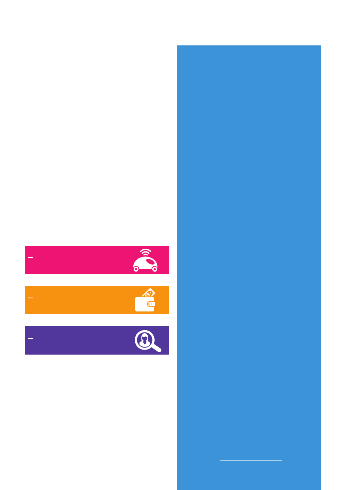
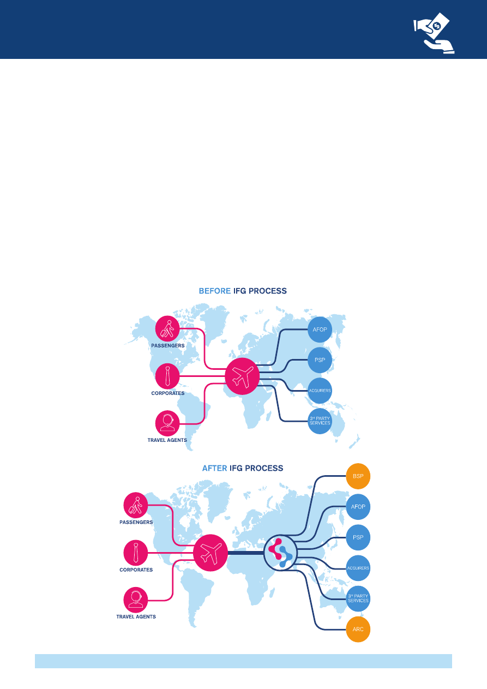

<!DOCTYPE html>
<html xmlns="http://www.w3.org/1999/xhtml" lang="" xml:lang="">
<head>
<title>./whatwedo/stb/Documents/StB-White-Paper-2017-html.html</title>

<meta http-equiv="Content-Type" content="text/html; charset=UTF-8"/>
 <br/>
<style type="text/css">
<!--
	p {margin: 0; padding: 0;}-->
</style>
</head>
<body bgcolor="#A0A0A0" vlink="blue" link="blue">
<div id="page1-div" style="position:relative;width:892px;height:1262px;">

</div>
</body>
</html>
<!DOCTYPE html>
<html xmlns="http://www.w3.org/1999/xhtml" lang="" xml:lang="">
<head>
<title>./whatwedo/stb/Documents/StB-White-Paper-2017-html.html</title>

<meta http-equiv="Content-Type" content="text/html; charset=UTF-8"/>
 <br/>
<style type="text/css">
<!--
	p {margin: 0; padding: 0;}-->
</style>
</head>
<body bgcolor="#A0A0A0" vlink="blue" link="blue">
<div id="page2-div" style="position:relative;width:892px;height:1262px;">

</div>
</body>
</html>
<!DOCTYPE html>
<html xmlns="http://www.w3.org/1999/xhtml" lang="" xml:lang="">
<head>
<title>./whatwedo/stb/Documents/StB-White-Paper-2017-html.html</title>

<meta http-equiv="Content-Type" content="text/html; charset=UTF-8"/>
 <br/>
<style type="text/css">
<!--
	p {margin: 0; padding: 0;}	.ft30{font-size:8px;font-family:RDALYK+AkzidenzGroteskBQ-Medium;color:#1475c5;}
	.ft31{font-size:6px;font-family:YYKBSW+AkzidenzGroteskBQ;color:#6aaae1;}
	.ft32{font-size:3px;font-family:PIZZWO+AkzidenzGroteskBQ-Reg;color:#6aaae1;}
	.ft33{font-size:9px;font-family:RDALYK+AkzidenzGroteskBQ-Medium;color:#9ecd1a;}
	.ft34{font-size:6px;font-family:PIZZWO+AkzidenzGroteskBQ-Reg;color:#1475c5;}
	.ft35{font-size:4px;font-family:PIZZWO+AkzidenzGroteskBQ-Reg;color:#6aaae1;}
	.ft36{font-size:4px;font-family:USMDOE+AkzidenzGroteskBQ;color:#69ace2;}
	.ft37{font-size:32px;font-family:RDALYK+AkzidenzGroteskBQ-Medium;color:#1475c5;}
	.ft38{font-size:7px;font-family:RDALYK+AkzidenzGroteskBQ-Medium;color:#1475c5;}
	.ft39{font-size:5px;font-family:PIZZWO+AkzidenzGroteskBQ-Reg;color:#6aaae1;}
	.ft310{font-size:6px;font-family:RDALYK+AkzidenzGroteskBQ-Medium;color:#80c4ed;}
	.ft311{font-size:8px;line-height:12px;font-family:RDALYK+AkzidenzGroteskBQ-Medium;color:#1475c5;}
	.ft312{font-size:6px;line-height:9px;font-family:YYKBSW+AkzidenzGroteskBQ;color:#6aaae1;}
	.ft313{font-size:3px;line-height:6px;font-family:PIZZWO+AkzidenzGroteskBQ-Reg;color:#6aaae1;}
	.ft314{font-size:6px;line-height:9px;font-family:PIZZWO+AkzidenzGroteskBQ-Reg;color:#1475c5;}
	.ft315{font-size:4px;line-height:8px;font-family:PIZZWO+AkzidenzGroteskBQ-Reg;color:#6aaae1;}
	.ft316{font-size:5px;line-height:8px;font-family:PIZZWO+AkzidenzGroteskBQ-Reg;color:#6aaae1;}
-->
</style>
</head>
<body bgcolor="#A0A0A0" vlink="blue" link="blue">
<div id="page3-div" style="position:relative;width:892px;height:1262px;">

<p style="position:absolute;top:581px;left:247px;white-space:nowrap" class="ft311">Simplifying&#160;&#160;<br/>the Business (StB)&#160;&#160;</p>
<p style="position:absolute;top:610px;left:247px;white-space:nowrap" class="ft312"><i>Transformation in progress&#160;&#160;<br/>and explorations underway</i></p>
<p style="position:absolute;top:637px;left:247px;white-space:nowrap" class="ft313">Making the industry easier to do business with&#160;&#160;<br/>for both customers and partners.</p>
<p style="position:absolute;top:220px;left:219px;white-space:nowrap" class="ft33">A road map to prepare&#160;</p>
<p style="position:absolute;top:234px;left:219px;white-space:nowrap" class="ft33">for tomorrow’s passenger</p>
<p style="position:absolute;top:251px;left:219px;white-space:nowrap" class="ft314">Five goals towards&#160;sustainable&#160;profits&#160;<br/>and better service</p>
<p style="position:absolute;top:222px;left:609px;white-space:nowrap" class="ft311">IATA presents the New&#160;&#160;<br/>Simplifying the Business&#160;<br/>(StB)&#160;Program</p>
<p style="position:absolute;top:267px;left:609px;white-space:nowrap" class="ft315">Tomorrow’s passenger journey will be simple,&#160;<br/>from travel shopping to airport security</p>
<p style="position:absolute;top:275px;left:718px;white-space:nowrap" class="ft36"><b>&#160;</b></p>
<p style="position:absolute;top:598px;left:618px;white-space:nowrap" class="ft30">Simplifying the Business&#160;&#160;</p>
<p style="position:absolute;top:614px;left:618px;white-space:nowrap" class="ft312"><i>Leading transformation&#160;&#160;&#160;&#160;&#160;&#160;&#160;&#160;&#160;&#160;<br/>for customer-centric air travel</i></p>
<p style="position:absolute;top:119px;left:67px;white-space:nowrap" class="ft37">2011</p>
<p style="position:absolute;top:482px;left:67px;white-space:nowrap" class="ft37">2013</p>
<p style="position:absolute;top:845px;left:67px;white-space:nowrap" class="ft37">2015</p>
<p style="position:absolute;top:119px;left:443px;white-space:nowrap" class="ft37">2012</p>
<p style="position:absolute;top:482px;left:443px;white-space:nowrap" class="ft37">2014</p>
<p style="position:absolute;top:845px;left:443px;white-space:nowrap" class="ft37">2016</p>
<p style="position:absolute;top:941px;left:247px;white-space:nowrap" class="ft38">Simplifying the Business&#160;&#160;</p>
<p style="position:absolute;top:956px;left:247px;white-space:nowrap" class="ft316">Innovating better together&#160;&#160;<br/>to benefit the future passenger</p>
<p style="position:absolute;top:1022px;left:590px;white-space:nowrap" class="ft310">Innovating better together</p>
</div>
</body>
</html>
<!DOCTYPE html>
<html xmlns="http://www.w3.org/1999/xhtml" lang="" xml:lang="">
<head>
<title>./whatwedo/stb/Documents/StB-White-Paper-2017-html.html</title>

<meta http-equiv="Content-Type" content="text/html; charset=UTF-8"/>
 <br/>
<style type="text/css">
<!--
	p {margin: 0; padding: 0;}	.ft40{font-size:14px;font-family:PIZZWO+AkzidenzGroteskBQ-Reg;color:#113d76;}
	.ft41{font-size:25px;font-family:LCWBSW+AkzidenzGroteskBQ;color:#1475c5;}
	.ft42{font-size:43px;font-family:PIZZWO+AkzidenzGroteskBQ-Reg;color:#1475c5;}
	.ft43{font-size:11px;font-family:RDALYK+AkzidenzGroteskBQ-Medium;color:#113d76;}
	.ft44{font-size:11px;font-family:PIZZWO+AkzidenzGroteskBQ-Reg;color:#113d76;}
	.ft45{font-size:14px;line-height:22px;font-family:PIZZWO+AkzidenzGroteskBQ-Reg;color:#113d76;}
	.ft46{font-size:11px;line-height:16px;font-family:PIZZWO+AkzidenzGroteskBQ-Reg;color:#113d76;}
-->
</style>
</head>
<body bgcolor="#A0A0A0" vlink="blue" link="blue">
<div id="page4-div" style="position:relative;width:892px;height:1262px;">

<p style="position:absolute;top:435px;left:457px;white-space:nowrap" class="ft45">Similarly, Blockchain is promising seamless, friction-<br/>less payments. Technology enables many benefits&#160;<br/>and we need to focus on its impact on the human&#160;<br/>interaction part of customer experience.&#160;</p>
<p style="position:absolute;top:548px;left:457px;white-space:nowrap" class="ft45">Besides all of these initiatives, we can continue&#160;&#160;<br/>to&#160;improve the speed of design and implementation&#160;<br/>of new standards. IATA has focused recently&#160;on&#160;ac-<br/>celerating the formation of ideas, through the&#160;Ideation&#160;<br/>Hub and hackathons; on speeding up the&#160;develop-<br/>ment of solutions, through incubation and funding&#160;<br/>programs; and on getting solutions to market faster,&#160;<br/>through events and networking. IATA aims at com-<br/>bining these modules in an innovation ecosystem,&#160;&#160;<br/>to accelerate adoption of new industry standards.</p>
<p style="position:absolute;top:795px;left:457px;white-space:nowrap" class="ft45">I look forward to the discussions and potential&#160;<br/>initiatives that the new ideas elaborated in this&#160;<br/>document will incite.&#160;</p>
<p style="position:absolute;top:885px;left:457px;white-space:nowrap" class="ft45">A special thank you to the StB Ideation Hub&#160;<br/>participants and IATA staff that created this&#160;<br/>document and continue to lead innovation&#160;&#160;<br/>in our industry.<br/>&#160;<br/>Sincerely yours,</p>
<p style="position:absolute;top:435px;left:64px;white-space:nowrap" class="ft45">Over the past 13 years, the StB program has&#160;<br/>progressed in improving the passenger experience&#160;<br/>through bridging gaps between processes, exploring&#160;<br/>new initiatives and involving various stakeholders to&#160;<br/>ensure the customer remains the focus. The 2020&#160;<br/>vision of the perfect journey continues to guide the&#160;<br/>development of current and new projects.&#160;</p>
<p style="position:absolute;top:615px;left:64px;white-space:nowrap" class="ft45">The scope remains on the customer experience,&#160;&#160;<br/>but has expanded into other areas. For example,&#160;<br/>this&#160;year, the scope evolved to look into payments&#160;<br/>for passengers and the benefits for customers in&#160;<br/>airport automation. Innovation and digital are the key&#160;<br/>StB drivers for enhancing customer experience. This&#160;<br/>was demonstrated through current projects based&#160;<br/>on product differentiation, providing customers&#160;<br/>with more choice and transparency, customer&#160;<br/>identification and allowing for a secure and&#160;<br/>seamless experience through the airport.</p>
<p style="position:absolute;top:885px;left:64px;white-space:nowrap" class="ft45">Progress in technology has never been so impres-<br/>sive. It plays an increasingly integral part in the StB&#160;<br/>ideas, initiatives and projects. Artificial intelligence&#160;<br/>and machine learning encourages many benefits&#160;<br/>from better personalization of content, offers, and&#160;<br/>experience to automated vehicles and processes.&#160;</p>
<p style="position:absolute;top:60px;left:64px;white-space:nowrap" class="ft41"><b>Foreword</b></p>
<p style="position:absolute;top:173px;left:244px;white-space:nowrap" class="ft42">Innovation and digital are the&#160;</p>
<p style="position:absolute;top:224px;left:244px;white-space:nowrap" class="ft42">key StB drivers for enhancing&#160;</p>
<p style="position:absolute;top:275px;left:244px;white-space:nowrap" class="ft42">customer experience.</p>
<p style="position:absolute;top:325px;left:64px;white-space:nowrap" class="ft43">Eric Léopold</p>
<p style="position:absolute;top:341px;left:64px;white-space:nowrap" class="ft46">Director Transformation,&#160;<br/>FDS – IATA&#160;</p>
</div>
</body>
</html>
<!DOCTYPE html>
<html xmlns="http://www.w3.org/1999/xhtml" lang="" xml:lang="">
<head>
<title>./whatwedo/stb/Documents/StB-White-Paper-2017-html.html</title>

<meta http-equiv="Content-Type" content="text/html; charset=UTF-8"/>
 <br/>
<style type="text/css">
<!--
	p {margin: 0; padding: 0;}	.ft50{font-size:120px;font-family:PIZZWO+AkzidenzGroteskBQ-Reg;color:#1475c5;}
	.ft51{font-size:25px;font-family:LCWBSW+AkzidenzGroteskBQ;color:#ffffff;}
	.ft52{font-size:12px;font-family:PIZZWO+AkzidenzGroteskBQ-Reg;color:#ffffff;}
	.ft53{font-size:12px;line-height:17px;font-family:PIZZWO+AkzidenzGroteskBQ-Reg;color:#ffffff;}
-->
</style>
</head>
<body bgcolor="#A0A0A0" vlink="blue" link="blue">
<div id="page5-div" style="position:relative;width:892px;height:1262px;">

<p style="position:absolute;top:973px;left:272px;white-space:nowrap" class="ft50">IDEAS</p>
<p style="position:absolute;top:64px;left:64px;white-space:nowrap" class="ft51"><b>StB Big Picture</b></p>
<p style="position:absolute;top:144px;left:64px;white-space:nowrap" class="ft53">In 2015, the StB formulated the &#34;Big Picture&#34;. It included five&#160;<br/>essential areas of the customer's end-to-end journey: shop,&#160;<br/>order, pay, engage and experience. All of the ideas from the&#160;<br/>StB IH fall into one of these areas.</p>
</div>
</body>
</html>
<!DOCTYPE html>
<html xmlns="http://www.w3.org/1999/xhtml" lang="" xml:lang="">
<head>
<title>./whatwedo/stb/Documents/StB-White-Paper-2017-html.html</title>

<meta http-equiv="Content-Type" content="text/html; charset=UTF-8"/>
 <br/>
<style type="text/css">
<!--
	p {margin: 0; padding: 0;}	.ft60{font-size:12px;font-family:PIZZWO+AkzidenzGroteskBQ-Reg;color:#113d76;}
	.ft61{font-size:25px;font-family:LCWBSW+AkzidenzGroteskBQ;color:#1475c5;}
	.ft62{font-size:16px;font-family:LCWBSW+AkzidenzGroteskBQ;color:#ffffff;}
	.ft63{font-size:12px;font-family:LCWBSW+AkzidenzGroteskBQ;color:#ffffff;}
	.ft64{font-size:12px;font-family:RDALYK+AkzidenzGroteskBQ-Medium;color:#ffffff;}
	.ft65{font-size:18px;font-family:RDALYK+AkzidenzGroteskBQ-Medium;color:#ffffff;}
	.ft66{font-size:21px;font-family:PIZZWO+AkzidenzGroteskBQ-Reg;color:#ffffff;}
	.ft67{font-size:12px;line-height:17px;font-family:PIZZWO+AkzidenzGroteskBQ-Reg;color:#113d76;}
	.ft68{font-size:12px;line-height:17px;font-family:RDALYK+AkzidenzGroteskBQ-Medium;color:#ffffff;}
	.ft69{font-size:18px;line-height:24px;font-family:RDALYK+AkzidenzGroteskBQ-Medium;color:#ffffff;}
	.ft610{font-size:21px;line-height:33px;font-family:PIZZWO+AkzidenzGroteskBQ-Reg;color:#ffffff;}
-->
</style>
</head>
<body bgcolor="#A0A0A0" vlink="blue" link="blue">
<div id="page6-div" style="position:relative;width:892px;height:1262px;">

<p style="position:absolute;top:144px;left:64px;white-space:nowrap" class="ft67">The IATA Simplifying the Business (StB) program is a&#160;<br/>transformative driver of innovation through key projects and&#160;<br/>initiatives that aim to improve the passenger experience. Led&#160;<br/>by a group of innovation-focused airline representatives that&#160;<br/>are key transformers within their proper organizations, StB&#160;<br/>has become a cornerstone of innovation in IATA and across&#160;<br/>the industry. The program will be explained in more detail in&#160;<br/>the next section of this document.&#160;</p>
<p style="position:absolute;top:300px;left:64px;white-space:nowrap" class="ft67">One of the key pillars of the program is the StB Ideation Hub&#160;<br/>(IH), consisting of key strategic stakeholders from across the&#160;<br/>industry, including airlines, airports, IT providers and other&#160;<br/>partners. Led by IATA, this team of transformative individuals&#160;<br/>meet to brainstorm new ideas and develop them throughout&#160;<br/>the year. &#160;</p>
<p style="position:absolute;top:421px;left:64px;white-space:nowrap" class="ft67">The outcome of the 2017 StB IH is explained in this docu-<br/>ment. &#160;In addition, Proof of Concepts (PoCs) are developed&#160;<br/>to further articulate the ideas. These PoCs are presented at&#160;<br/>the annual IATA World Passenger Symposium, where the&#160;<br/>larger audience is encouraged to discuss the ideas even&#160;<br/>further. &#160;The document also includes an update on the 2016&#160;<br/>ideas (Baggage, One ID, Open API and Payments), including&#160;<br/>their progression and evolution since the 2016 White Paper.</p>
<p style="position:absolute;top:576px;left:64px;white-space:nowrap" class="ft60">This year the three StB Ideation Hub ideas are:&#160;</p>
<p style="position:absolute;top:60px;left:64px;white-space:nowrap" class="ft61"><b>Executive Summary</b></p>
<p style="position:absolute;top:141px;left:483px;white-space:nowrap" class="ft62"><b>Overview of the content&#160;</b></p>
<p style="position:absolute;top:196px;left:483px;white-space:nowrap" class="ft63"><b>Section 1</b></p>
<p style="position:absolute;top:221px;left:483px;white-space:nowrap" class="ft68">Executive Summary – introduces the StB White&#160;<br/>Paper</p>
<p style="position:absolute;top:291px;left:483px;white-space:nowrap" class="ft63"><b>Section 2</b></p>
<p style="position:absolute;top:316px;left:483px;white-space:nowrap" class="ft68">StB Overview – introduces the StB program,&#160;<br/>methodology and governance</p>
<p style="position:absolute;top:386px;left:483px;white-space:nowrap" class="ft63"><b>Section 3</b></p>
<p style="position:absolute;top:411px;left:483px;white-space:nowrap" class="ft68">Update on 2016 Ideas – provides updates on&#160;<br/>the 2016 ideas</p>
<p style="position:absolute;top:481px;left:483px;white-space:nowrap" class="ft63"><b>Section 4</b></p>
<p style="position:absolute;top:506px;left:483px;white-space:nowrap" class="ft68">2017 New Ideas – introduces the three new&#160;<br/>ideas</p>
<p style="position:absolute;top:576px;left:483px;white-space:nowrap" class="ft63"><b>Section 5</b></p>
<p style="position:absolute;top:601px;left:483px;white-space:nowrap" class="ft68">Conclusion – outlines the next steps and&#160;<br/>conclusion</p>
<p style="position:absolute;top:1138px;left:483px;white-space:nowrap" class="ft69">Annual StB White Papers can be&#160;<br/>found at&#160;www.iata.org/stb</p>
<p style="position:absolute;top:846px;left:72px;white-space:nowrap" class="ft610">3<br/>Personalization</p>
<p style="position:absolute;top:638px;left:72px;white-space:nowrap" class="ft610">1&#160;<br/>Autonomous Vehicles</p>
<p style="position:absolute;top:742px;left:72px;white-space:nowrap" class="ft610">2&#160;<br/>Passenger Payments</p>
</div>
</body>
</html>
<!DOCTYPE html>
<html xmlns="http://www.w3.org/1999/xhtml" lang="" xml:lang="">
<head>
<title>./whatwedo/stb/Documents/StB-White-Paper-2017-html.html</title>

<meta http-equiv="Content-Type" content="text/html; charset=UTF-8"/>
 <br/>
<style type="text/css">
<!--
	p {margin: 0; padding: 0;}	.ft70{font-size:17px;font-family:RDALYK+AkzidenzGroteskBQ-Medium;color:#1475c5;}
	.ft71{font-size:12px;font-family:PIZZWO+AkzidenzGroteskBQ-Reg;color:#113d76;}
	.ft72{font-size:12px;font-family:RDALYK+AkzidenzGroteskBQ-Medium;color:#113d76;}
	.ft73{font-size:13px;font-family:RDALYK+AkzidenzGroteskBQ-Medium;color:#1475c5;}
	.ft74{font-size:25px;font-family:LCWBSW+AkzidenzGroteskBQ;color:#1475c5;}
	.ft75{font-size:12px;line-height:17px;font-family:PIZZWO+AkzidenzGroteskBQ-Reg;color:#113d76;}
-->
</style>
</head>
<body bgcolor="#A0A0A0" vlink="blue" link="blue">
<div id="page7-div" style="position:relative;width:892px;height:1262px;">

<p style="position:absolute;top:120px;left:64px;white-space:nowrap" class="ft70">The program</p>
<p style="position:absolute;top:161px;left:64px;white-space:nowrap" class="ft75">The IATA Simplifying the Business (StB) program is unique. Born from a need to find cost reduction and greater automation&#160;<br/>possibilities through simplifying processes and making the most effective use of existing technology, it became a key driver of&#160;<br/>industry adoption and speed. IATA’s role was to bring all the stakeholders with a common vision together to develop industry-<br/>wide standards. The aim was to benefit both the industry and the customer by making a more efficient travel experience for&#160;<br/>everyone, improving customer service while saving at least US $6.5 billion in annual costs. The original five core projects&#160;<br/>were e-Ticketing (ET), Common Use Self-Service (CUSS), Bar-Coded Boarding Pass (BCBP), Radio Frequency ID (RFID)&#160;<br/>and IATA e-Freight.</p>
<p style="position:absolute;top:300px;left:64px;white-space:nowrap" class="ft75">Over the years, the StB program has evolved from the original focus of improving processes to more forward transformational&#160;<br/>thinking. The core activity is still based on improving the passenger experience and cost reduction, but the shift of focus is&#160;<br/>based on transforming the way we operate, rather than simply improving it. In other words, the program tries to reimagine the&#160;<br/>industry and how we would build things from a blank page.&#160;</p>
<p style="position:absolute;top:386px;left:64px;white-space:nowrap" class="ft75">This unique perspective allows us to focus on ideas that were later pursued into projects. The cycle is becoming increasingly&#160;<br/>faster. However, we need to push more and become more innovative and deliver benefits to the industry faster.</p>
<p style="position:absolute;top:485px;left:64px;white-space:nowrap" class="ft70">Benefits&#160;</p>
<p style="position:absolute;top:524px;left:64px;white-space:nowrap" class="ft75">The StB program benefits all involved stakeholders including&#160;<br/>passengers, airlines, airports, travel agents, ground handlers&#160;<br/>and system providers.</p>
<p style="position:absolute;top:605px;left:64px;white-space:nowrap" class="ft70">Unique methodology</p>
<p style="position:absolute;top:645px;left:64px;white-space:nowrap" class="ft75">The key elements of StB are based on its methodology,&#160;<br/>consisting of:&#160;</p>
<p style="position:absolute;top:697px;left:64px;white-space:nowrap" class="ft72">•&#160;&#160;Idea generation</p>
<p style="position:absolute;top:731px;left:64px;white-space:nowrap" class="ft72">•&#160;&#160;Project delivery</p>
<p style="position:absolute;top:766px;left:64px;white-space:nowrap" class="ft72">•&#160;&#160;Industry mobilization and engagement</p>
<p style="position:absolute;top:800px;left:64px;white-space:nowrap" class="ft72">•&#160;&#160;Solid governance structure and robust communica-</p>
<p style="position:absolute;top:818px;left:79px;white-space:nowrap" class="ft72">tions strategy (including a dedicated industry event)&#160;</p>
<p style="position:absolute;top:870px;left:64px;white-space:nowrap" class="ft75">In addition, there is a rigorous project selection process,&#160;<br/>based on specific criteria and these projects are processed&#160;<br/>through five phases, driven by stage gate reviews. The meth-<br/>odology is necessary to ensure a successful StB program.<br/>The StB IH consists of an annual rotating membership of&#160;<br/>several StB SG members and other partners from specific&#160;<br/>industries – depending on the topics discussed. The IH fo-<br/>cuses on ideation and new initiatives that can potentially be&#160;<br/>pursued as a StB project. The StB IH publishes this annual&#160;<br/>White Paper to stimulate conversation and share innovative&#160;<br/>ideas that will lead to industry transformation.&#160;</p>
<p style="position:absolute;top:489px;left:457px;white-space:nowrap" class="ft73">Project phases</p>
<p style="position:absolute;top:485px;left:559px;white-space:nowrap" class="ft70">&#160;</p>
<p style="position:absolute;top:524px;left:457px;white-space:nowrap" class="ft75">Using program cycles, the projects go through five different&#160;<br/>phases:&#160;</p>
<p style="position:absolute;top:576px;left:457px;white-space:nowrap" class="ft72">1)&#160;&#160;Conceptualization:</p>
<p style="position:absolute;top:576px;left:598px;white-space:nowrap" class="ft71">&#160;Illustrate and sketch the concept.&#160;</p>
<p style="position:absolute;top:593px;left:477px;white-space:nowrap" class="ft71">Identify KPIs and reasons for the concept to be explored.&#160;</p>
<p style="position:absolute;top:628px;left:457px;white-space:nowrap" class="ft72">2)&#160;&#160;Exploration:</p>
<p style="position:absolute;top:628px;left:554px;white-space:nowrap" class="ft71">&#160;Assess feasibility and develop an industry&#160;</p>
<p style="position:absolute;top:645px;left:477px;white-space:nowrap" class="ft71">business case based on the identified KPIs.</p>
<p style="position:absolute;top:679px;left:457px;white-space:nowrap" class="ft72">3)&#160;&#160;Development:</p>
<p style="position:absolute;top:680px;left:568px;white-space:nowrap" class="ft71">&#160;Develop the “product”&#160;(e.g., industry stan-</p>
<p style="position:absolute;top:697px;left:477px;white-space:nowrap" class="ft75">dard, recommended practice, implementation roadmap,&#160;<br/>etc.)</p>
<p style="position:absolute;top:749px;left:457px;white-space:nowrap" class="ft72">4)&#160;&#160;Implementation:</p>
<p style="position:absolute;top:749px;left:583px;white-space:nowrap" class="ft71">&#160;Implement the project, including indus-</p>
<p style="position:absolute;top:766px;left:477px;white-space:nowrap" class="ft75">try mobilization and market adoption – according to the&#160;<br/>target roadmap.</p>
<p style="position:absolute;top:818px;left:457px;white-space:nowrap" class="ft72">5)&#160;&#160;Closure:</p>
<p style="position:absolute;top:818px;left:531px;white-space:nowrap" class="ft71">&#160;Ensure the vision/target was achieved, benefits&#160;</p>
<p style="position:absolute;top:835px;left:477px;white-space:nowrap" class="ft75">were realized and close the project as a StB project. The&#160;<br/>initiatives are now transferred to normal operations.</p>
<p style="position:absolute;top:874px;left:457px;white-space:nowrap" class="ft71">&#160;</p>
<p style="position:absolute;top:60px;left:64px;white-space:nowrap" class="ft74"><b>StB Overview</b></p>
</div>
</body>
</html>
<!DOCTYPE html>
<html xmlns="http://www.w3.org/1999/xhtml" lang="" xml:lang="">
<head>
<title>./whatwedo/stb/Documents/StB-White-Paper-2017-html.html</title>

<meta http-equiv="Content-Type" content="text/html; charset=UTF-8"/>
 <br/>
<style type="text/css">
<!--
	p {margin: 0; padding: 0;}	.ft80{font-size:25px;font-family:LCWBSW+AkzidenzGroteskBQ;color:#1475c5;}
	.ft81{font-size:13px;font-family:RDALYK+AkzidenzGroteskBQ-Medium;color:#1475c5;}
	.ft82{font-size:12px;font-family:PIZZWO+AkzidenzGroteskBQ-Reg;color:#113d76;}
	.ft83{font-size:12px;font-family:PIZZWO+AkzidenzGroteskBQ-Reg;color:#1475c5;}
	.ft84{font-size:17px;font-family:RDALYK+AkzidenzGroteskBQ-Medium;color:#1475c5;}
	.ft85{font-size:16px;font-family:RDALYK+AkzidenzGroteskBQ-Medium;color:#113d76;}
	.ft86{font-size:34px;font-family:PIZZWO+AkzidenzGroteskBQ-Reg;color:#113d76;}
	.ft87{font-size:13px;font-family:PIZZWO+AkzidenzGroteskBQ-Reg;color:#113d76;}
	.ft88{font-size:13px;font-family:RDALYK+AkzidenzGroteskBQ-Medium;color:#113d76;}
	.ft89{font-size:12px;font-family:RDALYK+AkzidenzGroteskBQ-Medium;color:#113d76;}
	.ft810{font-size:10px;font-family:RDALYK+AkzidenzGroteskBQ-Medium;color:#113d76;}
	.ft811{font-size:12px;line-height:17px;font-family:PIZZWO+AkzidenzGroteskBQ-Reg;color:#113d76;}
-->
</style>
</head>
<body bgcolor="#A0A0A0" vlink="blue" link="blue">
<div id="page8-div" style="position:relative;width:892px;height:1262px;">

<p style="position:absolute;top:60px;left:64px;white-space:nowrap" class="ft80"><b>StB Overview</b></p>
<p style="position:absolute;top:124px;left:64px;white-space:nowrap" class="ft81">Industry mobilization and engagement</p>
<p style="position:absolute;top:166px;left:64px;white-space:nowrap" class="ft811">Another unique attribute is how StB mobilizes the industry&#160;<br/>to deliver the target when projects are in implementation&#160;<br/>phase. There are designated airline champions that own&#160;<br/>the&#160;process within their own airline. The mobilization effort&#160;<br/>also relies on strong support from IATA’s Board of Governors&#160;<br/>(BoG) and Strategy and Policy Committee (SPC) – which&#160;<br/>reports to the BoG. In addition, there are workshops, and&#160;<br/>campaigns that are regularly delivered to the industry as well&#160;<br/>as communications including dedicated IATA webpages and&#160;<br/>social media.</p>
<p style="position:absolute;top:374px;left:64px;white-space:nowrap" class="ft81">Governance</p>
<p style="position:absolute;top:398px;left:64px;white-space:nowrap" class="ft83">StB Steering Group</p>
<p style="position:absolute;top:439px;left:64px;white-space:nowrap" class="ft811">The StB program is governed by the StB Steering Group&#160;<br/>(SG). The StB SG includes up to 15 airline members direct-<br/>ly appointed by their CEO who advise IATA management on&#160;<br/>the StB program strategy and execution. The group provides&#160;<br/>IATA with guidance and ensures the StB projects are rel-<br/>evant and meet the needs of IATA members. Each member&#160;<br/>participates in the SG with an industry mindset, rather than&#160;<br/>an individual airline mindset. In addition, each member is re-<br/>sponsible to brief their CEO on the activities of StB. Finally,&#160;<br/>the StB activities are reported twice a year to the IATA BoG&#160;<br/>and SPC, who review and guide the StB program.</p>
<p style="position:absolute;top:124px;left:457px;white-space:nowrap" class="ft81">IATA World Passenger Symposium</p>
<p style="position:absolute;top:166px;left:457px;white-space:nowrap" class="ft811">The WPS gathers stakeholders from across the industry&#160;<br/>to focus on the passenger. The WPS is important for the&#160;<br/>StB program, since it is an opportunity to highlight and dis-<br/>cuss the StB projects as well as the work completed by the&#160;<br/>Ideation Hub – more specifically, the White Paper. It is the&#160;<br/>forum where IATA provides the industry agenda and strategy&#160;<br/>for the years to come on everything relating to passenger.&#160;<br/>It’s also the place where standards are adopted and deci-<br/>sions are made through the various industry meetings&#160;<br/>taking place simultaneously.&#160;</p>
<p style="position:absolute;top:766px;left:64px;white-space:nowrap" class="ft84">StB project scorecard</p>
<p style="position:absolute;top:792px;left:482px;white-space:nowrap" class="ft85">2017&#160;TARGET</p>
<p style="position:absolute;top:849px;left:100px;white-space:nowrap" class="ft85">BAGGAGE XML</p>
<p style="position:absolute;top:830px;left:529px;white-space:nowrap" class="ft86">2</p>
<p style="position:absolute;top:850px;left:550px;white-space:nowrap" class="ft87">&#160;</p>
<p style="position:absolute;top:867px;left:466px;white-space:nowrap" class="ft88">Live Implementations</p>
<p style="position:absolute;top:902px;left:190px;white-space:nowrap" class="ft85">NDC</p>
<p style="position:absolute;top:905px;left:228px;white-space:nowrap" class="ft89">&#160;</p>
<p style="position:absolute;top:925px;left:72px;white-space:nowrap" class="ft810">(New Distribution Capability)</p>
<p style="position:absolute;top:892px;left:518px;white-space:nowrap" class="ft86">45</p>
<p style="position:absolute;top:912px;left:560px;white-space:nowrap" class="ft87">&#160;</p>
<p style="position:absolute;top:929px;left:496px;white-space:nowrap" class="ft88">NDC Airlines</p>
<p style="position:absolute;top:964px;left:223px;white-space:nowrap" class="ft85">&#160;</p>
<p style="position:absolute;top:981px;left:124px;white-space:nowrap" class="ft85">ONE ORDER&#160;</p>
<p style="position:absolute;top:974px;left:440px;white-space:nowrap" class="ft87">&#160;</p>
<p style="position:absolute;top:974px;left:444px;white-space:nowrap" class="ft88">Message Standard Adoption</p>
<p style="position:absolute;top:1026px;left:223px;white-space:nowrap" class="ft85">&#160;</p>
<p style="position:absolute;top:1043px;left:167px;white-space:nowrap" class="ft85">ONE ID&#160;</p>
<p style="position:absolute;top:1036px;left:437px;white-space:nowrap" class="ft88">Concept Document Published</p>
<p style="position:absolute;top:1088px;left:223px;white-space:nowrap" class="ft85">&#160;</p>
<p style="position:absolute;top:1105px;left:146px;white-space:nowrap" class="ft85">OPEN API&#160;</p>
<p style="position:absolute;top:1097px;left:447px;white-space:nowrap" class="ft88">Feasibility Study Published&#160;</p>
<p style="position:absolute;top:1148px;left:164px;white-space:nowrap" class="ft85">TRAVEL&#160;&#160;</p>
<p style="position:absolute;top:1168px;left:65px;white-space:nowrap" class="ft85">COMMUNICATIONS&#160;</p>
<p style="position:absolute;top:1160px;left:466px;white-space:nowrap" class="ft88">Industry Data Charter</p>
</div>
</body>
</html>
<!DOCTYPE html>
<html xmlns="http://www.w3.org/1999/xhtml" lang="" xml:lang="">
<head>
<title>./whatwedo/stb/Documents/StB-White-Paper-2017-html.html</title>

<meta http-equiv="Content-Type" content="text/html; charset=UTF-8"/>
 <br/>
<style type="text/css">
<!--
	p {margin: 0; padding: 0;}	.ft90{font-size:18px;font-family:RDALYK+AkzidenzGroteskBQ-Medium;color:#ffffff;}
	.ft91{font-size:25px;font-family:LCWBSW+AkzidenzGroteskBQ;color:#ffffff;}
	.ft92{font-size:264px;font-family:PIZZWO+AkzidenzGroteskBQ-Reg;color:#ffffff;}
	.ft93{font-size:12px;font-family:PIZZWO+AkzidenzGroteskBQ-Reg;color:#ffffff;}
	.ft94{font-size:12px;line-height:17px;font-family:PIZZWO+AkzidenzGroteskBQ-Reg;color:#ffffff;}
-->
</style>
</head>
<body bgcolor="#A0A0A0" vlink="blue" link="blue">
<div id="page9-div" style="position:relative;width:892px;height:1262px;">

<p style="position:absolute;top:214px;left:72px;white-space:nowrap" class="ft90">One ID</p>
<p style="position:absolute;top:340px;left:72px;white-space:nowrap" class="ft90">Payments</p>
<p style="position:absolute;top:592px;left:72px;white-space:nowrap" class="ft90">Open API&#160;</p>
<p style="position:absolute;top:466px;left:72px;white-space:nowrap" class="ft90">Baggage</p>
<p style="position:absolute;top:60px;left:64px;white-space:nowrap" class="ft91"><b>Update on 2016 Ideas</b></p>
<p style="position:absolute;top:1012px;left:315px;white-space:nowrap" class="ft92">2016</p>
<p style="position:absolute;top:127px;left:64px;white-space:nowrap" class="ft93">In 2016, the StB IH explored the following four ideas:&#160;</p>
<p style="position:absolute;top:680px;left:64px;white-space:nowrap" class="ft94">These four ideas were articulated into the 2016 StB White&#160;<br/>Paper. In addition, the team developed proof of concepts&#160;<br/>for each and presented them at the IATA World Passenger&#160;<br/>Symposium in Dubai, UAE.&#160;</p>
<p style="position:absolute;top:766px;left:64px;white-space:nowrap" class="ft94">The progress made on each idea since the 2016 White&#160;<br/>Paper and WPS will be explained in the following sections.</p>
</div>
</body>
</html>
<!DOCTYPE html>
<html xmlns="http://www.w3.org/1999/xhtml" lang="" xml:lang="">
<head>
<title>./whatwedo/stb/Documents/StB-White-Paper-2017-html.html</title>

<meta http-equiv="Content-Type" content="text/html; charset=UTF-8"/>
 <br/>
<style type="text/css">
<!--
	p {margin: 0; padding: 0;}	.ft100{font-size:13px;font-family:RDALYK+AkzidenzGroteskBQ-Medium;color:#ffffff;}
	.ft101{font-size:13px;font-family:PIZZWO+AkzidenzGroteskBQ-Reg;color:#ffffff;}
	.ft102{font-size:11px;font-family:PIZZWO+AkzidenzGroteskBQ-Reg;color:#113d76;}
	.ft103{font-size:25px;font-family:LCWBSW+AkzidenzGroteskBQ;color:#ffffff;}
	.ft104{font-size:12px;font-family:PIZZWO+AkzidenzGroteskBQ-Reg;color:#113d76;}
	.ft105{font-size:17px;font-family:RDALYK+AkzidenzGroteskBQ-Medium;color:#1475c5;}
	.ft106{font-size:11px;line-height:17px;font-family:PIZZWO+AkzidenzGroteskBQ-Reg;color:#113d76;}
	.ft107{font-size:25px;line-height:31px;font-family:LCWBSW+AkzidenzGroteskBQ;color:#ffffff;}
	.ft108{font-size:12px;line-height:17px;font-family:PIZZWO+AkzidenzGroteskBQ-Reg;color:#113d76;}
-->
</style>
</head>
<body bgcolor="#A0A0A0" vlink="blue" link="blue">
<div id="page10-div" style="position:relative;width:892px;height:1262px;">

<p style="position:absolute;top:631px;left:108px;white-space:nowrap" class="ft100">Timeframe</p>
<p style="position:absolute;top:619px;left:319px;white-space:nowrap" class="ft100">Token</p>
<p style="position:absolute;top:631px;left:482px;white-space:nowrap" class="ft100">Support proof of ID</p>
<p style="position:absolute;top:631px;left:662px;white-space:nowrap" class="ft100">Necessary conditions</p>
<p style="position:absolute;top:643px;left:238px;white-space:nowrap" class="ft101">Pre-departure</p>
<p style="position:absolute;top:643px;left:368px;white-space:nowrap" class="ft101">At airport</p>
<p style="position:absolute;top:710px;left:129px;white-space:nowrap" class="ft102">2020</p>
<p style="position:absolute;top:684px;left:648px;white-space:nowrap" class="ft106">Biometric data captured once&#160;<br/>and used through the whole&#160;<br/>process. Digital form of iden-<br/>tity has been developed.</p>
<p style="position:absolute;top:818px;left:129px;white-space:nowrap" class="ft102">2030</p>
<p style="position:absolute;top:810px;left:648px;white-space:nowrap" class="ft106">Interoperability between air-<br/>ports (incl. between countries)</p>
<p style="position:absolute;top:919px;left:123px;white-space:nowrap" class="ft102">Beyond</p>
<p style="position:absolute;top:919px;left:648px;white-space:nowrap" class="ft102">Digital based identity enabled</p>
<p style="position:absolute;top:36px;left:64px;white-space:nowrap" class="ft107"><b>Update on 2016 Ideas<br/>One ID</b></p>
<p style="position:absolute;top:161px;left:64px;white-space:nowrap" class="ft108">In 2016, one of the new ideas underpinning the third StB&#160;<br/>pillar of a “seamless and hassle free”&#160;travel experience was&#160;<br/>to connect the dots across the end-to-end passenger pro-<br/>cess from an identity management perspective. Moreover,&#160;<br/>the vision was to create a streamlined, friction-free process&#160;<br/>that allows an individual to assert their identity (online or in&#160;<br/>person) to the required level, while maintaining the privacy&#160;<br/>of personal data and enabling significant improvements to&#160;<br/>operational efficiency and security. It is paramount that this&#160;<br/>vision will be delivered through true collaboration between&#160;<br/>airlines, airports and government agencies.&#160;</p>
<p style="position:absolute;top:156px;left:457px;white-space:nowrap" class="ft105">Key concepts and principles</p>
<p style="position:absolute;top:196px;left:457px;white-space:nowrap" class="ft104">•&#160;&#160;One ID will rely on a trusted digital identity to facilitate&#160;</p>
<p style="position:absolute;top:213px;left:472px;white-space:nowrap" class="ft108">improved customer experience, speed and security. This&#160;<br/>should be introduced as early in the passenger process as&#160;<br/>possible, with the validation of identity-related information&#160;<br/>at the time of booking or shortly thereafter.</p>
<p style="position:absolute;top:300px;left:457px;white-space:nowrap" class="ft104">•&#160;&#160;One single capture of passenger data will be used by&#160;</p>
<p style="position:absolute;top:317px;left:472px;white-space:nowrap" class="ft108">all stakeholders across the end-to-end journey including&#160;<br/>outbound and inbound.</p>
<p style="position:absolute;top:369px;left:457px;white-space:nowrap" class="ft104">•&#160;&#160;Biometric recognition will be used within the airport envi-</p>
<p style="position:absolute;top:386px;left:472px;white-space:nowrap" class="ft104">ronment, to confirm an individual’s identity.</p>
<p style="position:absolute;top:421px;left:457px;white-space:nowrap" class="ft104">•&#160;&#160;A trust framework will need to be in place, supporting&#160;</p>
<p style="position:absolute;top:438px;left:472px;white-space:nowrap" class="ft108">the collaboration of various stakeholders such as airlines,&#160;<br/>airports and government agencies.&#160;</p>
<p style="position:absolute;top:490px;left:457px;white-space:nowrap" class="ft104">•&#160;&#160;Privacy by design, and strict compliance with regulations&#160;</p>
<p style="position:absolute;top:507px;left:472px;white-space:nowrap" class="ft104">pertaining to data privacy.</p>
<p style="position:absolute;top:542px;left:457px;white-space:nowrap" class="ft104">•&#160;&#160;Different systems will be deployed due to differing regula-</p>
<p style="position:absolute;top:559px;left:472px;white-space:nowrap" class="ft108">tory and operational requirements; interoperability is key.&#160;<br/>&#160;</p>
<p style="position:absolute;top:1025px;left:72px;white-space:nowrap" class="ft108">In the near term, the main focus will be on the pre-departure process, in particular how identity related information can be&#160;<br/>verified early on in the process, as well as how biometric information can be used as a single token to facilitate the depar-<br/>ture and/or arrivals process within a given airport ecosystem. The e-passport will still be used to authenticate identity.</p>
<p style="position:absolute;top:1095px;left:72px;white-space:nowrap" class="ft108">In the longer term, we will start to see wide scale interoperability between airport ecosystems enabling cross-border&#160;&#160;<br/>scenarios linking departures to arrivals.</p>
<p style="position:absolute;top:1146px;left:72px;white-space:nowrap" class="ft108">Ultimately, we expect to see the use of a digital identity allowing an individual to assert their identity, online or in person,&#160;&#160;<br/>to the required level and throughout the end-to-end process, entirely replacing the use of a physical passport.</p>
</div>
</body>
</html>
<!DOCTYPE html>
<html xmlns="http://www.w3.org/1999/xhtml" lang="" xml:lang="">
<head>
<title>./whatwedo/stb/Documents/StB-White-Paper-2017-html.html</title>

<meta http-equiv="Content-Type" content="text/html; charset=UTF-8"/>
 <br/>
<style type="text/css">
<!--
	p {margin: 0; padding: 0;}	.ft110{font-size:17px;font-family:RDALYK+AkzidenzGroteskBQ-Medium;color:#1475c5;}
	.ft111{font-size:12px;font-family:PIZZWO+AkzidenzGroteskBQ-Reg;color:#113d76;}
	.ft112{font-size:25px;font-family:LCWBSW+AkzidenzGroteskBQ;color:#ffffff;}
	.ft113{font-size:12px;line-height:17px;font-family:PIZZWO+AkzidenzGroteskBQ-Reg;color:#113d76;}
-->
</style>
</head>
<body bgcolor="#A0A0A0" vlink="blue" link="blue">
<div id="page11-div" style="position:relative;width:892px;height:1262px;">

<p style="position:absolute;top:156px;left:79px;white-space:nowrap" class="ft110">Progress in 2017</p>
<p style="position:absolute;top:161px;left:230px;white-space:nowrap" class="ft111">&#160;</p>
<p style="position:absolute;top:179px;left:79px;white-space:nowrap" class="ft113">&#160;<br/>This new work stream was merged with the existing Single&#160;<br/>Token work stream under the banner of “One ID”, and the&#160;<br/>IATA team established a task force composed of airlines,&#160;<br/>airports, governments (immigration, border control and&#160;<br/>security) and representatives of the vendor community in&#160;<br/>order to clearly define the scope and the following deliver-<br/>ables:</p>
<p style="position:absolute;top:351px;left:64px;white-space:nowrap" class="ft111">•&#160;&#160;High level concept paper describing the importance of&#160;</p>
<p style="position:absolute;top:369px;left:79px;white-space:nowrap" class="ft113">One ID and the qualitative benefits derived from it, what&#160;&#160;<br/>it is, and what its core principles are.</p>
<p style="position:absolute;top:421px;left:64px;white-space:nowrap" class="ft111">•&#160;&#160;Detailed documentation describing in an evolutionary&#160;</p>
<p style="position:absolute;top:438px;left:79px;white-space:nowrap" class="ft113">roadmap what is possible, practical and worthwhile in&#160;&#160;<br/>the short, medium and long-term. The documentation&#160;<br/>includes:&#160;</p>
<p style="position:absolute;top:507px;left:80px;white-space:nowrap" class="ft111">-&#160;&#160;Concepts, solutions and technologies that need to&#160;&#160;</p>
<p style="position:absolute;top:524px;left:94px;white-space:nowrap" class="ft111">be on our radar screen in each of these time frames.</p>
<p style="position:absolute;top:559px;left:80px;white-space:nowrap" class="ft111">-&#160;&#160;A high level concept of operations that describes,&#160;&#160;</p>
<p style="position:absolute;top:576px;left:94px;white-space:nowrap" class="ft113">practically, how it could work in each of these time&#160;<br/>frames. It also identifies the actors and describes their&#160;<br/>roles, how they interact with one another and for what&#160;<br/>purpose. The specific outcomes that are expected from&#160;<br/>interactions between them, and a high level process&#160;<br/>model and data flows.</p>
<p style="position:absolute;top:697px;left:80px;white-space:nowrap" class="ft111">-&#160;&#160;The elements of a trust framework that would need to&#160;</p>
<p style="position:absolute;top:714px;left:94px;white-space:nowrap" class="ft113">be in place between key stakeholders to enable this&#160;<br/>concept of operations.</p>
<p style="position:absolute;top:766px;left:80px;white-space:nowrap" class="ft111">-&#160;&#160;The regulatory framework that would need to be in&#160;</p>
<p style="position:absolute;top:783px;left:94px;white-space:nowrap" class="ft111">place to enable this concept of operations.&#160;</p>
<p style="position:absolute;top:835px;left:64px;white-space:nowrap" class="ft111">•&#160;&#160;The team is also seeking to formalize the relationship with&#160;</p>
<p style="position:absolute;top:853px;left:79px;white-space:nowrap" class="ft113">various proof of concept implementations that are ongoing&#160;<br/>in different parts of the world, enabling us to learn from&#160;<br/>their experiences, fine tune concept documentation,&#160;&#160;<br/>and&#160;start producing guidance material.</p>
<p style="position:absolute;top:156px;left:457px;white-space:nowrap" class="ft110">Next steps</p>
<p style="position:absolute;top:196px;left:457px;white-space:nowrap" class="ft113">In 2018, the task force will leverage various pilot projects to&#160;<br/>gather operational data in order to further refine the concept&#160;<br/>documentation and produce initial guidance materials. The&#160;<br/>development of a template trust framework also features&#160;<br/>prominently on the agenda.</p>
<p style="position:absolute;top:300px;left:457px;white-space:nowrap" class="ft113">Several proof of concept implementations are ongoing&#160;<br/>across the globe, but the vast majority of these currently&#160;<br/>focus either on the departure or on the arrivals process, and&#160;<br/>often with a limited number of stakeholders involved. In addi-<br/>tion, the team will continue to proactively look for pilot projects&#160;<br/>demonstrating the viability of cross-border scenarios in 2018.&#160;<br/>Another area of focus for pilot projects is the pre-departure&#160;<br/>process, and particularly how identity related&#160;information&#160;<br/>can be validated early in the process; API data quality is a&#160;<br/>key issue today, and improving this will be a key prerequisite&#160;<br/>to changing the current trust framework to the benefit of the&#160;<br/>traveler.&#160;</p>
<p style="position:absolute;top:67px;left:64px;white-space:nowrap" class="ft112"><b>One ID</b></p>
<p style="position:absolute;top:36px;left:64px;white-space:nowrap" class="ft112"><b>Update on 2016 Ideas</b></p>
</div>
</body>
</html>
<!DOCTYPE html>
<html xmlns="http://www.w3.org/1999/xhtml" lang="" xml:lang="">
<head>
<title>./whatwedo/stb/Documents/StB-White-Paper-2017-html.html</title>

<meta http-equiv="Content-Type" content="text/html; charset=UTF-8"/>
 <br/>
<style type="text/css">
<!--
	p {margin: 0; padding: 0;}	.ft120{font-size:12px;font-family:PIZZWO+AkzidenzGroteskBQ-Reg;color:#113d76;}
	.ft121{font-size:25px;font-family:LCWBSW+AkzidenzGroteskBQ;color:#ffffff;}
	.ft122{font-size:10px;font-family:RDALYK+AkzidenzGroteskBQ-Medium;color:#113d76;}
	.ft123{font-size:10px;font-family:PIZZWO+AkzidenzGroteskBQ-Reg;color:#113d76;}
	.ft124{font-size:12px;line-height:17px;font-family:PIZZWO+AkzidenzGroteskBQ-Reg;color:#113d76;}
-->
</style>
</head>
<body bgcolor="#A0A0A0" vlink="blue" link="blue">
<div id="page12-div" style="position:relative;width:892px;height:1262px;">

<p style="position:absolute;top:161px;left:64px;white-space:nowrap" class="ft124">The focus in 2016 was on business-to-business payments.&#160;<br/>There is considerable global variation in preferred types&#160;<br/>of payment, banking services, payment acceptance and&#160;<br/>shopping methods. In addition, the payment and settlement&#160;<br/>process and service level for airlines varies considerably&#160;<br/>by region and channel. Payment relies on complex legacy&#160;<br/>processes that include a diverse and multifaceted regulatory&#160;<br/>framework. The intent was to make payment processing sim-<br/>ple, consistent and secure for the entire air transport industry&#160;<br/>while reducing payment processing costs and related fraud.&#160;</p>
<p style="position:absolute;top:351px;left:64px;white-space:nowrap" class="ft124">The vision was to enhance the passenger experience by&#160;<br/>enabling payments anywhere (omni-payment) as well as&#160;<br/>reducing the complexity on the merchant side.&#160;</p>
<p style="position:absolute;top:421px;left:64px;white-space:nowrap" class="ft124">The team worked the idea into the scope of the IATA project&#160;<br/>called the IATA Financial Gateway (IFG). The IFG focuses&#160;<br/>on&#160;online payments – facilitating and optimizing the online&#160;<br/>payment process for airlines and other travel suppliers.&#160;</p>
<p style="position:absolute;top:67px;left:64px;white-space:nowrap" class="ft121"><b>Payments</b></p>
<p style="position:absolute;top:161px;left:457px;white-space:nowrap" class="ft124">Acting as aggregator on various forms of payments and&#160;<br/>different payment providers, it reduces the complexity of&#160;<br/>connecting to various services and simplifies the payment&#160;<br/>process through a single global connection. IFG aims to ad-<br/>dress the airline’s need to increase the availability of various&#160;<br/>forms of payment in different sales channels including the&#160;<br/>direct and indirect sales.</p>
<p style="position:absolute;top:300px;left:457px;white-space:nowrap" class="ft124">IFG provides the ability for airlines to manage the accep-<br/>tance of various forms of payment, select payment providers,&#160;<br/>and even restrict or allow specific forms of payment for each&#160;<br/>individual payment transaction.</p>
<p style="position:absolute;top:386px;left:457px;white-space:nowrap" class="ft124">Access to multiple payment providers is important but this is&#160;<br/>not the only benefit the IFG provides. It also enables IATA-<br/>managed forms of payment such as BSP Cash or EasyPay&#160;<br/>for the non-GDS sales channel of the airlines; it makes other&#160;<br/>IATA card services such as Fraud Clear available as part of&#160;<br/>the processing as well.</p>
<p style="position:absolute;top:36px;left:64px;white-space:nowrap" class="ft121"><b>Update on 2016 Ideas</b></p>
<p style="position:absolute;top:1205px;left:74px;white-space:nowrap" class="ft122">AFOP</p>
<p style="position:absolute;top:1206px;left:105px;white-space:nowrap" class="ft123">&#160;- Alternative Forms of Payment &#160; &#160;</p>
<p style="position:absolute;top:1205px;left:273px;white-space:nowrap" class="ft122">PSP</p>
<p style="position:absolute;top:1206px;left:296px;white-space:nowrap" class="ft123">&#160;- Payment Service Providers &#160; &#160;</p>
<p style="position:absolute;top:1205px;left:453px;white-space:nowrap" class="ft122">BSP</p>
<p style="position:absolute;top:1206px;left:476px;white-space:nowrap" class="ft123">&#160;- Billing and Settlement Plan &#160; &#160;</p>
<p style="position:absolute;top:1205px;left:633px;white-space:nowrap" class="ft122">ARC</p>
<p style="position:absolute;top:1206px;left:657px;white-space:nowrap" class="ft123">&#160;- Airlines Reporting Corporation</p>
</div>
</body>
</html>
<!DOCTYPE html>
<html xmlns="http://www.w3.org/1999/xhtml" lang="" xml:lang="">
<head>
<title>./whatwedo/stb/Documents/StB-White-Paper-2017-html.html</title>

<meta http-equiv="Content-Type" content="text/html; charset=UTF-8"/>
 <br/>
<style type="text/css">
<!--
	p {margin: 0; padding: 0;}	.ft130{font-size:18px;font-family:PIZZWO+AkzidenzGroteskBQ-Reg;color:#ffffff;}
	.ft131{font-size:18px;font-family:RDALYK+AkzidenzGroteskBQ-Medium;color:#ffffff;}
	.ft132{font-size:25px;font-family:LCWBSW+AkzidenzGroteskBQ;color:#ffffff;}
	.ft133{font-size:17px;font-family:RDALYK+AkzidenzGroteskBQ-Medium;color:#1475c5;}
	.ft134{font-size:13px;font-family:LCWBSW+AkzidenzGroteskBQ;color:#ed1373;}
	.ft135{font-size:13px;font-family:LCWBSW+AkzidenzGroteskBQ;color:#3c93d6;}
	.ft136{font-size:13px;font-family:RDALYK+AkzidenzGroteskBQ-Medium;color:#3c93d6;}
	.ft137{font-size:13px;font-family:JZXPQA+AkzidenzGroteskBQ-Light;color:#231f20;}
	.ft138{font-size:13px;font-family:PIZZWO+AkzidenzGroteskBQ-Reg;color:#113d76;}
	.ft139{font-size:16px;font-family:LCWBSW+AkzidenzGroteskBQ;color:#ed1373;}
	.ft1310{font-size:16px;font-family:LCWBSW+AkzidenzGroteskBQ;color:#3c93d6;}
	.ft1311{font-size:16px;font-family:JZXPQA+AkzidenzGroteskBQ-Light;color:#231f20;}
	.ft1312{font-size:13px;font-family:PIZZWO+AkzidenzGroteskBQ-Reg;color:#231f20;}
	.ft1313{font-size:13px;font-family:LCWBSW+AkzidenzGroteskBQ;color:#231f20;}
	.ft1314{font-size:14px;font-family:LCWBSW+AkzidenzGroteskBQ;color:#3c93d6;}
	.ft1315{font-size:16px;font-family:LCWBSW+AkzidenzGroteskBQ;color:#231f20;}
	.ft1316{font-size:10px;font-family:RDALYK+AkzidenzGroteskBQ-Medium;color:#ffffff;}
	.ft1317{font-size:12px;font-family:PIZZWO+AkzidenzGroteskBQ-Reg;color:#3c93d6;}
	.ft1318{font-size:12px;font-family:PIZZWO+AkzidenzGroteskBQ-Reg;color:#113d76;}
	.ft1319{font-size:14px;font-family:RDALYK+AkzidenzGroteskBQ-Medium;color:#ec114b;}
	.ft1320{font-size:14px;font-family:RDALYK+AkzidenzGroteskBQ-Medium;color:#3c93d6;}
	.ft1321{font-size:14px;font-family:RDALYK+AkzidenzGroteskBQ-Medium;color:#ed1373;}
	.ft1322{font-size:13px;line-height:18px;font-family:PIZZWO+AkzidenzGroteskBQ-Reg;color:#113d76;}
-->
</style>
</head>
<body bgcolor="#A0A0A0" vlink="blue" link="blue">
<div id="page13-div" style="position:relative;width:892px;height:1262px;">

<p style="position:absolute;top:1138px;left:527px;white-space:nowrap" class="ft130">Further details and contact&#160;</p>
<p style="position:absolute;top:1163px;left:522px;white-space:nowrap" class="ft130">information can be found on&#160;</p>
<p style="position:absolute;top:1187px;left:532px;white-space:nowrap" class="ft131">http://www.iata.org/IFG</p>
<p style="position:absolute;top:67px;left:64px;white-space:nowrap" class="ft132"><b>Payments</b></p>
<p style="position:absolute;top:154px;left:64px;white-space:nowrap" class="ft133">Benefits</p>
<p style="position:absolute;top:36px;left:64px;white-space:nowrap" class="ft132"><b>Update on 2016 Ideas</b></p>
<p style="position:absolute;top:231px;left:64px;white-space:nowrap" class="ft134"><b>•</b></p>
<p style="position:absolute;top:231px;left:69px;white-space:nowrap" class="ft135"><b>&#160;</b></p>
<p style="position:absolute;top:231px;left:73px;white-space:nowrap" class="ft136">&#160;Global Reach</p>
<p style="position:absolute;top:231px;left:165px;white-space:nowrap" class="ft137">&#160;</p>
<p style="position:absolute;top:249px;left:73px;white-space:nowrap" class="ft1322">Extends market reach and improves&#160;<br/>user experience to enhance sales&#160;<br/>opportunities</p>
<p style="position:absolute;top:378px;left:64px;white-space:nowrap" class="ft134"><b>•</b></p>
<p style="position:absolute;top:378px;left:69px;white-space:nowrap" class="ft135"><b>&#160;&#160;Simplification</b></p>
<p style="position:absolute;top:379px;left:174px;white-space:nowrap" class="ft137">&#160;</p>
<p style="position:absolute;top:396px;left:73px;white-space:nowrap" class="ft1322">Reduces complexity and in-<br/>creases operational efficiency&#160;<br/>through a single global connec-<br/>tion with access to all payment&#160;<br/>processors, including the BSP</p>
<p style="position:absolute;top:231px;left:611px;white-space:nowrap" class="ft139"><b>•</b></p>
<p style="position:absolute;top:231px;left:617px;white-space:nowrap" class="ft1310"><b>&#160;&#160;</b></p>
<p style="position:absolute;top:233px;left:622px;white-space:nowrap" class="ft135"><b>Cost Efficiency</b></p>
<p style="position:absolute;top:231px;left:730px;white-space:nowrap" class="ft1311">&#160;</p>
<p style="position:absolute;top:251px;left:622px;white-space:nowrap" class="ft1322">Improves operational savings&#160;<br/>and management of Service&#160;&#160;<br/>Level Agreements and risks&#160;<br/>while reducing agency settle-<br/>ment costs by deploying BSP&#160;<br/>settlement in all non-GDS&#160;<br/>distribution channels using IFG&#160;<br/>real-time capture services for&#160;<br/>both ET and ticketless carriers</p>
<p style="position:absolute;top:395px;left:816px;white-space:nowrap" class="ft1312">&#160;</p>
<p style="position:absolute;top:558px;left:64px;white-space:nowrap" class="ft134"><b>•</b></p>
<p style="position:absolute;top:558px;left:69px;white-space:nowrap" class="ft135"><b>&#160;&#160;Security</b></p>
<p style="position:absolute;top:558px;left:133px;white-space:nowrap" class="ft1313"><b>&#160;</b></p>
<p style="position:absolute;top:576px;left:73px;white-space:nowrap" class="ft1322">Improves system security&#160;&#160;<br/>by providing a highly reliable&#160;<br/>system and secured connection&#160;<br/>with Payment Card Industry Data&#160;<br/>Security Standards certification&#160;&#160;<br/>and data privacy</p>
<p style="position:absolute;top:518px;left:608px;white-space:nowrap" class="ft139"><b>•</b></p>
<p style="position:absolute;top:519px;left:614px;white-space:nowrap" class="ft1314"><b>&#160;</b></p>
<p style="position:absolute;top:521px;left:619px;white-space:nowrap" class="ft135"><b>&#160;In Control</b></p>
<p style="position:absolute;top:518px;left:691px;white-space:nowrap" class="ft1315"><b>&#160;</b></p>
<p style="position:absolute;top:538px;left:619px;white-space:nowrap" class="ft1322">Be in control of when each&#160;&#160;<br/>payment is made and the form of&#160;<br/>payments accepted while having&#160;<br/>the freedom and flexibility to se-<br/>lect or change payment partners&#160;<br/>without any systemdisturbances</p>
<p style="position:absolute;top:366px;left:369px;white-space:nowrap" class="ft1316">Travelers</p>
<p style="position:absolute;top:485px;left:369px;white-space:nowrap" class="ft1316">Agency</p>
<p style="position:absolute;top:497px;left:369px;white-space:nowrap" class="ft1316">Community</p>
<p style="position:absolute;top:485px;left:487px;white-space:nowrap" class="ft1316">Service</p>
<p style="position:absolute;top:497px;left:487px;white-space:nowrap" class="ft1316">Providers</p>
<p style="position:absolute;top:355px;left:487px;white-space:nowrap" class="ft1316">Travel</p>
<p style="position:absolute;top:367px;left:487px;white-space:nowrap" class="ft1316">Suppliers</p>
<p style="position:absolute;top:755px;left:77px;white-space:nowrap" class="ft133">Key features</p>
<p style="position:absolute;top:761px;left:189px;white-space:nowrap" class="ft1317">&#160;</p>
<p style="position:absolute;top:778px;left:77px;white-space:nowrap" class="ft1317">&#160;</p>
<p style="position:absolute;top:795px;left:77px;white-space:nowrap" class="ft1318">Designed to meet the payment needs of all airline business models, IFG offers:&#160;</p>
<p style="position:absolute;top:832px;left:94px;white-space:nowrap" class="ft1319">•</p>
<p style="position:absolute;top:832px;left:99px;white-space:nowrap" class="ft1320">&#160;A single global connection</p>
<p style="position:absolute;top:859px;left:94px;white-space:nowrap" class="ft1321">•</p>
<p style="position:absolute;top:859px;left:99px;white-space:nowrap" class="ft1320">&#160;Access to all forms of payments through a range of payment service providers</p>
<p style="position:absolute;top:886px;left:94px;white-space:nowrap" class="ft1321">•</p>
<p style="position:absolute;top:886px;left:99px;white-space:nowrap" class="ft1320">&#160;A seamless integration with ticketing systems and various distribution channels</p>
<p style="position:absolute;top:913px;left:94px;white-space:nowrap" class="ft1321">•&#160;</p>
<p style="position:absolute;top:913px;left:104px;white-space:nowrap" class="ft1320">Business Rules Management according to the airline’s payment strategy&#160;</p>
<p style="position:absolute;top:940px;left:94px;white-space:nowrap" class="ft1321">•</p>
<p style="position:absolute;top:940px;left:99px;white-space:nowrap" class="ft1320">&#160;BSP/ARC Sales Reporting</p>
<p style="position:absolute;top:967px;left:94px;white-space:nowrap" class="ft1321">•</p>
<p style="position:absolute;top:967px;left:99px;white-space:nowrap" class="ft1320">&#160;Third party services including fraud prevention, behavior analytics and tokenization services</p>
</div>
</body>
</html>
<!DOCTYPE html>
<html xmlns="http://www.w3.org/1999/xhtml" lang="" xml:lang="">
<head>
<title>./whatwedo/stb/Documents/StB-White-Paper-2017-html.html</title>

<meta http-equiv="Content-Type" content="text/html; charset=UTF-8"/>
 <br/>
<style type="text/css">
<!--
	p {margin: 0; padding: 0;}	.ft140{font-size:12px;font-family:PIZZWO+AkzidenzGroteskBQ-Reg;color:#113d76;}
	.ft141{font-size:17px;font-family:RDALYK+AkzidenzGroteskBQ-Medium;color:#1475c5;}
	.ft142{font-size:12px;font-family:RDALYK+AkzidenzGroteskBQ-Medium;color:#113d76;}
	.ft143{font-size:25px;font-family:LCWBSW+AkzidenzGroteskBQ;color:#ffffff;}
	.ft144{font-size:12px;line-height:17px;font-family:PIZZWO+AkzidenzGroteskBQ-Reg;color:#113d76;}
	.ft145{font-size:12px;line-height:17px;font-family:RDALYK+AkzidenzGroteskBQ-Medium;color:#113d76;}
-->
</style>
</head>
<body bgcolor="#A0A0A0" vlink="blue" link="blue">
<div id="page14-div" style="position:relative;width:892px;height:1262px;">

<p style="position:absolute;top:161px;left:64px;white-space:nowrap" class="ft144">In 2016, the StB Ideation Hub explored different areas of&#160;<br/>baggage handling transformation. Existing baggage infra-<br/>structure is at full capacity and no longer sufficient for future&#160;<br/>passenger volumes and customer expectations. The vision&#160;<br/>is to re-invent the baggage process by providing real-time&#160;<br/>tracking and tracing and robust identification.&#160;</p>
<p style="position:absolute;top:282px;left:64px;white-space:nowrap" class="ft144">Following the StB IH, IATA reviewed current baggage han-<br/>dling processes and completed an assessment of baggage&#160;<br/>tracking technologies and baggage delivery. These ideas are&#160;<br/>continuing to be further developed and the below outlines&#160;<br/>the progress made.&#160;</p>
<p style="position:absolute;top:386px;left:64px;white-space:nowrap" class="ft144">New entrants to the market are bringing into question the&#160;<br/>way that airlines handle baggage. The unbundling of the&#160;<br/>baggage product from the ticket price has been a fact for&#160;<br/>several years in many markets. With this unbundling comes&#160;<br/>choice - passengers can choose how their bag will travel.&#160;<br/>These additional services are not quite ready for the main-<br/>stream, but will be in the near future.&#160;</p>
<p style="position:absolute;top:524px;left:64px;white-space:nowrap" class="ft144">Passenger expectations are not a new pressure, but they&#160;<br/>constantly increase. The passenger will soon demand “real-<br/>time”&#160;notification of their baggage location. Some passengers&#160;<br/>are already taking this into their own hands by buying track-<br/>ing devices for their baggage. It is a great shame that with&#160;<br/>the airlines 99.4% success rate of delivering bags, passen-<br/>gers feel the need to buy an electronic comforter to reassure&#160;<br/>them where their bag actually is during their journey. IATA&#160;<br/>Resolution 753 requires airlines to collect the tracking data&#160;&#160;<br/>for baggage but does not require that this is shared with&#160;&#160;<br/>the passengers, as this is an airline business decision. &#160;</p>
<p style="position:absolute;top:160px;left:457px;white-space:nowrap" class="ft141">Current innovations</p>
<p style="position:absolute;top:196px;left:457px;white-space:nowrap" class="ft144">There are a number of innovations to current processes,&#160;<br/>where standards exist to enable industry cooperation.&#160;&#160;<br/>These include:&#160;<br/>&#160;<br/>&#160;</p>
<p style="position:absolute;top:282px;left:457px;white-space:nowrap" class="ft145">1. Identification&#160;<br/>&#160;</p>
<p style="position:absolute;top:317px;left:457px;white-space:nowrap" class="ft144">A new identifier (.M) can be applied by any stakeholder in&#160;<br/>the baggage journey, from bag manufacturer to passenger.&#160;<br/>The only requirement is that the airline is capable of receiv-<br/>ing this identity from the bag. In addition, airlines can take&#160;<br/>advantage of technology to make the automatic capturing of&#160;<br/>baggage identities possible. While additional technologies&#160;<br/>exist for identification, they are either cost prohibitive when&#160;<br/>applied to many tracking points or not yet proven.&#160;<br/>&#160;</p>
<p style="position:absolute;top:489px;left:457px;white-space:nowrap" class="ft142">2. &#160;Communication</p>
<p style="position:absolute;top:524px;left:457px;white-space:nowrap" class="ft144">Airlines are now able to use modern Internet of Things (IoT)&#160;<br/>technology to send messages formatted in XML over the open&#160;<br/>internet with complete security and confidence in delivery.&#160;</p>
<p style="position:absolute;top:593px;left:457px;white-space:nowrap" class="ft144">IoT uses the Message Queue Telemetry Transport (MQTT),&#160;<br/>a machine-to-machine /IoT connectivity protocol. This is a&#160;<br/>lightweight publish/subscribe messaging transport with built&#160;<br/>in resilience for connectivity drops. It uses a small bandwidth,&#160;<br/>and is easy to implement making it perfect for large numbers&#160;<br/>of small messages – such as those found in a baggage&#160;&#160;<br/>tracking implementation.</p>
<p style="position:absolute;top:67px;left:64px;white-space:nowrap" class="ft143"><b>Baggage</b></p>
<p style="position:absolute;top:36px;left:64px;white-space:nowrap" class="ft143"><b>Update on 2016 Ideas</b></p>
</div>
</body>
</html>
<!DOCTYPE html>
<html xmlns="http://www.w3.org/1999/xhtml" lang="" xml:lang="">
<head>
<title>./whatwedo/stb/Documents/StB-White-Paper-2017-html.html</title>

<meta http-equiv="Content-Type" content="text/html; charset=UTF-8"/>
 <br/>
<style type="text/css">
<!--
	p {margin: 0; padding: 0;}	.ft150{font-size:17px;font-family:RDALYK+AkzidenzGroteskBQ-Medium;color:#1475c5;}
	.ft151{font-size:12px;font-family:PIZZWO+AkzidenzGroteskBQ-Reg;color:#113d76;}
	.ft152{font-size:12px;font-family:RDALYK+AkzidenzGroteskBQ-Medium;color:#113d76;}
	.ft153{font-size:25px;font-family:LCWBSW+AkzidenzGroteskBQ;color:#ffffff;}
	.ft154{font-size:12px;line-height:17px;font-family:PIZZWO+AkzidenzGroteskBQ-Reg;color:#113d76;}
-->
</style>
</head>
<body bgcolor="#A0A0A0" vlink="blue" link="blue">
<div id="page15-div" style="position:relative;width:892px;height:1262px;">

<p style="position:absolute;top:154px;left:64px;white-space:nowrap" class="ft150">Long-term transformations needed</p>
<p style="position:absolute;top:176px;left:64px;white-space:nowrap" class="ft151">&#160;</p>
<p style="position:absolute;top:213px;left:64px;white-space:nowrap" class="ft152">1. Smart regulation</p>
<p style="position:absolute;top:248px;left:64px;white-space:nowrap" class="ft151">&#160;&#160;Concern over the capability to swap baggage labels&#160;&#160;</p>
<p style="position:absolute;top:265px;left:80px;white-space:nowrap" class="ft154">or produce fake ones is severely hindering the ability of&#160;<br/>airlines to use home printed and electronic baggage tags.&#160;<br/>Regulators need to examine and address the fundamental&#160;<br/>problems (i.e., insider criminals and lack of observation in&#160;<br/>the customs hall, antiquated customs processes) rather&#160;<br/>than penalize the billions of honest passengers who would&#160;<br/>like to avail themselves of new baggage tags. The trans-<br/>formation needed is to make use of technologies such&#160;<br/>as Radio Frequency Identification (RFID) that can pro-<br/>actively inform customs if a bag is in the wrong channel,&#160;<br/>and machine learning to monitor Closed Circuit Television&#160;<br/>(CCTV) in restricted areas and identify unauthorized&#160;&#160;<br/>baggage access.</p>
<p style="position:absolute;top:494px;left:64px;white-space:nowrap" class="ft151">&#160;</p>
<p style="position:absolute;top:528px;left:64px;white-space:nowrap" class="ft152">2. &#160;Revamp of baggage including the tag</p>
<p style="position:absolute;top:563px;left:64px;white-space:nowrap" class="ft151">&#160;&#160;Although the short term focus is on efficiency, the longer&#160;</p>
<p style="position:absolute;top:580px;left:80px;white-space:nowrap" class="ft154">term will include a complete review of the bag as we now&#160;<br/>know it and take away many of the weaknesses that the&#160;<br/>existing baggage processes has, including but not limited&#160;<br/>to, the lack of data impacting baggage offload processes&#160;<br/>and limitations attached to the 10-digit tag license plate.&#160;<br/>Moreover, the actual tagging process is probably the big-<br/>gest inhibitor to a much smoother self-enabled process&#160;<br/>with a huge impact on airport design. With permanent&#160;<br/>baggage tags, passengers would not have to queue.</p>
<p style="position:absolute;top:213px;left:457px;white-space:nowrap" class="ft152">3. &#160;Split the passenger from the bag</p>
<p style="position:absolute;top:248px;left:457px;white-space:nowrap" class="ft151">&#160;&#160;The industry invests billions in state of the art baggage&#160;</p>
<p style="position:absolute;top:265px;left:474px;white-space:nowrap" class="ft154">screening machines, especially in the run up to the&#160;<br/>adoption of Standard 3 in Europe (EU law to bring new&#160;<br/>explosive detection machines capable of Standard 3 in&#160;<br/>place by 2020). With this investment and the certainty of&#160;<br/>safety that it delivers, this gives the opportunity for bags&#160;<br/>to take a separate routing than the passenger and enable&#160;<br/>end-to-end baggage delivery still under the contract of&#160;<br/>carriage of the passenger. This would dramatically change&#160;<br/>the transfer process as bags would cease to follow the&#160;<br/>passenger and could be free to take an optimized route.&#160;&#160;</p>
<p style="position:absolute;top:459px;left:457px;white-space:nowrap" class="ft151">&#160;</p>
<p style="position:absolute;top:476px;left:457px;white-space:nowrap" class="ft152">4. &#160;Business intelligence and big data</p>
<p style="position:absolute;top:511px;left:457px;white-space:nowrap" class="ft151">&#160;&#160;Baggage data, especially where full tracking data is avail-</p>
<p style="position:absolute;top:529px;left:474px;white-space:nowrap" class="ft154">able, is a rich data source and when linked with other&#160;<br/>data (such as actual flight times) allows an airline to have&#160;<br/>insight into how they can deliver bags with greater reliabil-<br/>ity. At an airport level, the airport can learn what baggage&#160;<br/>routes cause the most stress on their systems, and are&#160;<br/>most likely to cause them being determined as the station&#160;<br/>at fault. At an industry level, it could be possible to gener-<br/>ate insight into the patterns of baggage movements that&#160;<br/>would enable airlines to deliver bags more effectively&#160;&#160;<br/>and efficiently.&#160;</p>
<p style="position:absolute;top:732px;left:457px;white-space:nowrap" class="ft154">There are a lot of possible technologies and routes that air-<br/>lines can make use of to improve their baggage operations.&#160;<br/>However, to make this transformation, the entire aviation&#160;<br/>industry must make moves in the same direction. This is diffi-<br/>cult&#160;for the industry, as airlines have a lot of influence in their&#160;<br/>hubs but far less in outstations. Thus, a single airline cannot&#160;<br/>make a significant transformation for the industry. IATA will&#160;<br/>continue to engage with the entire industry to move forward.</p>
<p style="position:absolute;top:67px;left:64px;white-space:nowrap" class="ft153"><b>Baggage</b></p>
<p style="position:absolute;top:36px;left:64px;white-space:nowrap" class="ft153"><b>Update on 2016 Ideas</b></p>
</div>
</body>
</html>
<!DOCTYPE html>
<html xmlns="http://www.w3.org/1999/xhtml" lang="" xml:lang="">
<head>
<title>./whatwedo/stb/Documents/StB-White-Paper-2017-html.html</title>

<meta http-equiv="Content-Type" content="text/html; charset=UTF-8"/>
 <br/>
<style type="text/css">
<!--
	p {margin: 0; padding: 0;}	.ft160{font-size:17px;font-family:RDALYK+AkzidenzGroteskBQ-Medium;color:#1475c5;}
	.ft161{font-size:12px;font-family:PIZZWO+AkzidenzGroteskBQ-Reg;color:#113d76;}
	.ft162{font-size:13px;font-family:RDALYK+AkzidenzGroteskBQ-Medium;color:#1475c5;}
	.ft163{font-size:11px;font-family:RDALYK+AkzidenzGroteskBQ-Medium;color:#113d76;}
	.ft164{font-size:11px;font-family:PIZZWO+AkzidenzGroteskBQ-Reg;color:#113d76;}
	.ft165{font-size:25px;font-family:LCWBSW+AkzidenzGroteskBQ;color:#ffffff;}
	.ft166{font-size:12px;line-height:17px;font-family:PIZZWO+AkzidenzGroteskBQ-Reg;color:#113d76;}
	.ft167{font-size:11px;line-height:19px;font-family:PIZZWO+AkzidenzGroteskBQ-Reg;color:#113d76;}
-->
</style>
</head>
<body bgcolor="#A0A0A0" vlink="blue" link="blue">
<div id="page16-div" style="position:relative;width:892px;height:1262px;">

<p style="position:absolute;top:156px;left:457px;white-space:nowrap" class="ft160">Industry understanding</p>
<p style="position:absolute;top:196px;left:457px;white-space:nowrap" class="ft166">To better understand the current state of the industry and&#160;<br/>current airline Open API ambitions, IATA executed both inter-<br/>net research and an industry wide survey asking airlines and&#160;<br/>airports if they currently have an Open API platform in place&#160;<br/>and if not, if they have plans to put one in place.</p>
<p style="position:absolute;top:316px;left:457px;white-space:nowrap" class="ft162">Some key findings from the internet research</p>
<p style="position:absolute;top:351px;left:457px;white-space:nowrap" class="ft166">From the internet search on all IATA member airlines,&#160;&#160;<br/>we discovered that 10 airlines had an Open API program&#160;&#160;<br/>exposed that could be found by a simple internet search. &#160;<br/>This represented only 4% of all IATA airlines, but covered&#160;<br/>16% of airline traffic.</p>
<p style="position:absolute;top:749px;left:457px;white-space:nowrap" class="ft166">The majority of the data being exposed was in regard to&#160;<br/>reference data and to the offer.</p>
<p style="position:absolute;top:801px;left:457px;white-space:nowrap" class="ft161">Some key findings from the survey:</p>
<p style="position:absolute;top:835px;left:457px;white-space:nowrap" class="ft161">•&#160;&#160;38% of those surveyed were aware of the Open API&#160;&#160;</p>
<p style="position:absolute;top:853px;left:472px;white-space:nowrap" class="ft161">initiative.</p>
<p style="position:absolute;top:887px;left:457px;white-space:nowrap" class="ft161">•&#160;&#160;65% of airlines and airports plan to provide Open APIs&#160;&#160;</p>
<p style="position:absolute;top:904px;left:472px;white-space:nowrap" class="ft166">by 2020. &#160;Of these, the following use cases would be pro-<br/>vided by more than 30% of the airlines: flight schedules,&#160;<br/>flight status, flight offers, and baggage tracking.</p>
<p style="position:absolute;top:974px;left:457px;white-space:nowrap" class="ft161">•&#160;&#160;Airlines and airports see the key drivers as sharing of&#160;&#160;</p>
<p style="position:absolute;top:991px;left:472px;white-space:nowrap" class="ft166">data in a trusted manner, minimizing cost and speed&#160;&#160;<br/>to market.&#160;</p>
<p style="position:absolute;top:161px;left:64px;white-space:nowrap" class="ft166">Open Application Programming Interfaces, commonly&#160;<br/>referred to as Open APIs, are a way to share data between&#160;<br/>entities in a trusted, timely yet open manner. The need for&#160;<br/>the entire aviation industry to share data is becoming greater&#160;<br/>every year. Initiatives such as artificial intelligence, customer&#160;<br/>personalization,&#160;and&#160;real-time&#160;operations&#160;need&#160;relevant,&#160;trusted,&#160;<br/>and timely data to operate. The vision is to use Open APIs to&#160;<br/>allow airlines and airports to communicate with passengers&#160;<br/>and publish relevant data. Moreover, the aim is to ensure&#160;<br/>the data exposed from individual airline API platforms is&#160;<br/>consistent in terms of definition, format and the way the&#160;&#160;<br/>data is accessed (or shared).</p>
<p style="position:absolute;top:386px;left:64px;white-space:nowrap" class="ft166">Since the 2016 White Paper, IATA built a proof of concept&#160;<br/>where three airlines and airports were connected through&#160;<br/>to a single platform via Open APIs and the data was then&#160;<br/>consumed via the Amazon Alexa smart speaker. The content&#160;<br/>which was shared was real-time information of departure&#160;<br/>gate and departure time. We learned that Open APIs are&#160;<br/>an important concept for the future of data sharing, that we&#160;<br/>need a standardized model (both on data and connectivity&#160;<br/>methods) and that airlines and airports need to demonstrate&#160;<br/>their willingness to share data.</p>
<p style="position:absolute;top:576px;left:64px;white-space:nowrap" class="ft166">In 2017, the focus shifted to gain a better understanding&#160;&#160;<br/>of the current state of the industry in regard to Open APIs.&#160;&#160;<br/>In addition, the target was to develop a framework to enable&#160;<br/>a standard way of building Open APIs.</p>
<p style="position:absolute;top:473px;left:469px;white-space:nowrap" class="ft163">Number of airlines</p>
<p style="position:absolute;top:500px;left:489px;white-space:nowrap" class="ft167">API: 4%<br/>NO OPEN API: 96%</p>
<p style="position:absolute;top:473px;left:677px;white-space:nowrap" class="ft163">By airline revenue</p>
<p style="position:absolute;top:500px;left:696px;white-space:nowrap" class="ft167">API: 16%<br/>NO OPEN API: 84%</p>
<p style="position:absolute;top:67px;left:64px;white-space:nowrap" class="ft165"><b>Open API</b></p>
<p style="position:absolute;top:36px;left:64px;white-space:nowrap" class="ft165"><b>Update on 2016 Ideas</b></p>
</div>
</body>
</html>
<!DOCTYPE html>
<html xmlns="http://www.w3.org/1999/xhtml" lang="" xml:lang="">
<head>
<title>./whatwedo/stb/Documents/StB-White-Paper-2017-html.html</title>

<meta http-equiv="Content-Type" content="text/html; charset=UTF-8"/>
 <br/>
<style type="text/css">
<!--
	p {margin: 0; padding: 0;}	.ft170{font-size:17px;font-family:RDALYK+AkzidenzGroteskBQ-Medium;color:#1475c5;}
	.ft171{font-size:12px;font-family:PIZZWO+AkzidenzGroteskBQ-Reg;color:#113d76;}
	.ft172{font-size:12px;font-family:RDALYK+AkzidenzGroteskBQ-Medium;color:#113d76;}
	.ft173{font-size:10px;font-family:RDALYK+AkzidenzGroteskBQ-Medium;color:#ffffff;}
	.ft174{font-size:14px;font-family:RDALYK+AkzidenzGroteskBQ-Medium;color:#113d76;}
	.ft175{font-size:17px;font-family:RDALYK+AkzidenzGroteskBQ-Medium;color:#113d76;}
	.ft176{font-size:14px;font-family:PIZZWO+AkzidenzGroteskBQ-Reg;color:#113d76;}
	.ft177{font-size:14px;font-family:PIZZWO+AkzidenzGroteskBQ-Reg;color:#113d76;-moz-transform: matrix(         0,         -1,          1,          0, 0, 0);-webkit-transform: matrix(         0,         -1,          1,          0, 0, 0);-o-transform: matrix(         0,         -1,          1,          0, 0, 0);-ms-transform: matrix(         0,         -1,          1,          0, 0, 0);-moz-transform-origin: left 75%;-webkit-transform-origin: left 75%;-o-transform-origin: left 75%;-ms-transform-origin: left 75%;}
	.ft178{font-size:17px;font-family:RDALYK+AkzidenzGroteskBQ-Medium;color:#113d76;-moz-transform: matrix(         0,         -1,          1,          0, 0, 0);-webkit-transform: matrix(         0,         -1,          1,          0, 0, 0);-o-transform: matrix(         0,         -1,          1,          0, 0, 0);-ms-transform: matrix(         0,         -1,          1,          0, 0, 0);-moz-transform-origin: left 75%;-webkit-transform-origin: left 75%;-o-transform-origin: left 75%;-ms-transform-origin: left 75%;}
	.ft179{font-size:25px;font-family:LCWBSW+AkzidenzGroteskBQ;color:#ffffff;}
	.ft1710{font-size:12px;line-height:17px;font-family:PIZZWO+AkzidenzGroteskBQ-Reg;color:#113d76;}
-->
</style>
</head>
<body bgcolor="#A0A0A0" vlink="blue" link="blue">
<div id="page17-div" style="position:relative;width:892px;height:1262px;">

<p style="position:absolute;top:156px;left:64px;white-space:nowrap" class="ft170">Framework to implement an Open API</p>
<p style="position:absolute;top:196px;left:64px;white-space:nowrap" class="ft1710">A document outlining the deployment approach of an indus-<br/>try Open API model was developed for discussion purposes&#160;<br/>and can be found at www.iata.org/stb.</p>
<p style="position:absolute;top:265px;left:64px;white-space:nowrap" class="ft1710">This document aims to identify the primary use cases,&#160;&#160;<br/>the airline industry should focus on first. This will enable&#160;&#160;<br/>the greatest benefit to be achieved in the early stages of&#160;<br/>this&#160;initiative.&#160;&#160;<br/>&#160;<br/>By looking at the benefits to the customer, the strategic&#160;<br/>importance and the ability to implement, the diagram below&#160;<br/>was developed. As a result, it was proposed to a number of&#160;<br/>IATA working groups, to have the following items in the first&#160;<br/>phase of Open APIs for the industry:</p>
<p style="position:absolute;top:455px;left:64px;white-space:nowrap" class="ft172">• Flight information</p>
<p style="position:absolute;top:485px;left:64px;white-space:nowrap" class="ft172">• Check-in</p>
<p style="position:absolute;top:515px;left:64px;white-space:nowrap" class="ft172">• Boarding tokens</p>
<p style="position:absolute;top:545px;left:64px;white-space:nowrap" class="ft172">• Baggage tracking</p>
<p style="position:absolute;top:1054px;left:635px;white-space:nowrap" class="ft173">Smoking&#160;</p>
<p style="position:absolute;top:1069px;left:648px;white-space:nowrap" class="ft173">area</p>
<p style="position:absolute;top:724px;left:318px;white-space:nowrap" class="ft173">Transfer&#160;</p>
<p style="position:absolute;top:738px;left:320px;white-space:nowrap" class="ft173">options</p>
<p style="position:absolute;top:726px;left:431px;white-space:nowrap" class="ft173">Flight&#160;&#160;</p>
<p style="position:absolute;top:740px;left:427px;white-space:nowrap" class="ft173">waitlist</p>
<p style="position:absolute;top:819px;left:249px;white-space:nowrap" class="ft173">Transit&#160;&#160;</p>
<p style="position:absolute;top:834px;left:236px;white-space:nowrap" class="ft173">information</p>
<p style="position:absolute;top:876px;left:313px;white-space:nowrap" class="ft173">Immigration&#160;</p>
<p style="position:absolute;top:890px;left:325px;white-space:nowrap" class="ft173">queues</p>
<p style="position:absolute;top:878px;left:397px;white-space:nowrap" class="ft173">Security&#160;</p>
<p style="position:absolute;top:892px;left:399px;white-space:nowrap" class="ft173">queues</p>
<p style="position:absolute;top:941px;left:141px;white-space:nowrap" class="ft173">Traffic&#160;&#160;</p>
<p style="position:absolute;top:956px;left:137px;white-space:nowrap" class="ft173">to/from&#160;&#160;</p>
<p style="position:absolute;top:970px;left:140px;white-space:nowrap" class="ft173">airport</p>
<p style="position:absolute;top:942px;left:302px;white-space:nowrap" class="ft173">Security&#160;&#160;</p>
<p style="position:absolute;top:956px;left:316px;white-space:nowrap" class="ft173">req</p>
<p style="position:absolute;top:1004px;left:380px;white-space:nowrap" class="ft173">Parking and&#160;</p>
<p style="position:absolute;top:1018px;left:390px;white-space:nowrap" class="ft173">charges</p>
<p style="position:absolute;top:739px;left:524px;white-space:nowrap" class="ft173">Flight&#160;&#160;</p>
<p style="position:absolute;top:754px;left:508px;white-space:nowrap" class="ft173">information</p>
<p style="position:absolute;top:762px;left:597px;white-space:nowrap" class="ft173">Check-in</p>
<p style="position:absolute;top:797px;left:546px;white-space:nowrap" class="ft173">Boarding&#160;</p>
<p style="position:absolute;top:812px;left:552px;white-space:nowrap" class="ft173">tokens</p>
<p style="position:absolute;top:988px;left:498px;white-space:nowrap" class="ft173">In airport&#160;</p>
<p style="position:absolute;top:1003px;left:508px;white-space:nowrap" class="ft173">route&#160;&#160;</p>
<p style="position:absolute;top:1017px;left:499px;white-space:nowrap" class="ft173">planning</p>
<p style="position:absolute;top:1003px;left:586px;white-space:nowrap" class="ft173">Immigra-</p>
<p style="position:absolute;top:1017px;left:583px;white-space:nowrap" class="ft173">tion docu-</p>
<p style="position:absolute;top:1032px;left:584px;white-space:nowrap" class="ft173">mentation</p>
<p style="position:absolute;top:973px;left:666px;white-space:nowrap" class="ft173">Self-</p>
<p style="position:absolute;top:987px;left:660px;white-space:nowrap" class="ft173">service&#160;</p>
<p style="position:absolute;top:1002px;left:647px;white-space:nowrap" class="ft173">immigration&#160;</p>
<p style="position:absolute;top:1016px;left:664px;white-space:nowrap" class="ft173">guide</p>
<p style="position:absolute;top:1001px;left:734px;white-space:nowrap" class="ft173">Lounge&#160;</p>
<p style="position:absolute;top:1016px;left:723px;white-space:nowrap" class="ft173">information</p>
<p style="position:absolute;top:803px;left:651px;white-space:nowrap" class="ft173">Baggage&#160;</p>
<p style="position:absolute;top:818px;left:654px;white-space:nowrap" class="ft173">tracking&#160;</p>
<p style="position:absolute;top:832px;left:658px;white-space:nowrap" class="ft173">(R753)</p>
<p style="position:absolute;top:695px;left:530px;white-space:nowrap" class="ft174">Release 1</p>
<p style="position:absolute;top:1142px;left:392px;white-space:nowrap" class="ft175">Ability to execute</p>
<p style="position:absolute;top:1143px;left:778px;white-space:nowrap" class="ft176">High</p>
<p style="position:absolute;top:1143px;left:154px;white-space:nowrap" class="ft176">Low</p>
<p style="position:absolute;top:1087px;left:90px;white-space:nowrap" class="ft177">Low</p>
<p style="position:absolute;top:750px;left:90px;white-space:nowrap" class="ft177">High</p>
<p style="position:absolute;top:981px;left:92px;white-space:nowrap" class="ft178">Strategic Importance</p>
<p style="position:absolute;top:67px;left:64px;white-space:nowrap" class="ft179"><b>Open API</b></p>
<p style="position:absolute;top:36px;left:64px;white-space:nowrap" class="ft179"><b>Update on 2016 Ideas</b></p>
<p style="position:absolute;top:156px;left:457px;white-space:nowrap" class="ft170">Next steps</p>
<p style="position:absolute;top:196px;left:457px;white-space:nowrap" class="ft1710">In 2017, IATA investigated and researched deeper into this&#160;<br/>initiative and witnessed the increasing importance of Open&#160;<br/>APIs in the aviation infrastructure. As a result, this activity&#160;<br/>and the majority of the work in this program will continue&#160;<br/>within the governance of the Passenger and Airport Data&#160;<br/>Interchange Standards (PADIS) Board which is the govern-<br/>ing body responsible for data exchange standards. Through&#160;<br/>this forum, we will continue to promote the initiative, and&#160;&#160;<br/>aim to standardize the approach to Open APIs.</p>
</div>
</body>
</html>
<!DOCTYPE html>
<html xmlns="http://www.w3.org/1999/xhtml" lang="" xml:lang="">
<head>
<title>./whatwedo/stb/Documents/StB-White-Paper-2017-html.html</title>

<meta http-equiv="Content-Type" content="text/html; charset=UTF-8"/>
 <br/>
<style type="text/css">
<!--
	p {margin: 0; padding: 0;}	.ft180{font-size:25px;font-family:LCWBSW+AkzidenzGroteskBQ;color:#ffffff;}
	.ft181{font-size:12px;font-family:PIZZWO+AkzidenzGroteskBQ-Reg;color:#ffffff;}
	.ft182{font-size:264px;font-family:PIZZWO+AkzidenzGroteskBQ-Reg;color:#ffffff;}
	.ft183{font-size:21px;font-family:RDALYK+AkzidenzGroteskBQ-Medium;color:#ffffff;}
	.ft184{font-size:12px;line-height:17px;font-family:PIZZWO+AkzidenzGroteskBQ-Reg;color:#ffffff;}
-->
</style>
</head>
<body bgcolor="#A0A0A0" vlink="blue" link="blue">
<div id="page18-div" style="position:relative;width:892px;height:1262px;">

<p style="position:absolute;top:60px;left:64px;white-space:nowrap" class="ft180"><b>2017 New Ideas</b></p>
<p style="position:absolute;top:161px;left:64px;white-space:nowrap" class="ft184">The StB IH continues to focus on strategic ideas that can&#160;<br/>translate into real transformation within the air transport&#160;<br/>industry. In 2017, the approach was a little different for the&#160;<br/>initial ideation process. The team met very early in the year to&#160;<br/>brainstorm and reimagine the industry with a blank slate. The&#160;<br/>intent was to have this meeting at the start of 2017 so the&#160;<br/>team would then complete the idea selection earlier, allowing&#160;<br/>more time to work on the White Paper and develop proof of&#160;<br/>concepts.&#160;</p>
<p style="position:absolute;top:334px;left:64px;white-space:nowrap" class="ft184">The team also got to start off 2017 with a group of industry&#160;<br/>transformers and start-ups, inspiring new thoughts and ideas&#160;<br/>that would continue to inspire us throughout the year. This&#160;<br/>initial meeting was held in the Silicon Valley in partnership&#160;<br/>with Plug and Play (a startup Innovation Platform that the&#160;<br/>StB Think Tank engaged with in 2016). This time, the group&#160;<br/>met with start-ups with an aviation industry scope as well as&#160;<br/>start-ups from other industries that had adjusted their pre-<br/>sentations to help us think differently and adapt our thoughts&#160;<br/>to new possibilities and perspectives. As a result of these&#160;<br/>start-up presentations and brainstorm exercise, three ideas&#160;<br/>were selected: autonomous vehicles, passenger payments&#160;<br/>and personalization.&#160;</p>
<p style="position:absolute;top:576px;left:64px;white-space:nowrap" class="ft184">The Ideation Hub split into three sub-teams to further develop&#160;<br/>these ideas through the following months. In addition to the&#160;<br/>detail on the ideas below, Proof of Concepts (PoCs) were&#160;<br/>developed and presented at the 2017 World Passenger&#160;<br/>Symposium in Barcelona.&#160;</p>
<p style="position:absolute;top:1012px;left:315px;white-space:nowrap" class="ft182">2017</p>
<p style="position:absolute;top:188px;left:574px;white-space:nowrap" class="ft183">Autonomous&#160;</p>
<p style="position:absolute;top:213px;left:597px;white-space:nowrap" class="ft183">Vehicles</p>
<p style="position:absolute;top:765px;left:561px;white-space:nowrap" class="ft183">Personalization</p>
<p style="position:absolute;top:464px;left:586px;white-space:nowrap" class="ft183">Passenger&#160;</p>
<p style="position:absolute;top:489px;left:590px;white-space:nowrap" class="ft183">Payments</p>
</div>
</body>
</html>
<!DOCTYPE html>
<html xmlns="http://www.w3.org/1999/xhtml" lang="" xml:lang="">
<head>
<title>./whatwedo/stb/Documents/StB-White-Paper-2017-html.html</title>

<meta http-equiv="Content-Type" content="text/html; charset=UTF-8"/>
 <br/>
<style type="text/css">
<!--
	p {margin: 0; padding: 0;}	.ft190{font-size:25px;font-family:LCWBSW+AkzidenzGroteskBQ;color:#ffffff;}
	.ft191{font-size:17px;font-family:RDALYK+AkzidenzGroteskBQ-Medium;color:#1475c5;}
	.ft192{font-size:12px;font-family:PIZZWO+AkzidenzGroteskBQ-Reg;color:#113d76;}
	.ft193{font-size:12px;font-family:PIZZWO+AkzidenzGroteskBQ-Reg;color:#ffffff;}
	.ft194{font-size:17px;font-family:RDALYK+AkzidenzGroteskBQ-Medium;color:#ffffff;}
	.ft195{font-size:6px;font-family:PIZZWO+AkzidenzGroteskBQ-Reg;color:#113d76;}
	.ft196{font-size:4px;font-family:PIZZWO+AkzidenzGroteskBQ-Reg;color:#113d76;}
	.ft197{font-size:8px;font-family:PIZZWO+AkzidenzGroteskBQ-Reg;color:#113d76;}
	.ft198{font-size:25px;line-height:31px;font-family:LCWBSW+AkzidenzGroteskBQ;color:#ffffff;}
	.ft199{font-size:12px;line-height:17px;font-family:PIZZWO+AkzidenzGroteskBQ-Reg;color:#113d76;}
	.ft1910{font-size:12px;line-height:17px;font-family:PIZZWO+AkzidenzGroteskBQ-Reg;color:#ffffff;}
-->
</style>
</head>
<body bgcolor="#A0A0A0" vlink="blue" link="blue">
<div id="page19-div" style="position:relative;width:892px;height:1262px;">

<p style="position:absolute;top:36px;left:64px;white-space:nowrap" class="ft198"><b>2017 New Ideas<br/>Autonomous Vehicles</b></p>
<p style="position:absolute;top:156px;left:64px;white-space:nowrap" class="ft191">Vision</p>
<p style="position:absolute;top:196px;left:64px;white-space:nowrap" class="ft199">The concept of a dark airport was the initial motivation&#160;&#160;<br/>behind&#160;the autonomous vehicles idea. Imagine an airport&#160;<br/>where aircraft towing and taxing, refueling, baggage and&#160;<br/>cargo movements including loading and unloading, and&#160;&#160;<br/>aircraft and airfield inspections are conducted by fleets of&#160;<br/>fully autonomous vehicles and equipment. This offers levels&#160;&#160;<br/>of efficiency that are otherwise unachievable – but are,&#160;&#160;<br/>even today, badly needed in most airports.&#160;</p>
<p style="position:absolute;top:351px;left:64px;white-space:nowrap" class="ft199">When fully implemented, Autonomous Vehicle (AV) technol-<br/>ogy is expected to act as the catalyst for the most profound&#160;<br/>change in society since the Industrial Revolution. AV will cut&#160;<br/>the time consumed by driving while improving transport&#160;<br/>safety. In addition, the space needed for vehicles in transit&#160;&#160;<br/>and at rest or parked will drop dramatically.&#160;</p>
<p style="position:absolute;top:472px;left:64px;white-space:nowrap" class="ft199">AV technology offers specific benefits to the air transport&#160;<br/>industry leading to positive impacts on:</p>
<p style="position:absolute;top:524px;left:64px;white-space:nowrap" class="ft192">• Customer experience</p>
<p style="position:absolute;top:559px;left:64px;white-space:nowrap" class="ft192">• Safety and security</p>
<p style="position:absolute;top:593px;left:64px;white-space:nowrap" class="ft192">• Operational efficiency</p>
<p style="position:absolute;top:628px;left:64px;white-space:nowrap" class="ft192">• Airfield congestion</p>
<p style="position:absolute;top:663px;left:64px;white-space:nowrap" class="ft192">• Energy consumption</p>
<p style="position:absolute;top:853px;left:64px;white-space:nowrap" class="ft199">Progressive airlines and airports are already testing drones&#160;<br/>capable of aircraft inspections, autonomous passenger&#160;<br/>boarding bridges which repeatedly dock quickly and ac-<br/>curately to aircraft, semi-autonomous tugs for towing/taxing&#160;<br/>aircraft and use of driverless buses for staff and passengers.</p>
<p style="position:absolute;top:956px;left:64px;white-space:nowrap" class="ft199">The concept of AVs in a highly controlled, safety-conscious&#160;<br/>environment, like an airfield, will require meticulous design.&#160;<br/>The industry as a whole will need to work carefully and me-<br/>thodically to establish the correct protocols and standards to&#160;<br/>ensure that the value of AV technology does not come at a&#160;<br/>high cost to the operation and airport performance. &#160;</p>
<p style="position:absolute;top:1077px;left:64px;white-space:nowrap" class="ft199">This paper is a call to action to the air transport industry to&#160;<br/>recognize the transformative potential of AVs and to put its&#160;<br/>leadership weight behind creating and sponsoring the mech-<br/>anisms&#160;which will deliver much-needed industry changes&#160;<br/>and&#160;performance improvements. &#160;&#160;</p>
<p style="position:absolute;top:714px;left:72px;white-space:nowrap" class="ft1910">The vision is for an industry-wide commitment to ‘going&#160;<br/>autonomous’. Furthermore, the air transport industry must&#160;<br/>set governance structures, interoperability and technology&#160;<br/>standards, and safety and commercial frameworks, which&#160;<br/>will pave the way for the methodical adoption of autono-<br/>mous technologies.&#160;</p>
<p style="position:absolute;top:156px;left:457px;white-space:nowrap" class="ft191">Current situation</p>
<p style="position:absolute;top:196px;left:457px;white-space:nowrap" class="ft199">While airline and airport operations are prime candidates&#160;<br/>for automation, the sector has achieved very little to date.&#160;<br/>As the demand for air transportation grows, operations at&#160;<br/>airports and associated facilities are becoming progressively&#160;<br/>congested, increasing safety and security risks and degrad-<br/>ing operational efficiency and effectiveness. There has been&#160;<br/>automation in some areas, such as baggage handling and a&#160;<br/>number of showcase examples in specific locations. How-<br/>ever, it remains that autonomous technologies are primarily&#160;<br/>being exploited by other sectors (e.g. manufacturing road&#160;<br/>freight services, farming and mining).&#160;&#160;<br/>&#160;</p>
<p style="position:absolute;top:415px;left:457px;white-space:nowrap" class="ft194">Autonomous Vehicles (AVs)</p>
<p style="position:absolute;top:455px;left:457px;white-space:nowrap" class="ft1910">An AV is equipped with intelligence to operate safely and ef-<br/>ficiently in its intended environment. At a minimum, it must be&#160;<br/>able to sense, assimilate and operate in its domain unaided&#160;<br/>as well as make and react to its own decisions. It must be&#160;<br/>capable of inter-vehicle communication and communication&#160;<br/>with its environment.&#160;</p>
<p style="position:absolute;top:576px;left:457px;white-space:nowrap" class="ft1910">The Society of Automotive Engineers (SAE International)&#160;<br/>produced&#160;a&#160;standard&#160;classification&#160;of&#160;AVs&#160;from&#160;0&#160;(fully&#160;manu-<br/>al) to 5 (fully autonomous). Reference to AVs in this report&#160;<br/>means vehicles achieving at least Level 3 (where vehicles&#160;<br/>would, under most normal situations, drive autonomously&#160;&#160;<br/>but in certain circumstances or conditions would need&#160;&#160;<br/>driver assistance)</p>
<p style="position:absolute;top:714px;left:457px;white-space:nowrap" class="ft1910">Going autonomous will commence the capture of a wealth&#160;<br/>of new data. Analytics of this data with information captured&#160;<br/>from other sources, such as high-resolution surveillance&#160;<br/>cameras, will provide currently untapped insights which will&#160;<br/>drive continual improvement and even greater efficiencies.</p>
<p style="position:absolute;top:415px;left:466px;white-space:nowrap" class="ft191">Autonomous Vehicles (AVs)</p>
<p style="position:absolute;top:455px;left:466px;white-space:nowrap" class="ft199">An AV is equipped with intelligence to operate safely&#160;<br/>and efficiently in its intended environment. At a minimum,&#160;<br/>it must be able to sense, assimilate and operate in its&#160;<br/>domain unaided as well as make and react to its own deci-<br/>sions. It must be capable of inter-vehicle communication&#160;<br/>and communication with its environment.&#160;</p>
<p style="position:absolute;top:576px;left:466px;white-space:nowrap" class="ft199">The Society of Automotive Engineers (SAE International)&#160;<br/>produced a standard classification</p>
<p style="position:absolute;top:594px;left:681px;white-space:nowrap" class="ft195">1</p>
<p style="position:absolute;top:593px;left:686px;white-space:nowrap" class="ft192">&#160;of AVs from 0 (fully&#160;</p>
<p style="position:absolute;top:611px;left:466px;white-space:nowrap" class="ft199">manual) to 5 (fully autonomous). Reference to AVs in this&#160;<br/>report means vehicles achieving at least Level 3 (where&#160;<br/>vehicles would, under most normal situations, drive autono-<br/>mously&#160;but in certain circumstances or conditions would&#160;<br/>need driver assistance).</p>
<p style="position:absolute;top:714px;left:466px;white-space:nowrap" class="ft199">Going autonomous will commence the capture of a wealth&#160;<br/>of new data. Analytics of this data with information cap-<br/>tured from other sources, such as high-resolution surveil-<br/>lance cameras, will provide currently untapped insights&#160;<br/>which will drive continual improvement and even greater&#160;<br/>efficiencies.</p>
<p style="position:absolute;top:1217px;left:62px;white-space:nowrap" class="ft196">1</p>
<p style="position:absolute;top:1216px;left:66px;white-space:nowrap" class="ft197">J3016: Taxonomy and Definitions for Terms Related to&#160;&#160;</p>
<p style="position:absolute;top:1229px;left:62px;white-space:nowrap" class="ft197">On-Road Motor Vehicle Automated Driving Systems</p>
</div>
</body>
</html>
<!DOCTYPE html>
<html xmlns="http://www.w3.org/1999/xhtml" lang="" xml:lang="">
<head>
<title>./whatwedo/stb/Documents/StB-White-Paper-2017-html.html</title>

<meta http-equiv="Content-Type" content="text/html; charset=UTF-8"/>
 <br/>
<style type="text/css">
<!--
	p {margin: 0; padding: 0;}	.ft200{font-size:17px;font-family:RDALYK+AkzidenzGroteskBQ-Medium;color:#1475c5;}
	.ft201{font-size:12px;font-family:PIZZWO+AkzidenzGroteskBQ-Reg;color:#113d76;}
	.ft202{font-size:13px;font-family:RDALYK+AkzidenzGroteskBQ-Medium;color:#1475c5;}
	.ft203{font-size:25px;font-family:LCWBSW+AkzidenzGroteskBQ;color:#ffffff;}
	.ft204{font-size:12px;line-height:17px;font-family:PIZZWO+AkzidenzGroteskBQ-Reg;color:#113d76;}
-->
</style>
</head>
<body bgcolor="#A0A0A0" vlink="blue" link="blue">
<div id="page20-div" style="position:relative;width:892px;height:1262px;">

<p style="position:absolute;top:156px;left:64px;white-space:nowrap" class="ft200">Current AVs trials and developments</p>
<p style="position:absolute;top:196px;left:64px;white-space:nowrap" class="ft204">The members of the StB Ideation Hub offered some&#160;&#160;<br/>examples of current uses of AVs:&#160;</p>
<p style="position:absolute;top:264px;left:64px;white-space:nowrap" class="ft202">a. Passenger boarding bridges</p>
<p style="position:absolute;top:300px;left:64px;white-space:nowrap" class="ft204">Today, the docking and undocking of passenger boarding&#160;<br/>bridges is performed manually, where an individual standing&#160;<br/>in the cabin of the bridge, maneuvers the bridge onto and&#160;&#160;<br/>off the aircraft using a joy stick.</p>
<p style="position:absolute;top:386px;left:64px;white-space:nowrap" class="ft204">Passenger boarding bridge suppliers are developing tech-<br/>nology to:</p>
<p style="position:absolute;top:438px;left:64px;white-space:nowrap" class="ft201">•&#160;&#160;Remotely dock and undock the bridge, allowing one indi-</p>
<p style="position:absolute;top:455px;left:79px;white-space:nowrap" class="ft201">vidual to control several bridges at a time.</p>
<p style="position:absolute;top:490px;left:64px;white-space:nowrap" class="ft201">•&#160;&#160;Automate the dock and undock process from the aircraft.</p>
<p style="position:absolute;top:524px;left:64px;white-space:nowrap" class="ft201">•&#160;&#160;Recognize the door through machine vision.&#160;</p>
<p style="position:absolute;top:576px;left:64px;white-space:nowrap" class="ft204">In the near term, it is expected that passenger loading bridges&#160;<br/>will operate in a ‘semi-assisted’&#160;mode where operators will&#160;<br/>oversee the bridge’s operation and manually override potential&#160;<br/>mistakes.&#160;</p>
<p style="position:absolute;top:679px;left:64px;white-space:nowrap" class="ft202">b. Buses – people transportation</p>
<p style="position:absolute;top:714px;left:64px;white-space:nowrap" class="ft204">Airports are likely to see the introduction of driverless buses&#160;<br/>over the next five years. Today, vendors already offer airlines&#160;<br/>and airports small autonomous shuttle buses, capable of&#160;<br/>carrying 12 to 16 passengers. The AV bus concept has&#160;<br/>found particular traction in university campus’&#160;and small&#160;<br/>towns where passenger volumes are low and bus driving&#160;&#160;<br/>is a particularly mundane task. Larger AV buses could be&#160;<br/>used for ferrying passengers to and from aircraft operating&#160;&#160;<br/>at remote stands.&#160;&#160;</p>
<p style="position:absolute;top:904px;left:64px;white-space:nowrap" class="ft202">c. Aircraft movements</p>
<p style="position:absolute;top:939px;left:64px;white-space:nowrap" class="ft204">The pushback of an aircraft from the stand includes&#160;&#160;<br/>expensive, resource-heavy aircraft tugs that need to be&#160;<br/>provisioned for each aircraft departure and available at the&#160;<br/>scheduled time. Travelling between stands and waiting for&#160;<br/>the completion of other departures mean that the aircraft&#160;&#160;<br/>tug and it operators (generally tug driver and wingman)&#160;&#160;<br/>are under-utilized.</p>
<p style="position:absolute;top:1077px;left:64px;white-space:nowrap" class="ft204">Remote controlled, electric pushback devices offer the ability&#160;<br/>to reduce the pushback operation to one person, improved&#160;<br/>utilization and operational performance as they can remain/<br/>charge up, on an individual stand and reduce noise and&#160;<br/>emissions in comparison to heavy, diesel powered tugs.</p>
<p style="position:absolute;top:161px;left:457px;white-space:nowrap" class="ft204">Automating the connection and disconnection from&#160;&#160;<br/>the aircraft will develop over time. Careful consideration is&#160;<br/>required to optimize where aircraft can disconnect and limit&#160;<br/>the impact on airfield congestion. Some solutions offer an&#160;<br/>electric motor fixed to the nose landing gear and powered by&#160;<br/>the aircraft’s auxiliary power unit. The aircraft can push back&#160;<br/>and taxi under the command of the pilot.&#160;</p>
<p style="position:absolute;top:316px;left:457px;white-space:nowrap" class="ft202">d. Baggage</p>
<p style="position:absolute;top:351px;left:457px;white-space:nowrap" class="ft204">AVs will be a key part of achieving the vision of baggage&#160;<br/>handling that is untouched by human hands. Baggage sorta-<br/>tion systems are common place in the industry to automate&#160;<br/>the movement of bags from landside to airside, and handlers&#160;<br/>are deploying robotic loaders and unloaders to further auto-<br/>mate the process. But moving bags between the sortation&#160;<br/>systems and the aircraft is done with driver operated bag-<br/>gage tugs pulling baggage carts, trolleys and ULD trains.&#160;</p>
<p style="position:absolute;top:507px;left:457px;white-space:nowrap" class="ft204">The StB IH expects that ground service equipment such as&#160;<br/>autonomous baggage tugs will be commonplace within 10&#160;<br/>years. Currently, self-driving baggage tugs are starting to&#160;<br/>appear on the market.&#160;</p>
<p style="position:absolute;top:593px;left:457px;white-space:nowrap" class="ft204">Additional use cases for autonomous vehicles in the&#160;&#160;<br/>baggage handling process include:</p>
<p style="position:absolute;top:645px;left:457px;white-space:nowrap" class="ft201">•&#160;&#160;Robotic vehicles for loading the baggage and/or&#160;&#160;</p>
<p style="position:absolute;top:663px;left:472px;white-space:nowrap" class="ft201">containers into the plane.</p>
<p style="position:absolute;top:697px;left:457px;white-space:nowrap" class="ft201">•&#160;&#160;Mobile security scanning robot that can be deployed&#160;</p>
<p style="position:absolute;top:714px;left:472px;white-space:nowrap" class="ft201">autonomously where needed.</p>
<p style="position:absolute;top:749px;left:457px;white-space:nowrap" class="ft201">•&#160;&#160;Drones that could move baggage around the airport to&#160;</p>
<p style="position:absolute;top:766px;left:472px;white-space:nowrap" class="ft201">meet tight timelines and tail-to-tail transfers.</p>
<p style="position:absolute;top:801px;left:457px;white-space:nowrap" class="ft201">•&#160;&#160;Self-driving cargo ULD’s and ULD tugs.&#160;</p>
<p style="position:absolute;top:853px;left:457px;white-space:nowrap" class="ft204">While there are currently some deployments of static robots&#160;<br/>which pack baggage containers, like a recently announced&#160;<br/>pilot at Singapore's Changi airport, AVs which autonomously&#160;<br/>deliver baggage to and from an aircraft and/or load and&#160;<br/>unload baggage containers are not yet available.&#160;&#160;</p>
<p style="position:absolute;top:67px;left:64px;white-space:nowrap" class="ft203"><b>Autonomous Vehicles</b></p>
<p style="position:absolute;top:36px;left:64px;white-space:nowrap" class="ft203"><b>2017 New Ideas</b></p>
</div>
</body>
</html>
<!DOCTYPE html>
<html xmlns="http://www.w3.org/1999/xhtml" lang="" xml:lang="">
<head>
<title>./whatwedo/stb/Documents/StB-White-Paper-2017-html.html</title>

<meta http-equiv="Content-Type" content="text/html; charset=UTF-8"/>
 <br/>
<style type="text/css">
<!--
	p {margin: 0; padding: 0;}	.ft210{font-size:13px;font-family:RDALYK+AkzidenzGroteskBQ-Medium;color:#1475c5;}
	.ft211{font-size:12px;font-family:PIZZWO+AkzidenzGroteskBQ-Reg;color:#113d76;}
	.ft212{font-size:17px;font-family:RDALYK+AkzidenzGroteskBQ-Medium;color:#1475c5;}
	.ft213{font-size:17px;font-family:PIZZWO+AkzidenzGroteskBQ-Reg;color:#1475c5;}
	.ft214{font-size:25px;font-family:LCWBSW+AkzidenzGroteskBQ;color:#ffffff;}
	.ft215{font-size:12px;font-family:RDALYK+AkzidenzGroteskBQ-Medium;color:#113d76;}
	.ft216{font-size:10px;font-family:HWYDOE+AkzidenzGroteskBQ;color:#113d76;}
	.ft217{font-size:12px;line-height:21px;font-family:PIZZWO+AkzidenzGroteskBQ-Reg;color:#113d76;}
	.ft218{font-size:12px;line-height:17px;font-family:PIZZWO+AkzidenzGroteskBQ-Reg;color:#113d76;}
-->
</style>
</head>
<body bgcolor="#A0A0A0" vlink="blue" link="blue">
<div id="page21-div" style="position:relative;width:892px;height:1262px;">

<p style="position:absolute;top:161px;left:64px;white-space:nowrap" class="ft210">e. Inspections</p>
<p style="position:absolute;top:196px;left:64px;white-space:nowrap" class="ft211">There are different inspections:</p>
<p style="position:absolute;top:226px;left:64px;white-space:nowrap" class="ft211">•&#160;&#160;Planes (for damage, lightning strikes, etc.) while at the&#160;</p>
<p style="position:absolute;top:243px;left:79px;white-space:nowrap" class="ft211">gate or during operations such as de-icing</p>
<p style="position:absolute;top:265px;left:64px;white-space:nowrap" class="ft217">•&#160;&#160;Runways (foreign object detection and damage detection)<br/>•&#160;&#160;Airport perimeter (for security)<br/>•&#160;&#160;Airport complex (for security, maintenance, and&#160;&#160;</p>
<p style="position:absolute;top:325px;left:79px;white-space:nowrap" class="ft211">construction) &#160;</p>
<p style="position:absolute;top:369px;left:64px;white-space:nowrap" class="ft218">Some of these inspections could be done by terrestrial&#160;<br/>vehicles, but many of them could also be done using drones.&#160;<br/>There have been multiple trials in the last year showing&#160;<br/>mostly remotely-piloted (rather than autonomous) drones&#160;<br/>conducting inspections. Features like collision avoidance&#160;<br/>and other safety measures would be required in the airport&#160;<br/>environment.&#160;</p>
<p style="position:absolute;top:507px;left:64px;white-space:nowrap" class="ft218">Equipping drones with differential lenses enables the gather-<br/>ing of insight beyond visual range of the human eye to deliver&#160;<br/>better inspection accuracy and from many different angles&#160;<br/>simultaneously and negotiating obstacles that are risky for&#160;<br/>human inspection. Drones can patrol surfaces and gaps in&#160;<br/>airport perimeters to provide additional security and mitigate&#160;<br/>hazards such as bird strikes by mimicking the appearance&#160;<br/>and behavior of predators. In addition, drones can be sent into&#160;<br/>harm’s way to aid airport security in crisis response situations.&#160;</p>
<p style="position:absolute;top:680px;left:64px;white-space:nowrap" class="ft218">From an IT perspective, the increased frequency and en-<br/>hanced precision via automated data collection may reveal&#160;<br/>unexpected insights overlooked in contemporary operations.&#160;&#160;</p>
<p style="position:absolute;top:749px;left:64px;white-space:nowrap" class="ft218">The regulations around the use of drones is a key area that&#160;<br/>needs development to support the future rollout of drones&#160;&#160;<br/>to conduct inspections.</p>
<p style="position:absolute;top:154px;left:457px;white-space:nowrap" class="ft212">Case for change&#160;</p>
<p style="position:absolute;top:154px;left:609px;white-space:nowrap" class="ft213">–</p>
<p style="position:absolute;top:154px;left:620px;white-space:nowrap" class="ft212">&#160;&#160;</p>
<p style="position:absolute;top:177px;left:457px;white-space:nowrap" class="ft212">AVs and airline operations&#160;</p>
<p style="position:absolute;top:231px;left:457px;white-space:nowrap" class="ft218">The StB Ideation Hub reviewed numerous AV trials and&#160;&#160;<br/>case studies to produce recommendations for AV implemen-<br/>tations at airports. The focus is primarily (but not exclusively)&#160;<br/>on the role of AVs and equipment on the airfield rather than&#160;<br/>in terminal buildings for several reasons:</p>
<p style="position:absolute;top:334px;left:457px;white-space:nowrap" class="ft211">•&#160;&#160;Easier to control and alter to suit an autonomous&#160;&#160;</p>
<p style="position:absolute;top:351px;left:472px;white-space:nowrap" class="ft211">environment.</p>
<p style="position:absolute;top:386px;left:457px;white-space:nowrap" class="ft211">•&#160;&#160;Standard nature of airfield operations means that suc-</p>
<p style="position:absolute;top:403px;left:472px;white-space:nowrap" class="ft218">cessful trials can easily be transferred to other airport&#160;<br/>operations.</p>
<p style="position:absolute;top:455px;left:457px;white-space:nowrap" class="ft211">•&#160;&#160;Airfield operations are heavily dependent on driver and&#160;</p>
<p style="position:absolute;top:472px;left:472px;white-space:nowrap" class="ft211">vehicle/equipment.&#160;</p>
<p style="position:absolute;top:507px;left:457px;white-space:nowrap" class="ft211">•&#160;&#160;Several tasks or functions on the airfield are time con-</p>
<p style="position:absolute;top:524px;left:472px;white-space:nowrap" class="ft218">suming/pressured, require intelligence to perform and&#160;<br/>are prone to costly human error (automation helps drive&#160;<br/>conformity and regularity).</p>
<p style="position:absolute;top:593px;left:457px;white-space:nowrap" class="ft211">•&#160;&#160;Aircraft move from one airport to another and across&#160;</p>
<p style="position:absolute;top:611px;left:472px;white-space:nowrap" class="ft218">borders. Interaction between aircrafts and ground vehicles&#160;<br/>needs to be universally governed through standards to&#160;<br/>avoid accidents.</p>
<p style="position:absolute;top:680px;left:457px;white-space:nowrap" class="ft211">•&#160;&#160;Airfield operations are distinct to our industry and therefore&#160;</p>
<p style="position:absolute;top:697px;left:472px;white-space:nowrap" class="ft211">require our own focus to make changes happen.&#160;</p>
<p style="position:absolute;top:749px;left:457px;white-space:nowrap" class="ft218">The combination of these factors make the airfield a strong&#160;<br/>candidate for autonomy.</p>
<p style="position:absolute;top:67px;left:64px;white-space:nowrap" class="ft214"><b>Autonomous Vehicles</b></p>
<p style="position:absolute;top:36px;left:64px;white-space:nowrap" class="ft214"><b>2017 New Ideas</b></p>
<p style="position:absolute;top:853px;left:64px;white-space:nowrap" class="ft215">Top 15 damage caused by equipment&#160;</p>
<p style="position:absolute;top:855px;left:315px;white-space:nowrap" class="ft216"><i>(Source: IATA Ground Damage Database – Winter 2016-17 Analysis)</i></p>
</div>
</body>
</html>
<!DOCTYPE html>
<html xmlns="http://www.w3.org/1999/xhtml" lang="" xml:lang="">
<head>
<title>./whatwedo/stb/Documents/StB-White-Paper-2017-html.html</title>

<meta http-equiv="Content-Type" content="text/html; charset=UTF-8"/>
 <br/>
<style type="text/css">
<!--
	p {margin: 0; padding: 0;}	.ft220{font-size:12px;font-family:PIZZWO+AkzidenzGroteskBQ-Reg;color:#113d76;}
	.ft221{font-size:25px;font-family:LCWBSW+AkzidenzGroteskBQ;color:#ffffff;}
	.ft222{font-size:17px;font-family:RDALYK+AkzidenzGroteskBQ-Medium;color:#1475c5;}
	.ft223{font-size:13px;font-family:RDALYK+AkzidenzGroteskBQ-Medium;color:#113d76;}
	.ft224{font-size:10px;font-family:RDALYK+AkzidenzGroteskBQ-Medium;color:#113d76;}
	.ft225{font-size:10px;font-family:PIZZWO+AkzidenzGroteskBQ-Reg;color:#113d76;}
	.ft226{font-size:12px;font-family:RDALYK+AkzidenzGroteskBQ-Medium;color:#113d76;}
	.ft227{font-size:12px;line-height:17px;font-family:PIZZWO+AkzidenzGroteskBQ-Reg;color:#113d76;}
	.ft228{font-size:10px;line-height:14px;font-family:PIZZWO+AkzidenzGroteskBQ-Reg;color:#113d76;}
-->
</style>
</head>
<body bgcolor="#A0A0A0" vlink="blue" link="blue">
<div id="page22-div" style="position:relative;width:892px;height:1262px;">

<p style="position:absolute;top:161px;left:64px;white-space:nowrap" class="ft227">While demand for air travel is set to continue to rise, struc-<br/>tural changes needed in airports to cope with demand will&#160;<br/>take longer to implement. AVs offer a near-term option to&#160;<br/>improve airfield efficiency and effectiveness without signifi-<br/>cant capital outlay.</p>
<p style="position:absolute;top:265px;left:64px;white-space:nowrap" class="ft227">Separately, environments in which AVs operate fully, or near&#160;<br/>fully, are likely to be considerably safer and more secure,&#160;<br/>reducing the insider threats and accidents. Most airfield and&#160;<br/>landside accidents are caused by human error where regula-<br/>tions or operating procedure were not followed or a judgement&#160;<br/>error was made. The majority of aircraft damage is caused&#160;<br/>while at a gate or stand connected to the passenger terminal.&#160;</p>
<p style="position:absolute;top:403px;left:64px;white-space:nowrap" class="ft227">Critical to passenger satisfaction, gate efficiency and re-<br/>duced aircraft turnaround time is the efficient docking and&#160;</p>
<p style="position:absolute;top:67px;left:64px;white-space:nowrap" class="ft221"><b>Autonomous Vehicles</b></p>
<p style="position:absolute;top:161px;left:457px;white-space:nowrap" class="ft227">undocking of the passenger loading bridge. Self-docking&#160;<br/>loading bridges can significantly address the problems of&#160;<br/>shortage of staff created by staff turnover and the increased&#160;<br/>cost and training lead time for new staff. Moreover, if an air-<br/>craft needs multiple boarding bridges, then it is very expen-<br/>sive to assign staff to each for such a short time to connect&#160;<br/>all. Additionally, loading bridge accuracy in docking and&#160;<br/>undocking can reduce the human errors in these operations&#160;<br/>which is the leading cause of aircraft and jet bridge damage.&#160;<br/>&#160;</p>
<p style="position:absolute;top:346px;left:457px;white-space:nowrap" class="ft222">AV applications</p>
<p style="position:absolute;top:386px;left:457px;white-space:nowrap" class="ft227">The team identified a series of AV use cases, which highlight&#160;<br/>the potential of AVs in air transport. Several airlines and airports&#160;<br/>are planning to pilot AVs and equipment in the next two years.&#160;</p>
<p style="position:absolute;top:36px;left:64px;white-space:nowrap" class="ft221"><b>2017 New Ideas</b></p>
<p style="position:absolute;top:878px;left:74px;white-space:nowrap" class="ft223">Ground Based Vehicles</p>
<p style="position:absolute;top:916px;left:74px;white-space:nowrap" class="ft224">&#160;</p>
<p style="position:absolute;top:916px;left:109px;white-space:nowrap" class="ft224">Airside Ground service vehicles and equipment</p>
<p style="position:absolute;top:931px;left:74px;white-space:nowrap" class="ft225">&#160;</p>
<p style="position:absolute;top:931px;left:109px;white-space:nowrap" class="ft225">(baggage/cargo carts, dollies and loaders, aircraft tugs,&#160;</p>
<p style="position:absolute;top:945px;left:74px;white-space:nowrap" class="ft225">&#160;</p>
<p style="position:absolute;top:945px;left:109px;white-space:nowrap" class="ft225">jet bridges, aircraft marshalling cars, employee/passenger&#160;</p>
<p style="position:absolute;top:959px;left:74px;white-space:nowrap" class="ft225">&#160;</p>
<p style="position:absolute;top:959px;left:109px;white-space:nowrap" class="ft225">buses/shuttles and baggage)</p>
<p style="position:absolute;top:982px;left:74px;white-space:nowrap" class="ft224">&#160;</p>
<p style="position:absolute;top:982px;left:109px;white-space:nowrap" class="ft224">Airside Robots</p>
<p style="position:absolute;top:996px;left:74px;white-space:nowrap" class="ft225">&#160;</p>
<p style="position:absolute;top:996px;left:109px;white-space:nowrap" class="ft228">(AKE &amp; AKH robot loaders at laterals in bag hall, robot load-<br/>ing AKE &amp; AKH onto aircraft, Mobile Robot security screen&#160;<br/>pod - bag/passenger, aircraft inspections, perimeter monitor-<br/>ing, lawn mowing and de-icing/snow clearance)</p>
<p style="position:absolute;top:1062px;left:74px;white-space:nowrap" class="ft224">&#160;</p>
<p style="position:absolute;top:1062px;left:109px;white-space:nowrap" class="ft224">Airside Deliveries</p>
<p style="position:absolute;top:1076px;left:74px;white-space:nowrap" class="ft225">&#160;</p>
<p style="position:absolute;top:1076px;left:109px;white-space:nowrap" class="ft228">(Airside passenger and employee buses/shuttles, catering&#160;<br/>trucks, cleaning crew vehicles, remote PRM airplane loaders,&#160;<br/>maintenance vehicles and small parts/items/ rush bag)</p>
<p style="position:absolute;top:1127px;left:74px;white-space:nowrap" class="ft224">&#160;</p>
<p style="position:absolute;top:1127px;left:109px;white-space:nowrap" class="ft224">Landside Transport</p>
<p style="position:absolute;top:1142px;left:74px;white-space:nowrap" class="ft225">&#160;</p>
<p style="position:absolute;top:1142px;left:109px;white-space:nowrap" class="ft228">(PRM wheelchairs, PRM carts in the terminals, rental car and&#160;<br/>parking lot shuttles, employee and passenger buses/shuttles&#160;<br/>and baggage)</p>
<p style="position:absolute;top:1193px;left:74px;white-space:nowrap" class="ft224">&#160;</p>
<p style="position:absolute;top:1193px;left:109px;white-space:nowrap" class="ft224">Landside or Terminal Operations</p>
<p style="position:absolute;top:1207px;left:74px;white-space:nowrap" class="ft225">&#160;</p>
<p style="position:absolute;top:1207px;left:109px;white-space:nowrap" class="ft225">&#160;(Mobile security robots and kiosks)</p>
<p style="position:absolute;top:878px;left:467px;white-space:nowrap" class="ft223">Aerial Autonomous Vehicles (i.e. Drones)</p>
<p style="position:absolute;top:916px;left:467px;white-space:nowrap" class="ft224">&#160;</p>
<p style="position:absolute;top:916px;left:518px;white-space:nowrap" class="ft224">Inspections</p>
<p style="position:absolute;top:931px;left:467px;white-space:nowrap" class="ft225">&#160;</p>
<p style="position:absolute;top:931px;left:518px;white-space:nowrap" class="ft228">(aircraft, runway, construction, building/utility infrastruc-<br/>ture, security and safety investigations and remote mainte-<br/>nance issue)</p>
<p style="position:absolute;top:982px;left:467px;white-space:nowrap" class="ft224">&#160;</p>
<p style="position:absolute;top:982px;left:518px;white-space:nowrap" class="ft224">Deliveries</p>
<p style="position:absolute;top:996px;left:467px;white-space:nowrap" class="ft225">&#160;</p>
<p style="position:absolute;top:996px;left:518px;white-space:nowrap" class="ft228">(cargo, baggage, containers: AKE &amp; AKH, maintenance&#160;<br/>parts and tools across the airfield and last minute meal,&#160;<br/>food and beverage to aircraft)</p>
<p style="position:absolute;top:1047px;left:467px;white-space:nowrap" class="ft224">&#160;</p>
<p style="position:absolute;top:1047px;left:518px;white-space:nowrap" class="ft224">Surveillance/Monitoring</p>
<p style="position:absolute;top:1062px;left:467px;white-space:nowrap" class="ft225">&#160;</p>
<p style="position:absolute;top:1062px;left:518px;white-space:nowrap" class="ft228">(Traffic and Safety and security of perimeter &amp; remote&#160;<br/>areas)</p>
<p style="position:absolute;top:1099px;left:467px;white-space:nowrap" class="ft224">&#160;</p>
<p style="position:absolute;top:1099px;left:518px;white-space:nowrap" class="ft224">Operational</p>
<p style="position:absolute;top:1113px;left:467px;white-space:nowrap" class="ft225">&#160;</p>
<p style="position:absolute;top:1113px;left:518px;white-space:nowrap" class="ft228">(Guiding aircraft to gate stand, chasing away birds and&#160;<br/>wildlife and unauthorized drone defense measures)</p>
<p style="position:absolute;top:1150px;left:467px;white-space:nowrap" class="ft224">&#160;</p>
<p style="position:absolute;top:1150px;left:518px;white-space:nowrap" class="ft224">Other</p>
<p style="position:absolute;top:1164px;left:467px;white-space:nowrap" class="ft225">&#160;</p>
<p style="position:absolute;top:1164px;left:518px;white-space:nowrap" class="ft225">(construction design)</p>
<p style="position:absolute;top:470px;left:64px;white-space:nowrap" class="ft226">Map of AV use cases</p>
</div>
</body>
</html>
<!DOCTYPE html>
<html xmlns="http://www.w3.org/1999/xhtml" lang="" xml:lang="">
<head>
<title>./whatwedo/stb/Documents/StB-White-Paper-2017-html.html</title>

<meta http-equiv="Content-Type" content="text/html; charset=UTF-8"/>
 <br/>
<style type="text/css">
<!--
	p {margin: 0; padding: 0;}	.ft230{font-size:25px;font-family:LCWBSW+AkzidenzGroteskBQ;color:#ffffff;}
	.ft231{font-size:17px;font-family:RDALYK+AkzidenzGroteskBQ-Medium;color:#1475c5;}
	.ft232{font-size:12px;font-family:PIZZWO+AkzidenzGroteskBQ-Reg;color:#113d76;}
	.ft233{font-size:13px;font-family:RDALYK+AkzidenzGroteskBQ-Medium;color:#1475c5;}
	.ft234{font-size:12px;line-height:17px;font-family:PIZZWO+AkzidenzGroteskBQ-Reg;color:#113d76;}
-->
</style>
</head>
<body bgcolor="#A0A0A0" vlink="blue" link="blue">
<div id="page23-div" style="position:relative;width:892px;height:1262px;">

<p style="position:absolute;top:67px;left:64px;white-space:nowrap" class="ft230"><b>Autonomous Vehicles</b></p>
<p style="position:absolute;top:156px;left:64px;white-space:nowrap" class="ft231">Going autonomous: the way forward</p>
<p style="position:absolute;top:196px;left:64px;white-space:nowrap" class="ft234">AVs offer an exciting and vital solution to many problems&#160;<br/>in the air transport industry. A structured and coordinated&#160;<br/>approach by industry leaders is necessary to ensure the&#160;<br/>widespread adoption of, and most value from, autonomous&#160;<br/>vehicles in the air transport industry.</p>
<p style="position:absolute;top:300px;left:64px;white-space:nowrap" class="ft234">Similar to other industry sectors that are looking to incorpo-<br/>rate AVs, the air transport sector will need to appoint leader-<br/>ship teams to develop the standards relating to interoperabil-<br/>ity, safety and operations which will govern the usage of AVs&#160;<br/>across the sector.</p>
<p style="position:absolute;top:403px;left:64px;white-space:nowrap" class="ft234">Amongst the issues that these standards bodies must con-<br/>sider are: &#160;&#160;</p>
<p style="position:absolute;top:472px;left:64px;white-space:nowrap" class="ft233">a. Standards focal point</p>
<p style="position:absolute;top:507px;left:64px;white-space:nowrap" class="ft234">Developing and deploying AV solutions require a coordinated&#160;<br/>approach by airlines, Ground Service Equipment manufac-<br/>turers and airports alike to create standards, frameworks and&#160;<br/>solutions necessary for widespread acceptance and imple-<br/>mentation.&#160;</p>
<p style="position:absolute;top:627px;left:64px;white-space:nowrap" class="ft233">b. Safety and control</p>
<p style="position:absolute;top:663px;left:64px;white-space:nowrap" class="ft234">In a highly-controlled environment, like an airfield, the idea&#160;<br/>of unattended machines performing critical functions is&#160;<br/>concerning to many people. Strict policies and standards&#160;<br/>governing the use of AVs on the airfield must be established.&#160;<br/>For the purposes of deploying AVs, the air transport industry&#160;<br/>already benefits from having safety-centric frameworks and&#160;<br/>mechanisms.&#160;</p>
<p style="position:absolute;top:817px;left:64px;white-space:nowrap" class="ft233">c. Evolving solutions and the business case</p>
<p style="position:absolute;top:853px;left:64px;white-space:nowrap" class="ft234">The air transport industry has invested considerably in exist-<br/>ing manually-operated vehicles. Some new solutions will&#160;<br/>necessitate the retrofitting of existing vehicles to allow for&#160;<br/>autonomous or semi-autonomous operations.&#160;</p>
<p style="position:absolute;top:955px;left:64px;white-space:nowrap" class="ft233">d. Labor challenges</p>
<p style="position:absolute;top:991px;left:64px;white-space:nowrap" class="ft234">Workers and labor unions will be concerned that AVs and&#160;<br/>equipment will lead to job losses. However, new jobs will be&#160;<br/>created in developing, managing and monitoring AVs and&#160;<br/>equipment. In the near to mid-term, level three AVs still will&#160;<br/>require the presence of drivers and operators. In the longer&#160;<br/>term, worker re-skilling and retooling will help to mitigate the&#160;<br/>impact of potential job losses However, the impact of auto-<br/>mation on the labor market is a global issue that will need to&#160;<br/>be addressed generally - not just in the air transport industry.&#160;</p>
<p style="position:absolute;top:161px;left:457px;white-space:nowrap" class="ft233">e. Different needs, same approach</p>
<p style="position:absolute;top:196px;left:457px;white-space:nowrap" class="ft234">The value of AVs will not be the same to all airlines and all&#160;<br/>airports. Higher labor costs, environmental differences and&#160;<br/>different regulatory requirements/imperatives will determine&#160;<br/>local appetite for AVs. However, this does not remove the&#160;<br/>need for a widely-agreed approach to AVs.&#160;</p>
<p style="position:absolute;top:316px;left:457px;white-space:nowrap" class="ft233">f. Cybersecurity</p>
<p style="position:absolute;top:351px;left:457px;white-space:nowrap" class="ft234">AVs are heavily reliant on software and telecommunications;&#160;<br/>both vulnerable to cyber-security threats. Loss of control of&#160;<br/>an AV on an airfield could have serious consequences. The&#160;<br/>industry will need to set hard cyber security standards to&#160;<br/>ensure adequate protection of AVs.&#160;</p>
<p style="position:absolute;top:472px;left:457px;white-space:nowrap" class="ft233">g. Legal framework</p>
<p style="position:absolute;top:507px;left:457px;white-space:nowrap" class="ft234">AVs will require a review of traditional laws and regulations&#160;<br/>to ensure with the right risks are apportioned to the right&#160;<br/>parties. Such a legal framework and must be developed so&#160;<br/>that potential liabilities are understood and risk are ad-<br/>equately quantified to warrant appropriate investment.&#160;&#160;</p>
<p style="position:absolute;top:627px;left:457px;white-space:nowrap" class="ft233">h. Control, roles and responsibilities</p>
<p style="position:absolute;top:663px;left:457px;white-space:nowrap" class="ft234">Within an airport setting, it is important to determine which&#160;<br/>stakeholders are responsible for which components of the&#160;<br/>AV environment so that proper levels of coordination be-<br/>tween AVs and their operators are guaranteed. Airports op-<br/>erators will need to work closely with city, county and state&#160;<br/>government bodies to ensure their use of AVs is compatible&#160;<br/>with local laws.&#160;</p>
<p style="position:absolute;top:813px;left:457px;white-space:nowrap" class="ft231">Next steps</p>
<p style="position:absolute;top:853px;left:457px;white-space:nowrap" class="ft234">Airports, and specifically airfields, are an ideal environment&#160;<br/>for AVs given that high levels of synchronization produce&#160;<br/>greater operational efficiency and effectiveness. Since the&#160;<br/>airfield is a very structured environment, the task of naviga-<br/>tion and decision-making is considerably easier for an AV,&#160;<br/>than operating on, say, the public highway.</p>
<p style="position:absolute;top:974px;left:457px;white-space:nowrap" class="ft234">The StB IH encourages and promotes the development of&#160;<br/>AVs and equipment for the airfield environment. Collaborat-<br/>ing with IATA and ACI to ensure that minimal but necessary&#160;<br/>standards are put into place that will facilitate widespread&#160;<br/>adoption of solutions. Airports, airlines and ground handlers&#160;<br/>are invited to foster a culture for automation, evaluating&#160;<br/>business cases as part of a portfolio of automation projects&#160;<br/>rather than single isolated examples. We can then benefit&#160;<br/>from much needed changes and performance improvements&#160;<br/>AVs and equipment can deliver.</p>
<p style="position:absolute;top:36px;left:64px;white-space:nowrap" class="ft230"><b>2017 New Ideas</b></p>
</div>
</body>
</html>
<!DOCTYPE html>
<html xmlns="http://www.w3.org/1999/xhtml" lang="" xml:lang="">
<head>
<title>./whatwedo/stb/Documents/StB-White-Paper-2017-html.html</title>

<meta http-equiv="Content-Type" content="text/html; charset=UTF-8"/>
 <br/>
<style type="text/css">
<!--
	p {margin: 0; padding: 0;}	.ft240{font-size:25px;font-family:LCWBSW+AkzidenzGroteskBQ;color:#ffffff;}
	.ft241{font-size:17px;font-family:RDALYK+AkzidenzGroteskBQ-Medium;color:#1475c5;}
	.ft242{font-size:12px;font-family:PIZZWO+AkzidenzGroteskBQ-Reg;color:#113d76;}
	.ft243{font-size:12px;font-family:PIZZWO+AkzidenzGroteskBQ-Reg;color:#ffffff;}
	.ft244{font-size:6px;font-family:PIZZWO+AkzidenzGroteskBQ-Reg;color:#113d76;}
	.ft245{font-size:4px;font-family:PIZZWO+AkzidenzGroteskBQ-Reg;color:#113d76;}
	.ft246{font-size:8px;font-family:PIZZWO+AkzidenzGroteskBQ-Reg;color:#113d76;}
	.ft247{font-size:12px;line-height:17px;font-family:PIZZWO+AkzidenzGroteskBQ-Reg;color:#113d76;}
	.ft248{font-size:12px;line-height:17px;font-family:PIZZWO+AkzidenzGroteskBQ-Reg;color:#ffffff;}
	.ft249{font-size:8px;line-height:12px;font-family:PIZZWO+AkzidenzGroteskBQ-Reg;color:#113d76;}
-->
</style>
</head>
<body bgcolor="#A0A0A0" vlink="blue" link="blue">
<div id="page24-div" style="position:relative;width:892px;height:1262px;">

<p style="position:absolute;top:67px;left:64px;white-space:nowrap" class="ft240"><b>Passenger Payments</b></p>
<p style="position:absolute;top:156px;left:64px;white-space:nowrap" class="ft241">Vision</p>
<p style="position:absolute;top:196px;left:64px;white-space:nowrap" class="ft247">New generations of customers are increasingly open to&#160;<br/>adopting alternate and convenient forms of payment that&#160;&#160;<br/>fit their lifestyle and needs. At present, numerous new pay-<br/>ment players are riding the FinTech wave and addressing&#160;<br/>these market needs. Nevertheless, the global airline industry&#160;<br/>offers few of these options while it spends billions annually&#160;<br/>in payment fees. These costs are projected to increase sig-<br/>nificantly by 2025. Despite rising costs, friction in payments&#160;<br/>continue to inhibit customer conversion on digital channels&#160;<br/>across agencies and airlines. The increase in the cyberse-<br/>curity threat profile and fraud are realities that need to be&#160;<br/>continuously mitigated, particularly in the payments space.&#160;<br/>Finally, while the transition to New Distribution Capability&#160;<br/>(NDC) is bringing buyers and airlines closer together from&#160;&#160;<br/>an offer and order management perspective, transparency&#160;&#160;<br/>in payments and settlement processes need to keep up&#160;&#160;<br/>with this trend.&#160;</p>
<p style="position:absolute;top:507px;left:64px;white-space:nowrap" class="ft247">There remain significant barriers to entry for emerging forms&#160;<br/>of payments – and balancing convenience, security and cost&#160;<br/>remain a challenge. While cards remain the most popular&#160;<br/>form of payment, emerging entrants have demonstrated that&#160;<br/>segments of customers are willing to adopt alternatives if&#160;<br/>convenience, cost, transparency and security needs are&#160;&#160;<br/>met. However, this often introduces additional players into&#160;&#160;<br/>an already complex payment process, which comes at a cost.</p>
<p style="position:absolute;top:766px;left:64px;white-space:nowrap" class="ft247">Throughout the year, the team has defined a concept (the&#160;<br/>IATA Wallet) established a high level conceptual architec-<br/>ture, debated key success factors and delivered a proof&#160;&#160;<br/>of concept.</p>
<p style="position:absolute;top:668px;left:72px;white-space:nowrap" class="ft248">The vision is the creation of a potential new form of&#160;<br/>payment that could re-define the value proposition by&#160;<br/>enabling customer convenience, global security and lower&#160;<br/>costs for airlines.&#160;</p>
<p style="position:absolute;top:156px;left:457px;white-space:nowrap" class="ft241">Case for Change</p>
<p style="position:absolute;top:196px;left:457px;white-space:nowrap" class="ft247">The key cost drivers for the airlines include merchant fees,&#160;<br/>fraud (prevention, loss, and false positives), potential usage&#160;<br/>of travel agents’&#160;owned cards and Virtual Account Numbers&#160;<br/>(VANs), compliance costs (setup, maintenance and fines)&#160;<br/>and operational expenses (e.g. payment systems, payment&#160;<br/>organizations, Payment Service Providers (PSPs)).&#160;</p>
<p style="position:absolute;top:317px;left:457px;white-space:nowrap" class="ft247">Gateway and PSP technologies represent a subset of a&#160;<br/>greater payment ecosystem, which has seen and is expected&#160;<br/>to see continued revenue growth which reversely impacts&#160;<br/>airline margins. Based on multiple research reports, annual&#160;<br/>global payments revenue including all revenue made by pay-<br/>ment providers (i.e., banks, card schemes, PSPs, consolida-<br/>tors, etc.) is increasing at such a rate that will exceed $2&#160;<br/>trillion by 2025.</p>
<p style="position:absolute;top:439px;left:552px;white-space:nowrap" class="ft244">2</p>
<p style="position:absolute;top:472px;left:457px;white-space:nowrap" class="ft247">According to latest estimates (2015), global airlines spend&#160;<br/>around $8B in payments (cost of settling the money) every&#160;<br/>year.</p>
<p style="position:absolute;top:1203px;left:64px;white-space:nowrap" class="ft245">2&#160;</p>
<p style="position:absolute;top:1203px;left:69px;white-space:nowrap" class="ft246">McKinsey &amp; Company Global Payment Map, as reported in &#34;Global Payments 2015: A Healthy Industry Confronts Disruption,&#34; McKinsey&#160;&amp; Co., October 2015; The Bos-</p>
<p style="position:absolute;top:1215px;left:64px;white-space:nowrap" class="ft249">ton Consulting Group (BCG) report entitled ‘Global Payments 2016’; http://www.consultancy.uk/news/12651/global-payments-revenues-to-hit-2-trillion-by-2025-emerg-<br/>ing-economies-lead</p>
<p style="position:absolute;top:36px;left:64px;white-space:nowrap" class="ft240"><b>2017 New Ideas</b></p>
</div>
</body>
</html>
<!DOCTYPE html>
<html xmlns="http://www.w3.org/1999/xhtml" lang="" xml:lang="">
<head>
<title>./whatwedo/stb/Documents/StB-White-Paper-2017-html.html</title>

<meta http-equiv="Content-Type" content="text/html; charset=UTF-8"/>
 <br/>
<style type="text/css">
<!--
	p {margin: 0; padding: 0;}	.ft250{font-size:12px;font-family:PIZZWO+AkzidenzGroteskBQ-Reg;color:#113d76;}
	.ft251{font-size:17px;font-family:RDALYK+AkzidenzGroteskBQ-Medium;color:#1475c5;}
	.ft252{font-size:13px;font-family:RDALYK+AkzidenzGroteskBQ-Medium;color:#1475c5;}
	.ft253{font-size:25px;font-family:LCWBSW+AkzidenzGroteskBQ;color:#ffffff;}
	.ft254{font-size:12px;line-height:17px;font-family:PIZZWO+AkzidenzGroteskBQ-Reg;color:#113d76;}
-->
</style>
</head>
<body bgcolor="#A0A0A0" vlink="blue" link="blue">
<div id="page25-div" style="position:relative;width:892px;height:1262px;">

<p style="position:absolute;top:161px;left:64px;white-space:nowrap" class="ft254">Multiple industry initiatives have been launched over the&#160;&#160;<br/>last few years to help airlines cope with this significant cost,&#160;<br/>particularly in the indirect sales channel. Nevertheless, the&#160;<br/>cost of payments is forecast to increase yearly, potentially&#160;<br/>doubling by 2025.&#160;</p>
<p style="position:absolute;top:265px;left:64px;white-space:nowrap" class="ft254">Despite the rise in costs, friction in payments continue to&#160;&#160;<br/>be a significant impediment to improving checkout conver-<br/>sion rates – with highest conversion rates correlated with&#160;<br/>fewer number of clicks, lower transaction time, zero profile&#160;<br/>requirements, retail incentives, and higher number of pay-<br/>ment methods.</p>
<p style="position:absolute;top:386px;left:64px;white-space:nowrap" class="ft254">In response, the pace of innovation in the payments space&#160;&#160;<br/>has accelerated with multiple FinTechs proposing alternatives&#160;<br/>to established players. Apple Pay, Google Pay, Samsung&#160;<br/>Pay, AliPay, Venmo, Fast payments, etc. are tackling issues&#160;<br/>of convenience, flexibility and security – further taking control&#160;<br/>away from retailers. Airlines are rapidly adopting these forms&#160;<br/>of payments to improve conversion on their channels,&#160;&#160;<br/>despite additional transaction costs. &#160;</p>
<p style="position:absolute;top:542px;left:64px;white-space:nowrap" class="ft254">While the financial performance of the global airlines has&#160;<br/>improved over the years, margins remain thin – with harsh&#160;<br/>economic environments in some areas due to weaknesses in&#160;<br/>local markets and currencies. The current cost of payments,&#160;<br/>and the projected increase – pose a disproportionate finan-<br/>cial burden to the industry.&#160;</p>
<p style="position:absolute;top:663px;left:64px;white-space:nowrap" class="ft254">Given this complex challenge, the StB IH examined the&#160;<br/>problem and defined a set of future state requirements for a&#160;<br/>strategic industry payments initiative – that can help airlines&#160;<br/>and other travel providers serve their customers better and&#160;<br/>improve revenue, while reducing costs.</p>
<p style="position:absolute;top:156px;left:457px;white-space:nowrap" class="ft251">StB Proposal</p>
<p style="position:absolute;top:196px;left:457px;white-space:nowrap" class="ft254">Payment solutions for the future must address five thematic&#160;<br/>requirements to be successful:&#160;</p>
<p style="position:absolute;top:248px;left:457px;white-space:nowrap" class="ft252">Convenience</p>
<p style="position:absolute;top:282px;left:457px;white-space:nowrap" class="ft254">The solution must fit the digital lifestyle of consumers today&#160;<br/>and promote channel conversion. Frictionless is of the es-<br/>sence and transparent (Uber-like) payments are in the vision&#160;<br/>with a natural integration with the IATA One ID project.&#160;</p>
<p style="position:absolute;top:369px;left:457px;white-space:nowrap" class="ft252">Omni-channel</p>
<p style="position:absolute;top:403px;left:457px;white-space:nowrap" class="ft254">The solution must transfer funds directly from the payer&#160;<br/>to the payee or vice-versa. Travel providers must be able&#160;<br/>to provide consistent payment methods across direct and&#160;<br/>indirect channels.</p>
<p style="position:absolute;top:490px;left:457px;white-space:nowrap" class="ft252">Security</p>
<p style="position:absolute;top:524px;left:457px;white-space:nowrap" class="ft254">The solution must be secure, allow for third-party identity&#160;<br/>providers, multi-factor authentication, and reduce the attack&#160;<br/>footprint for potential cybersecurity threats (e.g. PCI footprint).</p>
<p style="position:absolute;top:593px;left:457px;white-space:nowrap" class="ft252">Efficiency</p>
<p style="position:absolute;top:628px;left:457px;white-space:nowrap" class="ft254">The solution must bridge the gap between payer and payee in&#160;<br/>order to improve transparency and trust. It must offer a more&#160;<br/>efficient settlement process at lower processing fees.&#160;</p>
<p style="position:absolute;top:697px;left:457px;white-space:nowrap" class="ft252">Flexibility</p>
<p style="position:absolute;top:732px;left:457px;white-space:nowrap" class="ft254">The solution must be future-proof and be extensible to&#160;&#160;<br/>support plug-and-play banking APIs, authorization engines&#160;<br/>and payment types, including emerging cryptocurrencies. The&#160;<br/>solution should enable a platform for value-added third-party&#160;<br/>services like insurance, installments, currency services, etc.</p>
<p style="position:absolute;top:67px;left:64px;white-space:nowrap" class="ft253"><b>Passenger Payments</b></p>
<p style="position:absolute;top:36px;left:64px;white-space:nowrap" class="ft253"><b>2017 New Ideas</b></p>
</div>
</body>
</html>
<!DOCTYPE html>
<html xmlns="http://www.w3.org/1999/xhtml" lang="" xml:lang="">
<head>
<title>./whatwedo/stb/Documents/StB-White-Paper-2017-html.html</title>

<meta http-equiv="Content-Type" content="text/html; charset=UTF-8"/>
 <br/>
<style type="text/css">
<!--
	p {margin: 0; padding: 0;}	.ft260{font-size:25px;font-family:LCWBSW+AkzidenzGroteskBQ;color:#ffffff;}
	.ft261{font-size:12px;font-family:PIZZWO+AkzidenzGroteskBQ-Reg;color:#113d76;}
	.ft262{font-size:17px;font-family:RDALYK+AkzidenzGroteskBQ-Medium;color:#1475c5;}
	.ft263{font-size:12px;line-height:17px;font-family:PIZZWO+AkzidenzGroteskBQ-Reg;color:#113d76;}
-->
</style>
</head>
<body bgcolor="#A0A0A0" vlink="blue" link="blue">
<div id="page26-div" style="position:relative;width:892px;height:1262px;">

<p style="position:absolute;top:67px;left:64px;white-space:nowrap" class="ft260"><b>Passenger Payments</b></p>
<p style="position:absolute;top:161px;left:64px;white-space:nowrap" class="ft263">At this point, the industry would like to analyze the potential&#160;<br/>creation of a new form of payment that would help deliver the&#160;<br/>above requirements. This proof of concept is the IATA Wallet:</p>
<p style="position:absolute;top:231px;left:64px;white-space:nowrap" class="ft261">•&#160;&#160;Convenient digital wallet that can link to bank accounts,&#160;&#160;</p>
<p style="position:absolute;top:248px;left:79px;white-space:nowrap" class="ft261">or other forms of payments</p>
<p style="position:absolute;top:282px;left:64px;white-space:nowrap" class="ft261">•&#160;&#160;Secure and 1-touch payment options to improve conver-</p>
<p style="position:absolute;top:300px;left:79px;white-space:nowrap" class="ft263">sion and simplify payments across direct and indirect&#160;<br/>channels</p>
<p style="position:absolute;top:351px;left:64px;white-space:nowrap" class="ft261">•&#160;&#160;Efficient settlement process at a lower cost</p>
<p style="position:absolute;top:386px;left:64px;white-space:nowrap" class="ft261">•&#160;&#160;Easy airline adoption by leveraging on existing IATA&#160;&#160;</p>
<p style="position:absolute;top:403px;left:79px;white-space:nowrap" class="ft261">platforms for direct and indirect settlement</p>
<p style="position:absolute;top:438px;left:64px;white-space:nowrap" class="ft261">•&#160;&#160;Adoption incentives to payers at the discretion of travel&#160;</p>
<p style="position:absolute;top:455px;left:79px;white-space:nowrap" class="ft261">providers</p>
<p style="position:absolute;top:490px;left:64px;white-space:nowrap" class="ft261">•&#160;&#160;Integration with emerging technologies and APIs</p>
<p style="position:absolute;top:524px;left:64px;white-space:nowrap" class="ft261">•&#160;&#160;Third-party ecosystems that enable value-added services&#160;</p>
<p style="position:absolute;top:542px;left:79px;white-space:nowrap" class="ft261">for consumers&#160;</p>
<p style="position:absolute;top:156px;left:457px;white-space:nowrap" class="ft262">Key benefits</p>
<p style="position:absolute;top:196px;left:457px;white-space:nowrap" class="ft263">Beyond the PoC, the group would like to deliver an industry&#160;<br/>solution that would enable the following benefits for payers&#160;<br/>(passenger) and payees (airlines), as shown in the diagram&#160;<br/>below.</p>
<p style="position:absolute;top:36px;left:64px;white-space:nowrap" class="ft260"><b>2017 New Ideas</b></p>
</div>
</body>
</html>
<!DOCTYPE html>
<html xmlns="http://www.w3.org/1999/xhtml" lang="" xml:lang="">
<head>
<title>./whatwedo/stb/Documents/StB-White-Paper-2017-html.html</title>

<meta http-equiv="Content-Type" content="text/html; charset=UTF-8"/>
 <br/>
<style type="text/css">
<!--
	p {margin: 0; padding: 0;}	.ft270{font-size:17px;font-family:RDALYK+AkzidenzGroteskBQ-Medium;color:#1475c5;}
	.ft271{font-size:12px;font-family:PIZZWO+AkzidenzGroteskBQ-Reg;color:#113d76;}
	.ft272{font-size:25px;font-family:LCWBSW+AkzidenzGroteskBQ;color:#ffffff;}
	.ft273{font-size:13px;font-family:RDALYK+AkzidenzGroteskBQ-Medium;color:#113d76;}
	.ft274{font-size:12px;line-height:17px;font-family:PIZZWO+AkzidenzGroteskBQ-Reg;color:#113d76;}
-->
</style>
</head>
<body bgcolor="#A0A0A0" vlink="blue" link="blue">
<div id="page27-div" style="position:relative;width:892px;height:1262px;">

<p style="position:absolute;top:156px;left:64px;white-space:nowrap" class="ft270">Proof of concept</p>
<p style="position:absolute;top:196px;left:64px;white-space:nowrap" class="ft274">During 2017, the StB Ideation Hub put together a proof&#160;<br/>of concept for the IATA Wallet. The concept introduces a&#160;<br/>new digital wallet in a model airline check-out process that&#160;<br/>leverages the popular credit card authorization process, but&#160;<br/>banking rails to remit payments, with specific messages for&#160;<br/>revenue accounting and settlement. The form of payment&#160;<br/>in the wallet and the authorization process can be easily&#160;<br/>swapped for a debit card/bank account and other&#160;&#160;<br/>authorization engines/ banking APIs.</p>
<p style="position:absolute;top:369px;left:64px;white-space:nowrap" class="ft274">The first step (not included in the PoC) was the setup of&#160;&#160;<br/>a digital wallet by the passenger:</p>
<p style="position:absolute;top:421px;left:64px;white-space:nowrap" class="ft271">1.&#160;&#160;Customer enrolls in the IATA Wallet (offline process)&#160;</p>
<p style="position:absolute;top:438px;left:86px;white-space:nowrap" class="ft274">which is linked to his bank account. The wallet provider&#160;<br/>complies with existing regulations on anti-money laun-<br/>dering, know your customer, etc.&#160;</p>
<p style="position:absolute;top:67px;left:64px;white-space:nowrap" class="ft272"><b>Passenger Payments</b></p>
<p style="position:absolute;top:155px;left:457px;white-space:nowrap" class="ft271">2.&#160;&#160;Customer initiates purchase at AlphaAirlines.com and&#160;</p>
<p style="position:absolute;top:172px;left:480px;white-space:nowrap" class="ft274">selects IATA Wallet as form of payment. On selecting&#160;<br/>IATA Wallet, the customer is sent to the wallet provider’s&#160;<br/>site or mobile app to authenticate the user using two-<br/>factor authentication, and the provider responds with&#160;<br/>information about the customer’s account to the airline.</p>
<p style="position:absolute;top:265px;left:457px;white-space:nowrap" class="ft271">3.&#160;&#160;The airline website initiates a transaction authorization&#160;</p>
<p style="position:absolute;top:282px;left:480px;white-space:nowrap" class="ft271">request with the wallet provider using IATA Wallet rails.</p>
<p style="position:absolute;top:306px;left:457px;white-space:nowrap" class="ft271">4.&#160;&#160;IATA Wallet authorization engine verifies sufficient funds&#160;</p>
<p style="position:absolute;top:323px;left:480px;white-space:nowrap" class="ft274">are available and blocks the funds in the customer’s ac-<br/>count.</p>
<p style="position:absolute;top:364px;left:457px;white-space:nowrap" class="ft271">5.&#160;&#160;The authorization engine responds with an authorization&#160;</p>
<p style="position:absolute;top:381px;left:480px;white-space:nowrap" class="ft271">code and a BIN number.</p>
<p style="position:absolute;top:405px;left:457px;white-space:nowrap" class="ft271">6.&#160;&#160;Airline payment interface routes the payment request&#160;</p>
<p style="position:absolute;top:422px;left:480px;white-space:nowrap" class="ft274">using their current PSP provider and issues the ticket.&#160;&#160;<br/>At&#160;this point the passenger would be requested to com-<br/>plete a two-factor authentication step (not in scope of&#160;<br/>the PoC).</p>
<p style="position:absolute;top:498px;left:457px;white-space:nowrap" class="ft271">7.&#160;&#160;Sales reporting and settlement processes are initiated&#160;&#160;</p>
<p style="position:absolute;top:515px;left:480px;white-space:nowrap" class="ft274">in the back office to manage the funds transfer from&#160;&#160;<br/>the wallet to the airline.</p>
<p style="position:absolute;top:568px;left:64px;white-space:nowrap" class="ft273">The flow of the POC</p>
<p style="position:absolute;top:36px;left:64px;white-space:nowrap" class="ft272"><b>2017 New Ideas</b></p>
<p style="position:absolute;top:968px;left:72px;white-space:nowrap" class="ft270">Next steps</p>
<p style="position:absolute;top:1008px;left:72px;white-space:nowrap" class="ft274">Given the successful PoC, the key next steps include market validation, business model and technology definition and&#160;&#160;<br/>a targeted pilot. &#160;</p>
<p style="position:absolute;top:1060px;left:72px;white-space:nowrap" class="ft271">•&#160;&#160;Focus groups, corporate and passenger surveys could be effective tools in validating market demand.</p>
<p style="position:absolute;top:1095px;left:72px;white-space:nowrap" class="ft271">•&#160;&#160;Additional discussions with both direct and indirect distribution channels – including GDSs, travel agencies and&#160;&#160;</p>
<p style="position:absolute;top:1112px;left:87px;white-space:nowrap" class="ft271">corporate travel buyers – will help in validation of the business and technical model.</p>
<p style="position:absolute;top:1146px;left:72px;white-space:nowrap" class="ft271">•&#160;&#160;From a pilot perspective – selection of a core set of payment technologies and geographic markets would be important&#160;</p>
<p style="position:absolute;top:1164px;left:87px;white-space:nowrap" class="ft271">to ensure global adoption of the Wallet by travel providers.</p>
</div>
</body>
</html>
<!DOCTYPE html>
<html xmlns="http://www.w3.org/1999/xhtml" lang="" xml:lang="">
<head>
<title>./whatwedo/stb/Documents/StB-White-Paper-2017-html.html</title>

<meta http-equiv="Content-Type" content="text/html; charset=UTF-8"/>
 <br/>
<style type="text/css">
<!--
	p {margin: 0; padding: 0;}	.ft280{font-size:25px;font-family:LCWBSW+AkzidenzGroteskBQ;color:#ffffff;}
	.ft281{font-size:17px;font-family:RDALYK+AkzidenzGroteskBQ-Medium;color:#50369a;}
	.ft282{font-size:17px;font-family:RDALYK+AkzidenzGroteskBQ-Medium;color:#1475c5;}
	.ft283{font-size:12px;font-family:PIZZWO+AkzidenzGroteskBQ-Reg;color:#113d76;}
	.ft284{font-size:12px;font-family:PIZZWO+AkzidenzGroteskBQ-Reg;color:#ffffff;}
	.ft285{font-size:12px;line-height:17px;font-family:PIZZWO+AkzidenzGroteskBQ-Reg;color:#113d76;}
	.ft286{font-size:12px;line-height:17px;font-family:PIZZWO+AkzidenzGroteskBQ-Reg;color:#ffffff;}
-->
</style>
</head>
<body bgcolor="#A0A0A0" vlink="blue" link="blue">
<div id="page28-div" style="position:relative;width:892px;height:1262px;">

<p style="position:absolute;top:67px;left:64px;white-space:nowrap" class="ft280"><b>Personalization</b></p>
<p style="position:absolute;top:156px;left:64px;white-space:nowrap" class="ft281">Vision</p>
<p style="position:absolute;top:156px;left:118px;white-space:nowrap" class="ft282">&#160;</p>
<p style="position:absolute;top:196px;left:64px;white-space:nowrap" class="ft285">Personalization has been at the forefront of travel sales, ser-<br/>vice, and delivery for over twenty years, but the technology&#160;<br/>needed to deliver personalization at scale is only just reach-<br/>ing maturity. With strategic coordination between members&#160;<br/>of the travel ecosystem on the use of traveler data and clear&#160;<br/>standards for its management and application, the travel&#160;<br/>industry has the opportunity to deliver on the longstanding&#160;<br/>promise of a truly personalized travel experience.&#160;</p>
<p style="position:absolute;top:593px;left:64px;white-space:nowrap" class="ft285">This enhanced vision for personalization has the potential&#160;<br/>to revolutionize the way travelers get services delivered. In&#160;<br/>this new paradigm, it is the travelers (not travel providers),&#160;<br/>that control which data elements can be &#160;shared, enabling&#160;<br/>customer-selected travel providers to determine the level&#160;<br/>and type of personalized service they will provide for each&#160;<br/>customer.</p>
<p style="position:absolute;top:732px;left:64px;white-space:nowrap" class="ft285">To implement this vision in a manner that is harmonious with&#160;<br/>evolving global data privacy regulations the industry should&#160;<br/>adopt an open trust-framework, i.e., a set of specifications,&#160;<br/>rules and agreements that governs the data sharing and use.&#160;</p>
<p style="position:absolute;top:362px;left:72px;white-space:nowrap" class="ft286">Our vision is to enhance the passenger journey by deliver-<br/>ing a frictionless and personalized end-to-end travel ex-<br/>perience. Service provision will be facilitated and stream-<br/>lined based on the preferences and journey attributes&#160;<br/>voluntarily and specifically shared by the customer and his&#160;<br/>approval of contextualized data exchange between stake-<br/>holders. We envision a collaborative environment of travel&#160;<br/>stakeholders across the whole engagement cycle to meet&#160;<br/>the customers’&#160;service expectations. With collaboration&#160;<br/>in place, various stakeholders can provide a much more&#160;<br/>tailored level of personalization that the customers expect&#160;<br/>and demand.&#160;</p>
<p style="position:absolute;top:156px;left:457px;white-space:nowrap" class="ft281">Current situation&#160;</p>
<p style="position:absolute;top:196px;left:457px;white-space:nowrap" class="ft285">Passengers currently have high expectations with regards&#160;<br/>to the provision of contextualized and personalized services&#160;<br/>tailored to their personal situations, which are largely shaped&#160;<br/>by their experiences with other industries.</p>
<p style="position:absolute;top:282px;left:457px;white-space:nowrap" class="ft285">To varying degrees, travel personalization happens today, but&#160;<br/>is cumbersome, costly and inconsistent. For instance, travel-<br/>ers&#160;will&#160;frequently&#160;be&#160;asked&#160;to&#160;enter&#160;travel-related&#160;information&#160;<br/>multiple times. For these reasons, most personalization in the&#160;<br/>travel industry is directed to only the most frequent and/or&#160;<br/>high-spending travelers and focused and controlled around&#160;<br/>the airline hubs.&#160;</p>
<p style="position:absolute;top:421px;left:457px;white-space:nowrap" class="ft285">The challenges associated with delivering personalization&#160;<br/>to travelers are well known. By and large, the industry has&#160;<br/>not been able to combine what the customer really wants,&#160;<br/>with the wealth of information/options available from vari-<br/>able parties in a contextual situation to improve the customer&#160;<br/>experience.&#160;</p>
<p style="position:absolute;top:542px;left:457px;white-space:nowrap" class="ft285">One of the main reasons that customers do not share or&#160;&#160;<br/>limit the data sharing between travel providers is the lack&#160;&#160;<br/>of a trusted means by which to view and control their data.&#160;<br/>Similarly, travel providers lack a secure and trusted frame-<br/>work to support the exchange of contextualized travel data,&#160;<br/>such as operational status and locations of passengers.&#160;<br/>Clearly, these two factors severely limit both the scope&#160;&#160;<br/>and scale of travel personalization.&#160;</p>
<p style="position:absolute;top:697px;left:457px;white-space:nowrap" class="ft285">Since its induction, the StB program has launched a number&#160;<br/>of initiatives to improve the ability of airlines to personalize&#160;<br/>their&#160;delivery&#160;of&#160;services&#160;to&#160;travelers,&#160;including&#160;the&#160;NDC,&#160;One&#160;<br/>ID, ONE Order, Travel Communications and Open API initia-<br/>tives. While these initiatives will deliver value for passengers&#160;<br/>and the industry, the benefits of these programs will remain&#160;<br/>limited to those services that can be manually identified and&#160;<br/>delivered by individual airlines.</p>
<p style="position:absolute;top:36px;left:64px;white-space:nowrap" class="ft280"><b>2017 New Ideas</b></p>
</div>
</body>
</html>
<!DOCTYPE html>
<html xmlns="http://www.w3.org/1999/xhtml" lang="" xml:lang="">
<head>
<title>./whatwedo/stb/Documents/StB-White-Paper-2017-html.html</title>

<meta http-equiv="Content-Type" content="text/html; charset=UTF-8"/>
 <br/>
<style type="text/css">
<!--
	p {margin: 0; padding: 0;}	.ft290{font-size:13px;font-family:RDALYK+AkzidenzGroteskBQ-Medium;color:#ffffff;}
	.ft291{font-size:10px;font-family:RDALYK+AkzidenzGroteskBQ-Medium;color:#113d76;}
	.ft292{font-size:10px;font-family:PIZZWO+AkzidenzGroteskBQ-Reg;color:#113d76;}
	.ft293{font-size:25px;font-family:LCWBSW+AkzidenzGroteskBQ;color:#ffffff;}
	.ft294{font-size:12px;font-family:RDALYK+AkzidenzGroteskBQ-Medium;color:#113d76;}
	.ft295{font-size:17px;font-family:RDALYK+AkzidenzGroteskBQ-Medium;color:#50369a;}
	.ft296{font-size:12px;font-family:PIZZWO+AkzidenzGroteskBQ-Reg;color:#113d76;}
	.ft297{font-size:10px;line-height:14px;font-family:PIZZWO+AkzidenzGroteskBQ-Reg;color:#113d76;}
	.ft298{font-size:12px;line-height:17px;font-family:PIZZWO+AkzidenzGroteskBQ-Reg;color:#113d76;}
-->
</style>
</head>
<body bgcolor="#A0A0A0" vlink="blue" link="blue">
<div id="page29-div" style="position:relative;width:892px;height:1262px;">

<p style="position:absolute;top:609px;left:70px;white-space:nowrap" class="ft290">Primary program benefits</p>
<p style="position:absolute;top:609px;left:281px;white-space:nowrap" class="ft290">Efficiency</p>
<p style="position:absolute;top:609px;left:418px;white-space:nowrap" class="ft290">Revenue</p>
<p style="position:absolute;top:609px;left:570px;white-space:nowrap" class="ft290">Experience</p>
<p style="position:absolute;top:633px;left:70px;white-space:nowrap" class="ft291">Passenger data control</p>
<p style="position:absolute;top:633px;left:197px;white-space:nowrap" class="ft292">&#160;– enable&#160;</p>
<p style="position:absolute;top:648px;left:70px;white-space:nowrap" class="ft297">travelers to manage what data ele-<br/>ments are shared with which entities&#160;<br/>for an end-to-end journey</p>
<p style="position:absolute;top:633px;left:281px;white-space:nowrap" class="ft292">• Eliminates redundant&#160;</p>
<p style="position:absolute;top:648px;left:289px;white-space:nowrap" class="ft292">entry (pax)</p>
<p style="position:absolute;top:662px;left:281px;white-space:nowrap" class="ft292">• Less data duplication&#160;</p>
<p style="position:absolute;top:676px;left:289px;white-space:nowrap" class="ft292">(providers)</p>
<p style="position:absolute;top:633px;left:418px;white-space:nowrap" class="ft297">• Monetize travel data (pax)<br/>• Monetize insights (provid-</p>
<p style="position:absolute;top:662px;left:426px;white-space:nowrap" class="ft292">ers)</p>
<p style="position:absolute;top:633px;left:570px;white-space:nowrap" class="ft297">• Increased awareness of data usage (pax)<br/>• Improved data security</p>
<p style="position:absolute;top:712px;left:70px;white-space:nowrap" class="ft291">Irregular operations management</p>
<p style="position:absolute;top:712px;left:254px;white-space:nowrap" class="ft292">&#160;</p>
<p style="position:absolute;top:727px;left:70px;white-space:nowrap" class="ft297">– facilitate ecosystem data sharing&#160;<br/>to reduce the impacts of delays and&#160;<br/>disruptions</p>
<p style="position:absolute;top:712px;left:281px;white-space:nowrap" class="ft292">• Improved prediction of&#160;</p>
<p style="position:absolute;top:726px;left:289px;white-space:nowrap" class="ft292">IROPS effects</p>
<p style="position:absolute;top:741px;left:281px;white-space:nowrap" class="ft292">• Better and more&#160;</p>
<p style="position:absolute;top:755px;left:289px;white-space:nowrap" class="ft297">coordinated IROPS&#160;<br/>management between&#160;<br/>stakeholders</p>
<p style="position:absolute;top:798px;left:281px;white-space:nowrap" class="ft292">• Enhanced and more&#160;</p>
<p style="position:absolute;top:813px;left:289px;white-space:nowrap" class="ft297">customer-centric&#160;<br/>IROPS recovery</p>
<p style="position:absolute;top:712px;left:418px;white-space:nowrap" class="ft292">• Potential services fees&#160;</p>
<p style="position:absolute;top:726px;left:426px;white-space:nowrap" class="ft292">(providers)</p>
<p style="position:absolute;top:741px;left:418px;white-space:nowrap" class="ft292">• Additional sales from&#160;</p>
<p style="position:absolute;top:755px;left:426px;white-space:nowrap" class="ft297">ecosystem partners&#160;<br/>(providers)</p>
<p style="position:absolute;top:712px;left:570px;white-space:nowrap" class="ft297">• Improved experience during IROPS (pax)<br/>• Reduced impact of IROPS (pax)<br/>• Stronger travel brands (providers)</p>
<p style="position:absolute;top:863px;left:70px;white-space:nowrap" class="ft291">Enhanced merchandising</p>
<p style="position:absolute;top:863px;left:209px;white-space:nowrap" class="ft292">&#160;– improve&#160;</p>
<p style="position:absolute;top:877px;left:70px;white-space:nowrap" class="ft297">offers based on deeper, contextualized&#160;<br/>insights about passenger needs and&#160;<br/>preferences</p>
<p style="position:absolute;top:863px;left:281px;white-space:nowrap" class="ft292">• Fewer service recovery&#160;</p>
<p style="position:absolute;top:877px;left:289px;white-space:nowrap" class="ft292">payments</p>
<p style="position:absolute;top:892px;left:281px;white-space:nowrap" class="ft292">• Less marketing waste&#160;</p>
<p style="position:absolute;top:906px;left:289px;white-space:nowrap" class="ft292">(providers)</p>
<p style="position:absolute;top:863px;left:418px;white-space:nowrap" class="ft292">• Higher per-trip expendi-</p>
<p style="position:absolute;top:877px;left:426px;white-space:nowrap" class="ft292">tures (providers)</p>
<p style="position:absolute;top:892px;left:418px;white-space:nowrap" class="ft292">• More revenue due to&#160;</p>
<p style="position:absolute;top:906px;left:426px;white-space:nowrap" class="ft292">higher visibility of services</p>
<p style="position:absolute;top:863px;left:570px;white-space:nowrap" class="ft292">• Fewer untargeted offers (pax)</p>
<p style="position:absolute;top:942px;left:70px;white-space:nowrap" class="ft291">Service personalization</p>
<p style="position:absolute;top:942px;left:198px;white-space:nowrap" class="ft292">&#160;– apply&#160;</p>
<p style="position:absolute;top:956px;left:70px;white-space:nowrap" class="ft297">insights from customer approved data&#160;<br/>sharing and operations to personalize&#160;<br/>and customize travel experience</p>
<p style="position:absolute;top:942px;left:281px;white-space:nowrap" class="ft292">• Much less effort to&#160;</p>
<p style="position:absolute;top:956px;left:289px;white-space:nowrap" class="ft297">anticipate passenger&#160;<br/>needs (providers)</p>
<p style="position:absolute;top:985px;left:281px;white-space:nowrap" class="ft292">• Improved resource-</p>
<p style="position:absolute;top:999px;left:289px;white-space:nowrap" class="ft297">planning and allocation&#160;<br/>(providers)</p>
<p style="position:absolute;top:942px;left:418px;white-space:nowrap" class="ft292">• Increased ancillary sales&#160;</p>
<p style="position:absolute;top:956px;left:426px;white-space:nowrap" class="ft292">(providers)</p>
<p style="position:absolute;top:942px;left:570px;white-space:nowrap" class="ft292">•&#160;Improved&#160;interaction&#160;context&#160;(pax&#160;and&#160;providers)</p>
<p style="position:absolute;top:1049px;left:70px;white-space:nowrap" class="ft291">Distribution personalization</p>
<p style="position:absolute;top:1049px;left:220px;white-space:nowrap" class="ft292">&#160;– en-</p>
<p style="position:absolute;top:1064px;left:70px;white-space:nowrap" class="ft297">hance customization of travel bundles,&#160;<br/>prices, and products on customer&#160;<br/>insights</p>
<p style="position:absolute;top:1049px;left:281px;white-space:nowrap" class="ft292">• Lower intermediary&#160;</p>
<p style="position:absolute;top:1064px;left:289px;white-space:nowrap" class="ft292">costs (providers)</p>
<p style="position:absolute;top:1049px;left:418px;white-space:nowrap" class="ft292">• More inclusive (larger)&#160;</p>
<p style="position:absolute;top:1064px;left:426px;white-space:nowrap" class="ft292">travel bundles (providers)</p>
<p style="position:absolute;top:1049px;left:570px;white-space:nowrap" class="ft292">• More targeted service of more narrow segments&#160;</p>
<p style="position:absolute;top:1064px;left:577px;white-space:nowrap" class="ft292">(pax)</p>
<p style="position:absolute;top:1114px;left:70px;white-space:nowrap" class="ft291">Journey&#160;management</p>
<p style="position:absolute;top:1114px;left:188px;white-space:nowrap" class="ft292">&#160;–&#160;deliver&#160;seam-</p>
<p style="position:absolute;top:1128px;left:70px;white-space:nowrap" class="ft297">less experiences across providers&#160;<br/>leveraging shared data about prefer-<br/>ences and operational conditions</p>
<p style="position:absolute;top:1114px;left:281px;white-space:nowrap" class="ft292">• Fewer process dupli-</p>
<p style="position:absolute;top:1128px;left:289px;white-space:nowrap" class="ft292">cations (pax)</p>
<p style="position:absolute;top:1143px;left:281px;white-space:nowrap" class="ft292">• Less effort to manage&#160;</p>
<p style="position:absolute;top:1157px;left:289px;white-space:nowrap" class="ft292">travel (pax)</p>
<p style="position:absolute;top:1171px;left:281px;white-space:nowrap" class="ft292">• More time-efficient&#160;</p>
<p style="position:absolute;top:1186px;left:289px;white-space:nowrap" class="ft292">travel (pax)</p>
<p style="position:absolute;top:1114px;left:418px;white-space:nowrap" class="ft292">• Increased attractiveness&#160;</p>
<p style="position:absolute;top:1128px;left:426px;white-space:nowrap" class="ft297">of air travel and time&#160;<br/>spent at airports</p>
<p style="position:absolute;top:1157px;left:418px;white-space:nowrap" class="ft292">• Exchange of money for&#160;</p>
<p style="position:absolute;top:1171px;left:426px;white-space:nowrap" class="ft297">valuable service (pax and&#160;<br/>providers)</p>
<p style="position:absolute;top:1114px;left:570px;white-space:nowrap" class="ft292">• Less coordination required of traveler (pax)</p>
<p style="position:absolute;top:67px;left:64px;white-space:nowrap" class="ft293"><b>Personalization</b></p>
<p style="position:absolute;top:576px;left:64px;white-space:nowrap" class="ft294">Potential benefits for the main aviation stakeholders, along six levers and three benefit types:</p>
<p style="position:absolute;top:156px;left:64px;white-space:nowrap" class="ft295">Case for change</p>
<p style="position:absolute;top:196px;left:64px;white-space:nowrap" class="ft298">Ample evidence from both inside and outside the travel&#160;<br/>industry suggests that many customers are willing to share&#160;<br/>subsets of their travel data between airline and non-airline&#160;<br/>travel providers.</p>
<p style="position:absolute;top:282px;left:64px;white-space:nowrap" class="ft298">Unfortunately, no single member of the travel ecosystem has&#160;<br/>the capability to optimize the end-to-end journey on their&#160;<br/>own. Even the most capable and ambitious travel provider&#160;<br/>would need the cooperation of others to deliver integrated&#160;<br/>and contextual end-to-end travel services to its customers,&#160;<br/>and to do that, a coordination framework is needed.&#160;</p>
<p style="position:absolute;top:403px;left:64px;white-space:nowrap" class="ft298">By contrast, the benefits of a system of secure, open, trusted&#160;<br/>and customer-authorized data exchange are clear, as shown&#160;<br/>in the table below.</p>
<p style="position:absolute;top:161px;left:457px;white-space:nowrap" class="ft294">•&#160;&#160;Airports</p>
<p style="position:absolute;top:161px;left:524px;white-space:nowrap" class="ft296">&#160;could leverage data about the location, time to&#160;</p>
<p style="position:absolute;top:179px;left:472px;white-space:nowrap" class="ft298">board, and preferences of the customer to offer services,&#160;<br/>information, and retail products tailored to the needs of&#160;<br/>individual travelers.&#160;</p>
<p style="position:absolute;top:247px;left:457px;white-space:nowrap" class="ft294">•&#160;&#160;Rental car companies</p>
<p style="position:absolute;top:248px;left:614px;white-space:nowrap" class="ft296">&#160;could improve their demand plans&#160;</p>
<p style="position:absolute;top:265px;left:472px;white-space:nowrap" class="ft298">and staffing levels using non-specific customer informa-<br/>tion about arriving customers who also have reservations&#160;<br/>with their company, perhaps even getting aggregate data&#160;<br/>about the number of customers who have checked a bag,&#160;<br/>and might therefore be waiting in a baggage area.&#160;</p>
<p style="position:absolute;top:368px;left:457px;white-space:nowrap" class="ft294">•&#160;&#160;Hotels</p>
<p style="position:absolute;top:369px;left:515px;white-space:nowrap" class="ft296">&#160;may wish to offer upgrades or other assistance to&#160;</p>
<p style="position:absolute;top:386px;left:472px;white-space:nowrap" class="ft298">travelers whose flights have been delayed or whose con-<br/>nections have been canceled, in the very same message&#160;<br/>airlines use to share the news about other travel options.&#160;</p>
<p style="position:absolute;top:455px;left:457px;white-space:nowrap" class="ft296">•&#160;&#160;Parties like&#160;</p>
<p style="position:absolute;top:455px;left:540px;white-space:nowrap" class="ft294">security/immigration or booking providers</p>
<p style="position:absolute;top:455px;left:812px;white-space:nowrap" class="ft296">&#160;</p>
<p style="position:absolute;top:472px;left:472px;white-space:nowrap" class="ft298">like Travel Management Companies (TMC) would like&#160;<br/>access to reliable data about where customers are in their&#160;<br/>journey to either provide better customer service or be&#160;<br/>better prepared.&#160;&#160;</p>
<p style="position:absolute;top:36px;left:64px;white-space:nowrap" class="ft293"><b>2017 New Ideas</b></p>
</div>
</body>
</html>
<!DOCTYPE html>
<html xmlns="http://www.w3.org/1999/xhtml" lang="" xml:lang="">
<head>
<title>./whatwedo/stb/Documents/StB-White-Paper-2017-html.html</title>

<meta http-equiv="Content-Type" content="text/html; charset=UTF-8"/>
 <br/>
<style type="text/css">
<!--
	p {margin: 0; padding: 0;}	.ft300{font-size:25px;font-family:LCWBSW+AkzidenzGroteskBQ;color:#ffffff;}
	.ft301{font-size:17px;font-family:RDALYK+AkzidenzGroteskBQ-Medium;color:#1475c5;}
	.ft302{font-size:12px;font-family:PIZZWO+AkzidenzGroteskBQ-Reg;color:#113d76;}
	.ft303{font-size:12px;font-family:RDALYK+AkzidenzGroteskBQ-Medium;color:#113d76;}
	.ft304{font-size:17px;font-family:RDALYK+AkzidenzGroteskBQ-Medium;color:#50369a;}
	.ft305{font-size:12px;line-height:17px;font-family:PIZZWO+AkzidenzGroteskBQ-Reg;color:#113d76;}
-->
</style>
</head>
<body bgcolor="#A0A0A0" vlink="blue" link="blue">
<div id="page30-div" style="position:relative;width:892px;height:1262px;">

<p style="position:absolute;top:67px;left:64px;white-space:nowrap" class="ft300"><b>Personalization</b></p>
<p style="position:absolute;top:156px;left:64px;white-space:nowrap" class="ft301">How the solution can work</p>
<p style="position:absolute;top:196px;left:64px;white-space:nowrap" class="ft305">The proposed IATA personalization program consists of&#160;<br/>three main components:&#160;</p>
<p style="position:absolute;top:248px;left:64px;white-space:nowrap" class="ft302">1.&#160;</p>
<p style="position:absolute;top:247px;left:79px;white-space:nowrap" class="ft303">Data sharing taxonomy:</p>
<p style="position:absolute;top:248px;left:234px;white-space:nowrap" class="ft302">&#160;a simple traveler data taxonomy&#160;</p>
<p style="position:absolute;top:265px;left:80px;white-space:nowrap" class="ft305">will serve as the basis around which customer data will be&#160;<br/>organized shared, and used across the travel ecosystem.</p>
<p style="position:absolute;top:317px;left:64px;white-space:nowrap" class="ft302">2.&#160;</p>
<p style="position:absolute;top:317px;left:79px;white-space:nowrap" class="ft303">Data interface and control guidelines:&#160;</p>
<p style="position:absolute;top:317px;left:329px;white-space:nowrap" class="ft302">travelers will&#160;</p>
<p style="position:absolute;top:334px;left:80px;white-space:nowrap" class="ft305">enjoy full access to and control of the data in their travel&#160;<br/>profile. This data will be viewed, changed, and applied&#160;<br/>only with the explicit approval of each customer. A clear&#160;<br/>set of guidelines and recommended technologies will be&#160;<br/>provided to ensure consistency across members of the&#160;<br/>travel ecosystem.</p>
<p style="position:absolute;top:455px;left:64px;white-space:nowrap" class="ft302">3.&#160;</p>
<p style="position:absolute;top:455px;left:79px;white-space:nowrap" class="ft303">Data integrity mechanisms:&#160;</p>
<p style="position:absolute;top:455px;left:262px;white-space:nowrap" class="ft302">data integrity will be en-</p>
<p style="position:absolute;top:472px;left:80px;white-space:nowrap" class="ft305">sured by enabling customers to control which companies&#160;<br/>and entities, if any, will be granted access to their data,&#160;<br/>e.g., using shared ledger technologies. Additionally, each&#160;<br/>time customer data is viewed, changed or accessed, a&#160;<br/>record of that usage will be retained and secured for use&#160;<br/>of the customer.&#160;</p>
<p style="position:absolute;top:593px;left:64px;white-space:nowrap" class="ft305">With these three components, the IATA Personalization&#160;<br/>program complements existing initiatives. It relies on Travel&#160;<br/>Communication to provide travelers and any suppliers with&#160;<br/>the quality information they need to know. Open API is the&#160;<br/>prime enabler for information exchange while ONE ID identi-<br/>fies the passenger to all stakeholders (including authorities).&#160;<br/>Finally, NDC and ONE Order allow stakeholders to book&#160;<br/>contracted services to the specific journey.</p>
<p style="position:absolute;top:749px;left:64px;white-space:nowrap" class="ft305">Together, these components will enable airlines and other&#160;<br/>travel stakeholders to generate and share insights about in-<br/>dividual travelers (if authorized by the passengers) and about&#160;<br/>groups of travelers in an anonymous basis. It will define the&#160;<br/>standards by which the entire travel ecosystem can share&#160;<br/>insights and data on behalf of the traveling public in accor-<br/>dance with the prevailing laws governing customer data in&#160;<br/>each geography (e.g., General Data Protection Regulation&#160;<br/>in the EU) and in a manner that is consistent with the shared&#160;<br/>principles of customer privacy, autonomy, and self-managed&#160;<br/>data control. &#160;&#160;</p>
<p style="position:absolute;top:156px;left:457px;white-space:nowrap" class="ft301">Challenges</p>
<p style="position:absolute;top:156px;left:557px;white-space:nowrap" class="ft304">&#160;</p>
<p style="position:absolute;top:196px;left:457px;white-space:nowrap" class="ft305">The primary challenges associated with the suggested&#160;&#160;<br/>solution are:</p>
<p style="position:absolute;top:248px;left:457px;white-space:nowrap" class="ft302">1.&#160;</p>
<p style="position:absolute;top:247px;left:474px;white-space:nowrap" class="ft303">Diverse travel ecosystem:</p>
<p style="position:absolute;top:248px;left:642px;white-space:nowrap" class="ft302">&#160;Establishing a data shar-</p>
<p style="position:absolute;top:265px;left:474px;white-space:nowrap" class="ft305">ing framework that can meet the needs of diverse travel&#160;<br/>ecosystem participants while leveraging the industry-wide&#160;<br/>developments and systems that are emerging and already&#160;<br/>in place.</p>
<p style="position:absolute;top:351px;left:457px;white-space:nowrap" class="ft302">2.&#160;</p>
<p style="position:absolute;top:351px;left:474px;white-space:nowrap" class="ft303">Control of data:</p>
<p style="position:absolute;top:351px;left:573px;white-space:nowrap" class="ft302">&#160;Developing open standards and technol-</p>
<p style="position:absolute;top:369px;left:474px;white-space:nowrap" class="ft305">ogy ground rules that individual actors can use to enable&#160;<br/>travelers to control and manage their individual travel data&#160;<br/>and preferences. This is a mostly technical challenge&#160;<br/>that will leverage distributed ledger technology, open API&#160;<br/>frameworks, and industry standard data definitions. These&#160;<br/>make it clear how developers can create apps, websites&#160;<br/>and other platform that harvest, analyze, and deliver travel&#160;<br/>data to members of the travel ecosystem in a manner that&#160;<br/>is visible to and controlled by the traveler.&#160;</p>
<p style="position:absolute;top:554px;left:457px;white-space:nowrap" class="ft301">Next steps</p>
<p style="position:absolute;top:554px;left:552px;white-space:nowrap" class="ft304">&#160;&#160;</p>
<p style="position:absolute;top:593px;left:457px;white-space:nowrap" class="ft305">IATA, through its StB program, is working with airlines and&#160;<br/>solution providers to develop a demonstrational prototype&#160;<br/>that will embody the principles of this White Paper and en-<br/>lighten members of the travel ecosystem about the benefits&#160;<br/>such a system could bring to the whole travel value chain.&#160;</p>
<p style="position:absolute;top:36px;left:64px;white-space:nowrap" class="ft300"><b>2017 New Ideas</b></p>
</div>
</body>
</html>
<!DOCTYPE html>
<html xmlns="http://www.w3.org/1999/xhtml" lang="" xml:lang="">
<head>
<title>./whatwedo/stb/Documents/StB-White-Paper-2017-html.html</title>

<meta http-equiv="Content-Type" content="text/html; charset=UTF-8"/>
 <br/>
<style type="text/css">
<!--
	p {margin: 0; padding: 0;}	.ft310{font-size:12px;font-family:PIZZWO+AkzidenzGroteskBQ-Reg;color:#ffffff;}
	.ft311{font-size:25px;font-family:LCWBSW+AkzidenzGroteskBQ;color:#ffffff;}
	.ft312{font-size:12px;line-height:17px;font-family:PIZZWO+AkzidenzGroteskBQ-Reg;color:#ffffff;}
-->
</style>
</head>
<body bgcolor="#A0A0A0" vlink="blue" link="blue">
<div id="page31-div" style="position:relative;width:892px;height:1262px;">

<p style="position:absolute;top:144px;left:64px;white-space:nowrap" class="ft312">The 2017 StB Ideation Hub has been a great experience&#160;<br/>with solid results. Since its inception, six years ago, the StB&#160;<br/>IH continues to grow each year, attracting more interest&#160;and&#160;<br/>wider participation. Also, the format has evolved, to a more&#160;<br/>aggressive and challenging scope, interacting with different&#160;<br/>industries and start-ups who offer a whole new way of&#160;look-<br/>ing at and doing things.&#160;</p>
<p style="position:absolute;top:282px;left:64px;white-space:nowrap" class="ft312">The StB IH is one of a kind and maintaining its relevance is&#160;<br/>fundamental to the growth of our industry. We&#160;must&#160;continue&#160;<br/>to innovate and transform processes that simply&#160;do&#160;not&#160;work&#160;<br/>anymore. In doing so, it is important to ensure&#160;a&#160;wide&#160;repre-<br/>sentation of participants from across the aviation&#160;industry.&#160;In&#160;<br/>addition&#160;to&#160;the&#160;IH&#160;meetings,&#160;the team will listen carefully to&#160;<br/>the thoughts and discussions at the 2017 World Passenger&#160;<br/>Symposium. Views expressed&#160;there&#160;will&#160;guide&#160;the&#160;IH&#160;and&#160;<br/>provide&#160;ideas&#160;for&#160;the&#160;future growth of our industry. Together,&#160;<br/>we will continue to work towards our 2012 original vision of&#160;<br/>the perfect trip by 2020.</p>
<p style="position:absolute;top:60px;left:64px;white-space:nowrap" class="ft311"><b>Conclusion</b></p>
</div>
</body>
</html>
<!DOCTYPE html>
<html xmlns="http://www.w3.org/1999/xhtml" lang="" xml:lang="">
<head>
<title>./whatwedo/stb/Documents/StB-White-Paper-2017-html.html</title>

<meta http-equiv="Content-Type" content="text/html; charset=UTF-8"/>
 <br/>
<style type="text/css">
<!--
	p {margin: 0; padding: 0;}	.ft320{font-size:13px;font-family:RDALYK+AkzidenzGroteskBQ-Medium;color:#113d76;}
	.ft321{font-size:12px;font-family:PIZZWO+AkzidenzGroteskBQ-Reg;color:#113d76;}
	.ft322{font-size:17px;font-family:RDALYK+AkzidenzGroteskBQ-Medium;color:#1475c5;}
	.ft323{font-size:23px;font-family:LCWBSW+AkzidenzGroteskBQ;color:#ffffff;}
	.ft324{font-size:12px;line-height:17px;font-family:PIZZWO+AkzidenzGroteskBQ-Reg;color:#113d76;}
-->
</style>
</head>
<body bgcolor="#A0A0A0" vlink="blue" link="blue">
<div id="page32-div" style="position:relative;width:892px;height:1262px;">

<p style="position:absolute;top:894px;left:155px;white-space:nowrap" class="ft320">Maurice Jenkins</p>
<p style="position:absolute;top:913px;left:155px;white-space:nowrap" class="ft324">Director, Information Systems &amp;&#160;<br/>Telecommunications</p>
<p style="position:absolute;top:235px;left:159px;white-space:nowrap" class="ft320">Rob Broere</p>
<p style="position:absolute;top:253px;left:159px;white-space:nowrap" class="ft324">(Co-Chair StB Steering Group)<br/>Vice President PSS Transition</p>
<p style="position:absolute;top:505px;left:159px;white-space:nowrap" class="ft320">Jeff Hickey</p>
<p style="position:absolute;top:523px;left:159px;white-space:nowrap" class="ft321">Software Engineering Manager</p>
<p style="position:absolute;top:371px;left:159px;white-space:nowrap" class="ft320">Val Connery</p>
<p style="position:absolute;top:389px;left:159px;white-space:nowrap" class="ft324">Manager Customer Services&#160;<br/>Information Systems</p>
<p style="position:absolute;top:179px;left:64px;white-space:nowrap" class="ft322">Airline Delegates</p>
<p style="position:absolute;top:702px;left:64px;white-space:nowrap" class="ft322">Airports</p>
<p style="position:absolute;top:60px;left:64px;white-space:nowrap" class="ft323"><b>Partnering for success</b></p>
<p style="position:absolute;top:112px;left:64px;white-space:nowrap" class="ft320">A special thank you to the contributors of this paper.&#160;&#160;</p>
<p style="position:absolute;top:235px;left:552px;white-space:nowrap" class="ft320">Glenn Morgan</p>
<p style="position:absolute;top:253px;left:552px;white-space:nowrap" class="ft324">(Co-Chair StB Steering Group)<br/>Head of Digital Business Transformation</p>
<p style="position:absolute;top:505px;left:552px;white-space:nowrap" class="ft320">Ravi Simhambhatla</p>
<p style="position:absolute;top:523px;left:552px;white-space:nowrap" class="ft324">Vice President, Commercial&#160;<br/>Technology &amp; Corporate Systems</p>
<p style="position:absolute;top:371px;left:553px;white-space:nowrap" class="ft320">Serdar Gürbüz</p>
<p style="position:absolute;top:389px;left:553px;white-space:nowrap" class="ft321">Manager Digital Innovation</p>
<p style="position:absolute;top:759px;left:155px;white-space:nowrap" class="ft320">Stuart Birrell</p>
<p style="position:absolute;top:777px;left:155px;white-space:nowrap" class="ft321">Chief Information Officer</p>
<p style="position:absolute;top:759px;left:548px;white-space:nowrap" class="ft320">Justin Erbacci</p>
<p style="position:absolute;top:777px;left:548px;white-space:nowrap" class="ft324">Deputy Executive Director –&#160;<br/>Chief Innovation &amp; Technology Officer</p>
<p style="position:absolute;top:894px;left:548px;white-space:nowrap" class="ft320">Ian Law</p>
<p style="position:absolute;top:913px;left:548px;white-space:nowrap" class="ft321">Chief Information Officer</p>
</div>
</body>
</html>
<!DOCTYPE html>
<html xmlns="http://www.w3.org/1999/xhtml" lang="" xml:lang="">
<head>
<title>./whatwedo/stb/Documents/StB-White-Paper-2017-html.html</title>

<meta http-equiv="Content-Type" content="text/html; charset=UTF-8"/>
 <br/>
<style type="text/css">
<!--
	p {margin: 0; padding: 0;}	.ft330{font-size:13px;font-family:RDALYK+AkzidenzGroteskBQ-Medium;color:#113d76;}
	.ft331{font-size:12px;font-family:PIZZWO+AkzidenzGroteskBQ-Reg;color:#113d76;}
	.ft332{font-size:17px;font-family:RDALYK+AkzidenzGroteskBQ-Medium;color:#1475c5;}
	.ft333{font-size:12px;font-family:RDALYK+AkzidenzGroteskBQ-Medium;color:#113d76;}
	.ft334{font-size:23px;font-family:LCWBSW+AkzidenzGroteskBQ;color:#ffffff;}
	.ft335{font-size:12px;line-height:17px;font-family:PIZZWO+AkzidenzGroteskBQ-Reg;color:#113d76;}
-->
</style>
</head>
<body bgcolor="#A0A0A0" vlink="blue" link="blue">
<div id="page33-div" style="position:relative;width:892px;height:1262px;">

<p style="position:absolute;top:1035px;left:155px;white-space:nowrap" class="ft330">Mark Baker</p>
<p style="position:absolute;top:1053px;left:155px;white-space:nowrap" class="ft331">Manager, Transportation &amp; Travel</p>
<p style="position:absolute;top:764px;left:155px;white-space:nowrap" class="ft330">Steve Peterson</p>
<p style="position:absolute;top:782px;left:155px;white-space:nowrap" class="ft335">IBM Global Travel &amp; Transportation Leader,&#160;<br/>Institute for Business Value</p>
<p style="position:absolute;top:900px;left:548px;white-space:nowrap" class="ft330">Jim Peters</p>
<p style="position:absolute;top:918px;left:548px;white-space:nowrap" class="ft331">Chief Technology Officer</p>
<p style="position:absolute;top:900px;left:155px;white-space:nowrap" class="ft330">Karen Berg</p>
<p style="position:absolute;top:918px;left:155px;white-space:nowrap" class="ft331">Global Segment Lead – Aviation</p>
<p style="position:absolute;top:179px;left:64px;white-space:nowrap" class="ft332">Supporting Organizations</p>
<p style="position:absolute;top:236px;left:154px;white-space:nowrap" class="ft330">Patricia Edwards</p>
<p style="position:absolute;top:254px;left:154px;white-space:nowrap" class="ft331">Managing Director, Passenger Services</p>
<p style="position:absolute;top:371px;left:154px;white-space:nowrap" class="ft330">Christoph Schneide</p>
<p style="position:absolute;top:372px;left:290px;white-space:nowrap" class="ft331">r</p>
<p style="position:absolute;top:390px;left:154px;white-space:nowrap" class="ft335">Co-Chair Mobility Working Group &amp;&#160;&#160;<br/>Strategy Integration Board&#160;<br/>Also&#160;&#160;<br/>Senior Advisor&#160;<br/>Airside Masterplanning</p>
<p style="position:absolute;top:371px;left:548px;white-space:nowrap" class="ft330">Annet Steenbergen</p>
<p style="position:absolute;top:389px;left:548px;white-space:nowrap" class="ft331">Advisor Happy Flow &amp; Pre-clearance</p>
<p style="position:absolute;top:236px;left:548px;white-space:nowrap" class="ft330">Antoine Rostworowski</p>
<p style="position:absolute;top:254px;left:548px;white-space:nowrap" class="ft335">Director, Airport Customer Experience&#160;&#160;<br/>&amp; Technology</p>
<p style="position:absolute;top:572px;left:64px;white-space:nowrap" class="ft332">Strategic Partners</p>
<p style="position:absolute;top:1035px;left:548px;white-space:nowrap" class="ft330">Steven Ratcliffe</p>
<p style="position:absolute;top:1053px;left:548px;white-space:nowrap" class="ft331">Vice President, Product</p>
<p style="position:absolute;top:629px;left:548px;white-space:nowrap" class="ft330">Jean-Vincent Teuler</p>
<p style="position:absolute;top:647px;left:548px;white-space:nowrap" class="ft335">Head of Innovation and Account&#160;&#160;<br/>Management Europe</p>
<p style="position:absolute;top:630px;left:155px;white-space:nowrap" class="ft330">Hervé Prezet</p>
<p style="position:absolute;top:648px;left:155px;white-space:nowrap" class="ft335">Associate Director, Distribution Product&#160;<br/>Management</p>
<p style="position:absolute;top:764px;left:548px;white-space:nowrap" class="ft333">Bart Pannecoeck</p>
<p style="position:absolute;top:782px;left:548px;white-space:nowrap" class="ft331">Business Development Leader</p>
<p style="position:absolute;top:60px;left:64px;white-space:nowrap" class="ft334"><b>Partnering for success</b></p>
</div>
</body>
</html>
<!DOCTYPE html>
<html xmlns="http://www.w3.org/1999/xhtml" lang="" xml:lang="">
<head>
<title>./whatwedo/stb/Documents/StB-White-Paper-2017-html.html</title>

<meta http-equiv="Content-Type" content="text/html; charset=UTF-8"/>
 <br/>
<style type="text/css">
<!--
	p {margin: 0; padding: 0;}	.ft340{font-size:13px;font-family:RDALYK+AkzidenzGroteskBQ-Medium;color:#113d76;}
	.ft341{font-size:12px;font-family:PIZZWO+AkzidenzGroteskBQ-Reg;color:#113d76;}
	.ft342{font-size:17px;font-family:RDALYK+AkzidenzGroteskBQ-Medium;color:#1475c5;}
	.ft343{font-size:23px;font-family:LCWBSW+AkzidenzGroteskBQ;color:#ffffff;}
	.ft344{font-size:12px;line-height:17px;font-family:PIZZWO+AkzidenzGroteskBQ-Reg;color:#113d76;}
-->
</style>
</head>
<body bgcolor="#A0A0A0" vlink="blue" link="blue">
<div id="page34-div" style="position:relative;width:892px;height:1262px;">

<p style="position:absolute;top:235px;left:548px;white-space:nowrap" class="ft340">Tanya Gagliardi&#160;</p>
<p style="position:absolute;top:253px;left:548px;white-space:nowrap" class="ft341">Program Manager, Simplifying the Business</p>
<p style="position:absolute;top:766px;left:155px;white-space:nowrap" class="ft340">Tim Grosser</p>
<p style="position:absolute;top:784px;left:155px;white-space:nowrap" class="ft341">Head, Digital Transformation</p>
<p style="position:absolute;top:506px;left:155px;white-space:nowrap" class="ft340">Hasse Joergensen</p>
<p style="position:absolute;top:524px;left:155px;white-space:nowrap" class="ft341">Manager, Passenger</p>
<p style="position:absolute;top:371px;left:155px;white-space:nowrap" class="ft340">Anne Carnall</p>
<p style="position:absolute;top:389px;left:155px;white-space:nowrap" class="ft341">Program Manager, Future Airports&#160;</p>
<p style="position:absolute;top:179px;left:64px;white-space:nowrap" class="ft342">StB Ideation Hub Core Team</p>
<p style="position:absolute;top:235px;left:155px;white-space:nowrap" class="ft340">Stephan Copart</p>
<p style="position:absolute;top:253px;left:155px;white-space:nowrap" class="ft344">Head, Strategy, Industry Services&#160;<br/>Transformation</p>
<p style="position:absolute;top:371px;left:548px;white-space:nowrap" class="ft340">Juan Ivan Martin</p>
<p style="position:absolute;top:372px;left:659px;white-space:nowrap" class="ft341">&#160;</p>
<p style="position:absolute;top:389px;left:548px;white-space:nowrap" class="ft341">Head, Innovation, FDS Transformation</p>
<p style="position:absolute;top:766px;left:548px;white-space:nowrap" class="ft340">Guido Peetermans</p>
<p style="position:absolute;top:784px;left:548px;white-space:nowrap" class="ft341">Head, Passenger Security</p>
<p style="position:absolute;top:901px;left:155px;white-space:nowrap" class="ft340">Andrew Price</p>
<p style="position:absolute;top:919px;left:155px;white-space:nowrap" class="ft341">Head, Global Baggage Operations</p>
<p style="position:absolute;top:709px;left:64px;white-space:nowrap" class="ft342">StB Contributors</p>
<p style="position:absolute;top:60px;left:64px;white-space:nowrap" class="ft343"><b>Partnering for success</b></p>
</div>
</body>
</html>
<!DOCTYPE html>
<html xmlns="http://www.w3.org/1999/xhtml" lang="" xml:lang="">
<head>
<title>./whatwedo/stb/Documents/StB-White-Paper-2017-html.html</title>

<meta http-equiv="Content-Type" content="text/html; charset=UTF-8"/>
 <br/>
<style type="text/css">
<!--
	p {margin: 0; padding: 0;}-->
</style>
</head>
<body bgcolor="#A0A0A0" vlink="blue" link="blue">
<div id="page35-div" style="position:relative;width:892px;height:1262px;">

</div>
</body>
</html>
<!DOCTYPE html>
<html xmlns="http://www.w3.org/1999/xhtml" lang="" xml:lang="">
<head>
<title>./whatwedo/stb/Documents/StB-White-Paper-2017-html.html</title>

<meta http-equiv="Content-Type" content="text/html; charset=UTF-8"/>
 <br/>
<style type="text/css">
<!--
	p {margin: 0; padding: 0;}	.ft360{font-size:34px;font-family:PIZZWO+AkzidenzGroteskBQ-Reg;color:#113d76;}
-->
</style>
</head>
<body bgcolor="#A0A0A0" vlink="blue" link="blue">
<div id="page36-div" style="position:relative;width:892px;height:1262px;">

<p style="position:absolute;top:1091px;left:311px;white-space:nowrap" class="ft360">www.iata.org/StB&#160;</p>
</div>
</body>
</html>
